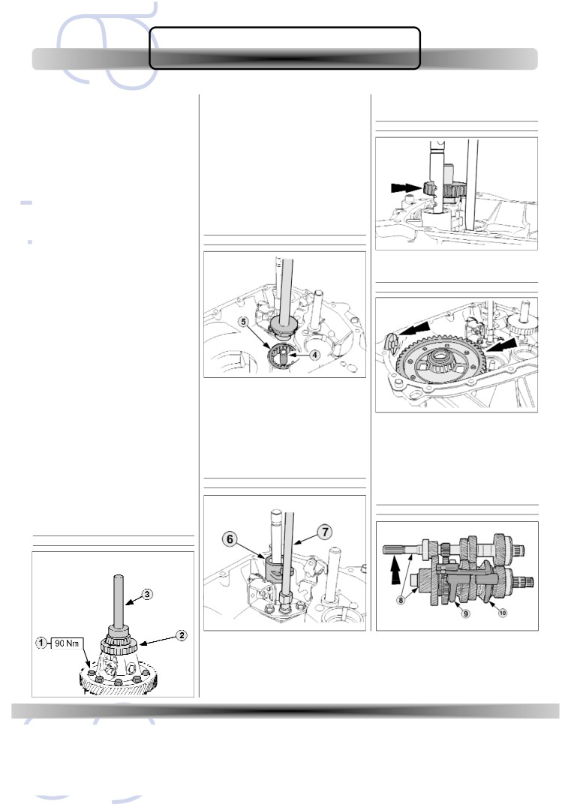
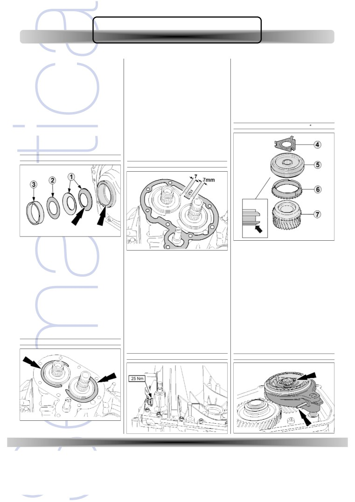
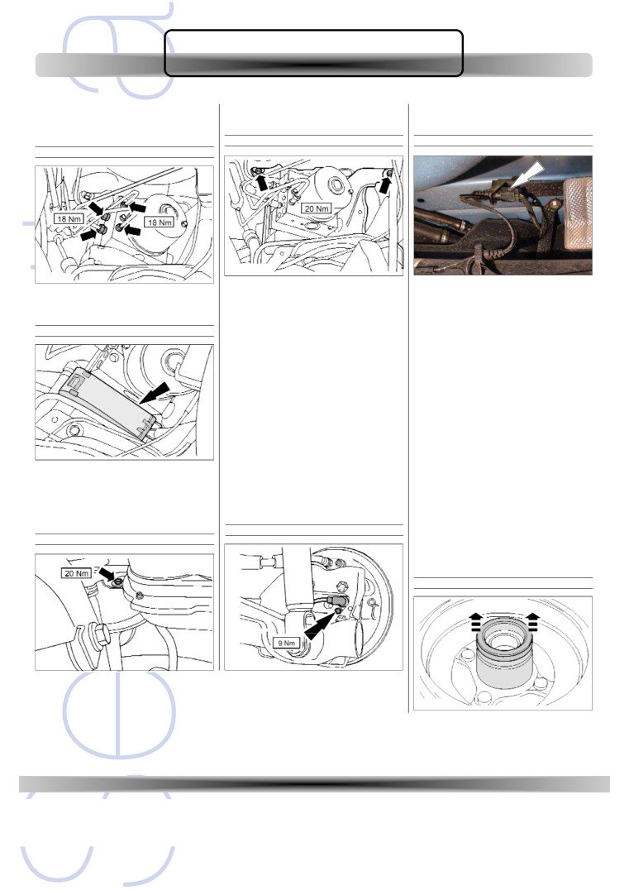
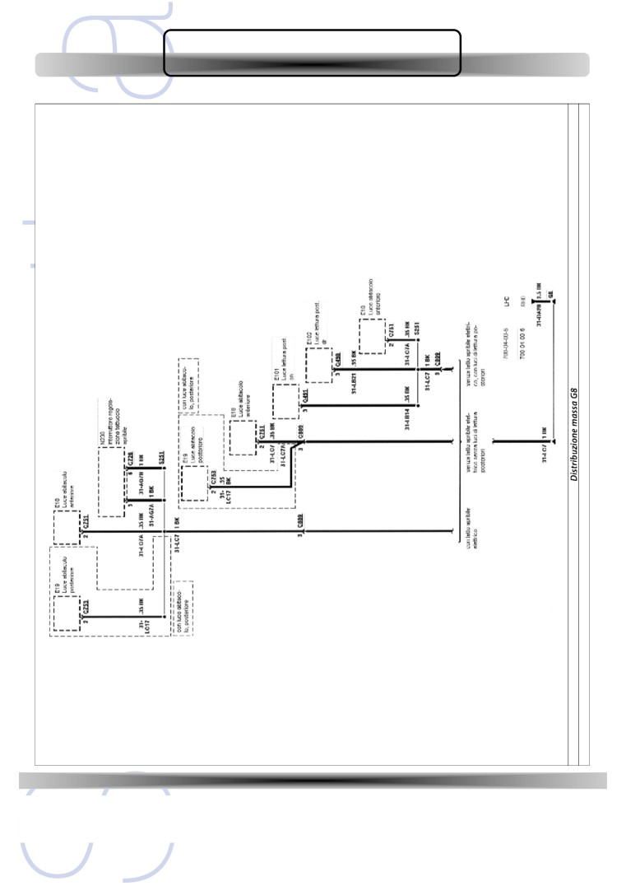
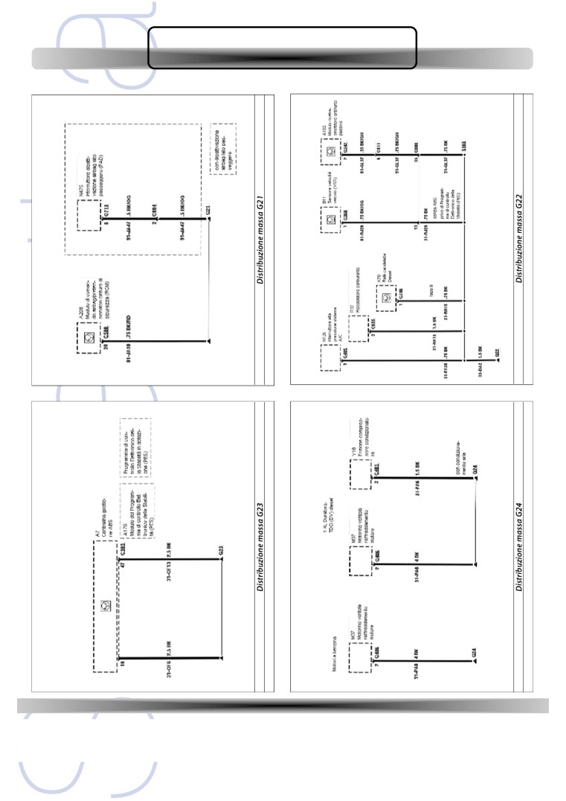

Integrazione redazionale
allo Studio Tecnico
della FORD Fiesta 1.4 TDCi
Questo Cd è una produzione di Semantica Srl. Ogni sua riproduzione senza il consenso dell’editore è vietata.
Copyright 2004 - Semantica srl
Edizioni Semantica Per L'Automobile - Roma Via Dei Cavalleggeri, 1 - Tel. 06 39366535 - Fax 06 6381994
FORD Fiesta 1.4 TDCi
Dal 1998 la Fiat Seicento ha totalizzato oltre un milione e centomila unità pro-
dotte: un vero e proprio successo commerciale, insomma, che dimostra come
il modello ha saputo conquistare un proprio spazio importante all’interno della
sua combattuta fascia di mercato.
La Ford Fiesta 1.4 TDCi con motore DURATORQ è pro-
gettata per essere un’auto molto divertente da guidare.
Il motore turbodiesel common-rail di ultima generazione
offre alte prestazioni, una coppia elevata e consumi
ridotti.
Può essere equipaggiata sia con cambio meccanico sia robotizzato Durashift
(EST). Questa trasmissione permette
al guidatore di scegliere se selezionare
le marce in modalità sequenziale
oppure nella configurazione automa-
tica.
La vettura può essere dotata inoltre
dotata di Controllo Elettronico della
Stabilità (ESP) che aiuta a mantenere
il controllo direzionale della vettura in
ogni condizione.
La vettura è inoltre dotata di un sistema di sicurezza
attiva e passiva all’avanguardia. Sotto le linee eleganti
della vettura c’è una gabbia di sicurezza in acciaio dotata
di uno scomparto motorizzato con barra trasversale e
zone di assorbimento d’urto anteriore e posteriore. Sono
previsti fino a sei airbag, con quelli frontali a doppio sta-
dio che reagiscono in base all’entità dell’urto.
Edizioni Semantica Per L'Automobile - Roma Via Dei Cavalleggeri, 1 - Tel. 06 39366535 - Fax 06 6381994
FORD FIESTA D
generalità
Generalità
VIN sul duomo
Denominazione co m m e rc i a l e
Fiesta
Commercializzazione
dal 2002
Tipo motore
Duratorq
Cilindrata (cm3)
1.399
Potenza (Cv/Kw)
68 / 50 a 4.000 giri/minuto
Tipo trasmissione
iB5
iB5 (automatico)
Numero rapporti
5
5
TARGHETTA DEL COSTRUTTORE
NUMERO IDENTIFICAZIONE VETTURA
Targhetta identificativa
La targhetta di fabbricazione della vettura si trova sul montante cen-
trale destro. Sulla base dei codici stampigliati in produzione è possi-
bile rilevare i dettagli precisi delle specifiche veicolo. Il numero di
identificazione del veicolo (VIN) può essere letto attraverso il para-
brezza o nel vano motore.
Vista targhette
1. Codice omologazione
10. Combinazione porte
2. Numero identificazione veicolo (VIN)
11. Normativa emissioni di scarico
3. Massa complessiva veicolo
12. Codice verniciatura
4. Massa lorda combinata
13. Rivestimenti interni
5. Carico massimo consentito assale anteriore
14. Rapporto al ponte
6. Carico massimo consentito assale posteriore
15. Codice cambio
1.VIN visibile
7.Valori fumosità
16. Codice motore
2.VIN sul duomo ammortizzatore
8.Tipo modello
17. Sterzo
3.Targhetta di fabbricazione
9. Gamma
18. Supporto assale
2
Edizioni Semantica Per L'Automobile - Roma Via Dei Cavalleggeri, 1 - Tel. 06 39366535 - Fax 06 6381994
FORD FIESTA D
generalità
TARGHETTA DI FABBRICAZIONE
Targhetta
MEDIANTE MARTINETTO IN DOTAZIONE
Attenzione:
Per sollevare e sostenere il veicolo utilizzare soltanto i punti di solle-
vamento indicati.
Punti sollevamento anteriore
STAMPIGLIATURA SUL MOTORE
Numero serie motore
Punti sollevamento posteriore
Vin/codice motore
3
Edizioni Semantica Per L'Automobile - Roma Via Dei Cavalleggeri, 1 - Tel. 06 39366535 - Fax 06 6381994
FORD FIESTA D
generalità
Gancio anteriore
Gancio posteriore
4
Edizioni Semantica Per L'Automobile - Roma Via Dei Cavalleggeri, 1 - Tel. 06 39366535 - Fax 06 6381994
FORD FIESTA D
1. motore 1.4 TDCi > dati tecnici
1. Motore
dati tecnici
Motore di 1.400 cm3 a iniezione diretta con sistema di iniezione
La distribuzione è affidata a un albero a camme in testa, bilancieri e
“Common Rail”. Il monoblocco e il telaio di irrigidimento del motore
punterie idrauliche per il recupero del gioco.
sono in alluminio. Grazie all’impiego di questo materiale il motore
L’albero a camme, la pompa ad alta pressione e la pompa del liquido
pesa solo 105 kg.
refrigerante vengono comandati dalla cinghia della distribuzione.
Vista motore
Tipo motore
Duratorq
Codice
F6JA/F6JB/F6JC
Numero cilindri
4
Alesaggio mm
73,7
Corsa mm
82
Cilindrata cm3
1.399
Rapporto di compressione
18:1
Potenza max (Cv/Kv)
68 / 50 a 4.000 giri/minuto
Coppia max (Nm)
160 a 2.000 giri/minuto
Regime minimo
750 giri/minuto
Emissioni inquinanti g/Km
114÷120 (secondo allestimento)
Sistema di iniezione
Siemens Common Rail
Pressione sovralimentazione
1 bar
Anti - inquinamento
Catalizzatore a due vie
5
Edizioni Semantica Per L'Automobile - Roma Via Dei Cavalleggeri, 1 - Tel. 06 39366535 - Fax 06 6381994
FORD FIESTA D
1. motore 1.4 TDCi > dati tecnici
Contrassegni guarnizione
Complessivo testata
Numero tacche
Sporgenza pistone mm
Spessore mm
1
0,7760 ÷ 0,8250
1,35
2
0,6175 ÷ 0,7250
1,25
3
0,7260 ÷ 0,7750
1,30
4
0,8260÷ 0,8750
1,40
5
0,8760 ÷ 0,9830
1,45
VALVOLE
Gioco stelo valvola / guida valvola (mm):
aspirazione
0,103 ÷ 0,118
scarico
0,113 ÷ 0,128
Monoblocco
1. Coperchio testata; 2. Anello di tenuta condotto aspirazione; 3. Guarnizione coper-
chio te s t a t a ;
4 . Al l og g i a m e n to albe ri a camme
(parte supe ri o re ) ;
5. Alloggiamento alberi a camme (parte inferiore); 6.Testata
Testata in lega alluminio, due valvole per cilindro.
1. Camicia acqua
Gli inserti dei guida va lvola e sede va lvola sono in accia io sinte ri z z a-
2.Telaio di irrigidimento
to.
Rettifica massima ammessa sul piano della testata: 0,4 mm.
Deformazione massima - misurata longitudinalmente e diagonal-
Monoblocco in alluminio con canne in ghisa. Presenta un tipo di
mente: 0,025 mm.
struttura “open deck”,cioè con camicie acqua aperte verso l’alto.
Non è possibile rettificare il piano di accoppiamento con la testata,
né le canne dei cilindri.
GUARNIZIONE TESTATA
Diametro alesaggio cilindro (mm):
73,700 ÷ 73,716
Diametro sede cuscinetto di banco (mm):
53,655 ÷ 53,674
Guarnizione in acciaio multistrato.
Per l’adeguato accoppiamento alla sporgenza pistone del motore, la
Gioco radiale cuscinetto di banco (mm):
0,017 ÷ 0,043
guarnizione è disponibile in cinque spessori diversi individuabili
Gioco assiale cuscinetto di banco (mm):
0,050 ÷ 0,322
mediante contrassegni sulla guarnizione stessa.
6
Edizioni Semantica Per L'Automobile - Roma Via Dei Cavalleggeri, 1 - Tel. 06 39366535 - Fax 06 6381994
FORD FIESTA D
1. motore 1.4 TDCi > dati tecnici
ALBERO MOTORE
Albero motore in acciaio fucinato con 5 supporti di banco.
Il gioco assiale viene limitato sul quarto cuscinetto di banco tramite
DISTRIBUZIONE
due semirondelle reggispinta.
Cinematismo distribuzione
Gioco assiale perno di banco (mm):
0,100 ÷ 0,300
Diametro perno di banco (mm):
49,962 ÷ 49,981
Diametro perno di biella (mm):
44,975 ÷ 44,991
PISTONI
I pistoni in lega leggera dotati di camera di combustione incorpora-
ta nel cielo pistone.
Il centro della camera di combustione a forma di cono garantisce
un’ottima fluidodinamica nella miscelazione del carburante con il
comburente.
Il cielo pistone riporta anche due avvallamenti per i piattelli valvole e
la stampigliatura di una freccia che indica il corretto montaggio.
I pistoni sono disponibili solo in una classe di peso.
Diametro pistone (mm):
73,520 ÷ 73,536
Gioco pistone nel cilindro (mm):
0,164 ÷ 0,196
Luci fascia elastica
1. Ingranaggio albero a camme
5. Foro spina di registrazione albero motore
anello di compressione superiore (mm):
0,200 ÷ 0,350
2. Foro spina di registrazione
6. Ingranaggio cinghia distribuzione pompa acqua
anello di compressione inferiore (mm):
0,200 ÷ 0,400
albero a camme
7. Puleggia tendicinghia
fascia raschiaolio (mm):
0,800 ÷ 1,000
3. Puleggia tendicinghia
8. Ingranaggio cinghia pompa alta pressione
4. Ingranaggio albero motore
SPINOTTI
Mediante un albero a camme in testa trascinato da cinghia dentata.
Spinotto flottante mantenuto in posizione tramite due anelli elastici.
Il corretto tensionamento della cinghia è affidato a un rullo tendito-
re automatico a molla non sensibile alle variazioni di temperatura.
Lunghezza spinotto (mm):
59,700 ÷ 60,000
Diametro spinotto (mm):
24,995 ÷ 25,000
ALBERO A CAMME
Albero a camme in acciaio con camme e alberi di raccordo calettati a
BIELLE
cinque supporti.
Albero a camme
Bielle fucinate con cuscinetti separati a frattura.
Diametro alesaggio testa di biella (mm):
48,655 ÷ 48,671
Diametro alesaggio piede di biella (mm):
25,000
Gioco cuscinetto di biella (mm):
0,024 ÷ 0,070
VOLANO
Volano a doppia massa in ghisa con supe rficie di at t ri to di 210 mm.
1. Superfici di scorrimento cuscinetti; 2. Albero di raccordo calettato con dado per la pompa
Non pre s e nta ri fe ri m e nti di montaggio obbligato e dispone di due fo ri
di comando a depressione; 3. Albero di raccordo calettato con rondella reggispinta integrata
ciechi per il bloc caggio dell’ a l be ro moto re in due diverse po s i z i o n i .
7
Edizioni Semantica Per L'Automobile - Roma Via Dei Cavalleggeri, 1 - Tel. 06 39366535 - Fax 06 6381994
FORD FIESTA D
1. motore 1.4 TDCi > dati tecnici
Una rondella reggispinta garantisce la guida assiale dell’albero a
può essere sca ri cato at t raverso l’ a l l og g i a m e nto nella coppa olio, i n
camme.
m odo che non vi siano co ntaminazioni ca u s ate dall’olio che fuori e s ce.
Complessivo filtro/scambiatore
Gi oco assiale albe ro a camme (mm):
0,195 ÷ 0,300
Di a m e t ro pe rno di cuscinetto albe ro a camme (mm): 23,959 ÷ 23,980
La lubrificazione è garantita da una pompa dell’olio a doppio rotore.
Il circuito è dotato di una valvola di ritegno posta nella testata che ha
il compito di garantire la lubrificazione della parte alta del motore
trattenendo l’olio dopo lo spegnimento del motore, garantendo una
1. Cartuccia filtro;
2. Anello toroidale;
3. Coperchio filtro olio;
4. Tappo di chiusura;
corretta lubrificazione all’avviamento del motore.
5. Scambiatore calore olio
OLIO MOTORE
PRESSOSTATO
Ubicazione pressostato
Olio motore E SAE 5W-30 Ford Formula WSS-M2C913-B
Rifornimento iniziale compreso filtro dell’olio 4,20 litri
Rabbocco in servizio compreso filtro dell’olio 3,80 litri
POMPA OLIO
Il pressostato olio è collocato sul lato sinistro del motore in prossimi-
tà della zona del primo cilindro sul monoblocco.Chiude un contatto
in caso di assenza di pressione indicando al conducente l’avaria del
sistema tramite la spia posta nel quadro strumenti.
SPRUZZATORI OLIO
1. Valvola controllo pressione;
2. Albero motore;
3. Appiattimenti;
4. Rotore interno;
5. Rotore esterno
Il raffreddamento dei pistoni è garantito grazie agli spruzzatori di
olio posti nella parte bassa del monoblocco.
Pompa dell’olio collocata sul lato anteriore , azionata direttamente
dall’albero motore tramite due appiattimenti.
Ugelli olio
La pompa integra la valvola di controllo della pressione che entra in
funzione quando la pressione supera i 5 bar.
Pressione olio al regime minimo
1,0 - 2,0 bar
Pressione olio a 2.000 giri/min
2,3 - 3,7 bar
FILTRO OLIO
Il filtro dell’olio è collocato sul lato sinistro del motore vicino al vola-
no. È dotato di uno scambiatore di calore del tipo olio/acqua.
Sulla ca rtuccia filtro è pre s e nte un tappo per il fo ro di deflusso nell’ a l-
l og g i a m e nto del filtro. Du ra nte la sostituzione della ca rt u c c i a , l’ o l i o
8
Edizioni Semantica Per L'Automobile - Roma Via Dei Cavalleggeri, 1 - Tel. 06 39366535 - Fax 06 6381994
FORD FIESTA D
1. motore 1.4 TDCi > dati tecnici
La pompa viene trascinata dalla cinghia della distribuzione ed è
dotata di un alloggiamento in plastica.
Complessivo sistema raffreddamento
TERMOSTATO
Gruppo termostatico
1. Alloggiamento termostato
2. Sensore temperatura
1. Radiatore; 2. Serbatoio espansione liquido di raffreddamento; 3. Pompa liquido di raf-
freddamento; 4. Blocco riscaldatore; 5. Monoblocco; 6. Scambiatore calore riscaldamento;
La scatola termostatica è fissata tramite flangia sulla testata lato vola-
7. Alloggiamento termostato
no. Realizzata in materiale plastico, comprende il termostato e il sen-
sore ECT del liquido di raffreddamento.
LIQUIDO RAFFREDDAMENTO
Apertura termostato:
83°C
Antigelo:
Super Plus 2000 Motorcraft WSS-M97B44-D
Densità relativa:
1,061 a + 15°C
RADIATORE
Percentuale approssimativa antigelo: 50%
Rimane liquido a: - 25 °C
Prova di pressione radiatore (psi):
20
Solidifica a:
- 35 °C
Periodicità di manutenzione:100.000 Km / 10 anni
SERBATOIO DI ESPANSIONE
Capacità sistema (litri):
5,5
Posto nel vano motore in prossimità del duomo sinistro.
POMPA ACQUA
La pompa del liquido di raffreddamento è montata sul lato distribu-
zione del monoblocco.
9
Edizioni Semantica Per L'Automobile - Roma Via Dei Cavalleggeri, 1 - Tel. 06 39366535 - Fax 06 6381994
FORD FIESTA D
1. motore 1.4 TDCi > dati tecnici
Dalla pompa di alimentazione il carburante giunge alla pompa ad
alta pressione.
Questa è formata da tre cilindri disposti in senso radiale.
Complessivo sistema iniezione
POMPA BASSA PRESSIONE
1.Tubazione mandata carburante
2. Collegamento elettrico per trasmettitore serbatoio
3.Tubazione ritorno carburante
1. Iniettore; 2. Tubazioni recupero gasolio; 3. Pompa alta pressione; 4. Linea carburante
(Common Rail); 5. Sensore pressione carburante; 6.Tubazioni alta pressione carburante
Nell’unità di convogliamento carburante è integrata una pompa
aspirante a getto. Il carburante di ritorno aspira in questo modo ulte-
POMPA ALTA PRESSIONE
riore carburante nell’alloggiamento.
In questo modo il volume di carburante del serbatoio può essere
Pompa alta pressione
sfruttato in maniera ottimale.
FILTRO CARBURANTE
1. Vite scarico acqua
2. Preriscaldatore carburante elettrico
1.Valvola dosaggio carburante; 2. Entrata (dal filtro); 3. Albero di comando; 4. Regolatore
pressione carburante; 5. Uscita (alta pressione); 6. Condotto di ritorno
Il ca r b u ra nte viene co nvog l i ato da una pompa di aliment a z i o n e
l filtro carburante è collocato sul lato cambio, dispone di un preri-
i nte g rat a .
scaldamento elettrico del carburante per l’impiego in condizioni di
Si tratta di una pompa a palette che prende il movimento dall’albero
temperatura rigida.
di comando della pompa ad alta pressione.
Dispone di un separatore acqua.
10
Edizioni Semantica Per L'Automobile - Roma Via Dei Cavalleggeri, 1 - Tel. 06 39366535 - Fax 06 6381994
FORD FIESTA D
1. motore 1.4 TDCi > dati tecnici
Il sistema di alimentazione a bassa pressione è dotato di una pompa
COMMON RAIL
a mano. Consente di convogliare il carburante dal serbatoio, attraver-
so il filtro carburante, fino a poco prima dell’entrata della pompa ad
Rampa comune
alta pressione, affinché la pompa a palette possa aspirare autonoma-
mente il carburante dal serbatoio.
Il tubo collettore del carburante di ritorno riunisce le tubazioni di
ritorno dalla pompa ad alta pressione, dalla pompa a mano e del car-
burante in eccesso e accoglie il sensore temperatura carburante.
REGOLATORE DI PRESSIONE
Il regolatore di pressione si trova nel condotto di accesso tra pompa
di alimentazione e pompa ad alta pressione.
La valvola di dosaggio carburante è di tipo elettromagnetico e viene
1.Sensore pressione carburante; 2. Raccordo tubazione alta pressione (dalla pompa ad alta
attivata dal PMC (modulo di gestione del motore). La valvola è del
pressione); 3. Raccordi tubazioni alta pressione (agli iniettori)
tipo elettromagnetico.
La linea carburante “Common Rail” è realizzata in acciaio fucinato.
Ha il compito di accumulare il carburante ad alta pressione e smor-
INIETTORI
zare le oscillazioni dovute alle iniezioni.
TUBAZIONI ALTA PRESSIONE
1. Connettore collegamento cablaggio
2. Raccordo tubazione alta pressione
3. Paraolio
4. Iniettore
Le tubazioni ad alta pressione del carburante collegano la linea car-
5. Raccordo tubazione di recupero con fermo
burante alla pompa ad alta pressione e agli iniettori.
Le tubazioni ad alta pressione dirette agli iniettori hanno tutte la
medesima lunghezza.Tutte le tubazioni ad alta pressione presenta-
no raggi di curvatura tarate perfettamente sul sistema.
Gli iniettori sono costituiti da tre diversi gruppi funzionali:
Ugello di iniezione
Servosistema idraulico
TUBAZIONI BASSA PRESSIONE
Attuatore piezoelettrico.
L’attivazione elettromeccanica avviene con l’aiuto di elementi pie-
zoelettrici che consentono un periodo di attivazione particolarmen-
te rapido di circa 0,2 millisecondi.
1.Tubazione di ritorno a serbatoio
2.Tubazione di mandata da filtro carburante
3. Pompa manuale
4.Tubazioni recupero carburante in eccesso dagli iniettori
5.Tubo collettore di ritorno carburante
con sensore temperatura carburante
6.Tubazione di mandata a pompa alta pressione
7.Tubazione di ritorno dalla pompa alta pressione
11
Edizioni Semantica Per L'Automobile - Roma Via Dei Cavalleggeri, 1 - Tel. 06 39366535 - Fax 06 6381994
FORD FIESTA D
1. motore 1.4 TDCi > dati tecnici
TURBOCOMPRESSORE
Complessivo turbocompressore
Complessivo alimentazione aria
1.Guarnizione in acciaio; 2. Flangia per sistema ricircolo gas di scarico (EGR ) sul collettore
di scarico; 3.Turbocompressore
ll collettore di scarico in ghisa è dotato di una flangia per il turbo-
compressore e il sistema EGR.
Il turbocompressore dispone di geometria fissa ed è in grado di pro-
durre una pressione di sovralimentazione fino a 1,0 bar.
FILTRO ARIA
INTERCOOLER
Filtro aria a secco con elemento di carta intersostituibile.
Intercooler del tipo aria/aria in alluminio.
12
Edizioni Semantica Per L'Automobile - Roma Via Dei Cavalleggeri, 1 - Tel. 06 39366535 - Fax 06 6381994
FORD FIESTA D
1. motore 1.4 TDCi > dati tecnici
Descrizione
Valore Nm
Viti fissaggio cambio
47
Viti fissaggio pompa depressione freni
20
Viti fissaggio supporto posteriore motore
48
Vite fissaggio puleggia albero a camme
43
Viti fissaggio supporto anteriore motore
48
Vite fissaggio tendicinghia comando accessori
20
Viti limitatore rollio motore a cambio
48
Puleggia folle cinghia di comando accessori
45
Dado centrale supporto posteriore motore
90
Staffa supporto pompa servosterzo
19
Viti limitatore rollio motore a traversa assale anteriore
48
Viti fissaggio pompa acqua
10
Dadi fissaggio giunto sferico braccio inferiore
52
Viti fissaggio tubo di adescamento pompa olio
7
Dadi auto b l oc ca nti ca p pelli cuscinetto
Viti fissaggio scambiatore di calore olio
10
ce nt rale albe ro inte rm e d i o
25
Viti fissaggio pompa olio
10
Viti fissaggio scatola termostato
7
Tappo scarico coppa olio
25
Vite fissaggio puleggia albero motore
Prigionieri coppa olio
7
Stadio 1
30
Dadi e viti fissaggio coppa olio
10
Stadio 2
180°
Pressostato olio
30
Viti fissaggio volano
Scambiatore calore olio
10
Stadio 1
30
Viti testata
Stadio 2
90°
Stadio 1
20
Viti cappelli cuscinetti banco
Stadio 2
40
Stadio 1
10
Stadio 3
180°
Stadio 2
allentare di 180°
Carter superiore distribuzione
4
Stadio 3
30
Carter inferiore distribuzione
5
Stadio 4
140°
Prigionieri collettore scarico
8
Viti fissaggio cappelli cuscinetti biella
Dadi fissaggio
25
Stadio 1
10
Candelette preriscaldamento
8
Stadio 2
allentare di 180°
Cablaggio candelette preriscaldamento
2
Stadio 3
10
Viti fissaggio anteriori alternatore
40
Stadio 4
100°
Viti fissaggio posteriori alternatore
39
Ugelli spruzzatori olio raffreddamento pistoni
20
Viti fissaggio staffa supporto alternatore
19
Viti fissaggio pompa carburante
22
Vite fissaggio compressore sistema aria condizionata
25
Viti staffa supporto pompa carburante
20
Vite fissaggio staffa compressore aria condizionata
19
Viti fissaggio staffa supporto post. pompa carburante
10
Dadi fissaggio turbocompressore
25
Dado fissaggio puleggia pompa carburante
50
Prigionieri turbocompressore sul collettore scarico
10
Viti fissaggio scudo protezione rumorosità e vibrazioni
20
Viti fissaggio tubazioni ritorno olio turbocompressore
10
Viti fissaggio collettore iniezione
22
Vi te ra c co rdo tubazione mandata olio turboco m p re s s o re 27
Forcelle fissaggio iniettori
30
Viti fissaggio scudo termico turbocompressore
12
Dadi tubazione mandata carburante alta pressione a iniettori
Vite fissaggio sensore posizione albero motore
8
Stadio 1
17
Viti fissaggio motorino avviamento
35
Stadio 2
22
Dadi tubo flessibile scarico
47
Viti fissaggio spingidisco e frizione
29
Dado serraggio tubo flessibile scarico
47
Scudo filtro carburante
2
Dadi catalizzatore a turbocompressore
25
Viti fissaggio alloggiamento albero a camme
Viti fissaggio superiori scudo termico catalizzatore
3
Stadio 1
5
Viti fissaggio inferiori scudo termico catalizzatore
12
Stadio 2
10
Viti tubo ricircolo gas scarico
Vite fissaggio sensore posizione albero a camme (CMP) 5
EGR collettore aspirazione
5
Prigioniero puleggia folle cinghia distribuzione
7
Viti fissaggio scambiatore calore EGR
10
Dado puleggia folle cinghia distribuzione
35
Viti fissaggio valvola EGR
10
Vite fissaggio tendicinghia distribuzione
30
Viti fissaggio valvola EGR elettronica
11
13
Edizioni Semantica Per L'Automobile - Roma Via Dei Cavalleggeri, 1 - Tel. 06 39366535 - Fax 06 6381994
FORD FIESTA D
1. motore 1.4 TDCi > gestione motore
gestione moto re
Complessivo gestione motore
1. Sensore flusso massa aria (MAF)
2. Sensore pressione carburante
3. Sensore temperatura carburante
4. Sensore temperatura liquido raffreddamento (ECT)
5. Sensore posizione albero a camme (CMP)
6. Sensore posizione albero motore (CKP)
7. Sensore velocità veicolo (VSS)
8. Sensore posizione valvola EGR
9. Alternatore
10. Relè blocco avviamento
11. Commutatore avviamento
12. Batteria
13. Connettore trasferimento dati (DLC)
14. Modulo gestione motore (PCM)
15. Pompa alta pressione con regolatore di pressione
16. Iniettori
17. Relè preriscaldamento
18. Elettrovalvola ricircolo gas di scarico (EGR)
19. Modulo gestione candelette
20. Quadro strumenti
21. Spia di preriscaldamento
Il motore DuraTorq 1.4 TDCi turbodiesel impiega un sistema di inie-
Tenendo conto dei vari parametri in entrata, il modulo PCM attiva gli
zione Siemens Common Rail. Nella linea carburante (Common Rail)
iniettori piezoelettrici e questi iniettano la quantità di carburante
viene mantenuta una pressione di iniezione fino a 1.500 bar.
necessaria. Il sensore pressione carburante sulla linea comune forni-
Nella pompa ad alta pressione è integrata una pompa di alimenta-
sce al modulo PCM il dato sulla pressione in tempo reale.
zione che trasporta il carburante dal serbatoio alla pompa di alta
Un ulteriore parametro è la temperatura carburante
pressione.
In base a questi parametri in entrata, il PCM regola il dosaggio car-
burante per il sistema, con l’aiuto della valvola di dosaggio e del
regolatore di pressione carburante, in modo che per ogni condizione
Principio di funzionamento
di funzionamento sia disponibile la pressione carburante ottimale.
La pompa ad alta pressione convoglia il carburante attraverso il siste-
Il carburante in eccesso ritorna nel serbatoio attraverso l’apposito
ma di tubi ad alta pressione verso la linea carburante e verso gli iniet-
tubo collettore lambendo il sensore temperatura carburante.
tori, dove si forma la pressione di iniezione.
Nel serbatoio una pompa aspirante a getto (Venturi) garantisce che
Fasatura di iniezione carburante e quantità di iniezione vengono cal-
il carburante di ritorno vada a riempire l’unità di convogliamento car-
colate dal modulo di gestione motore (PCM).
burante presente nel serbatoio.
14
Edizioni Semantica Per L'Automobile - Roma Via Dei Cavalleggeri, 1 - Tel. 06 39366535 - Fax 06 6381994
FORD FIESTA D
1. motore 1.4 TDCi > gestione motore
L’interruttore BPP è chiuso in condizione di riposo (freno a pedale
Centralina di gestione motore (PCM)
non azionato) e invia un segnale di massa al PCM.
Interruttore BPP
PCM
Sensore APP
Con il sensore APP sul pedale dell’acceleratore viene rilevato il carico
Il PCM si trova nel vano motore tra il faro sinistro e la batteria veico-
motore ovvero l’intenzione di accelerazione del conducente; il dato
lo. Dispone di tre connettori a spina con un totale di 112 contatti.
viene quindi inviato al PCM.Il sensore APP integra due potenziome-
Il PCM controlla ed elabora i segnali dei sensori.
tri come misura di sicurezza contro le avarie.
Con queste informazioni calcola l’apertura della valvola di dosaggio
Sensore APP
carburante, la pressione di sistema, nonché l’anticipo e la quantità di
iniezione in ogni condizione di funzionamento del motore.
SENSORI
Interruttore CPP
Interruttore CPP
Sensore CKP
Il sensore CKP si trova dietro all’ingranaggio albero motore, sul corpo
della pompa olio.
Sensore CKP
L’interruttore CPP è collocato sulla pedaliera. Il PCM rileva il cambio
marcia tramite l’ interruttore CPP e migliora quindi la regolarità di
funzionamento del motore.
L’interruttore CPP invia un segnale di massa al PCM quando si preme
il pedale per disinnestare la frizione.
Interruttore BPP
L’ i nte rru t to re BPP è po s to sulla pe d a l i e ra sul pedale del fre n o.
Fornisce informazioni sull’azionamento dei freni alla PCM.
15
Edizioni Semantica Per L'Automobile - Roma Via Dei Cavalleggeri, 1 - Tel. 06 39366535 - Fax 06 6381994
FORD FIESTA D
1. motore 1.4 TDCi > gestione motore
Funziona secondo l’effetto Hall rilevando le 60 coppie di poli magne-
PCM calcola la temperatura carburante, dato necessario per la tara-
tici distribuiti sull’ingranaggio dell’albero motore Fornisce informa-
tura fine della quantità di iniezione.
zioni sui giri del motore.
Sensore temperatura
Sensore CMP
Il sensore CMP si trova dietro all’ingranaggio albero motore, sulla
testata.
Sensore CMP
Sensore pressione carburante
Sensore pressione
Il sensore CMP funziona secondo l’effetto Hall e sfrutta l’ingranaggio
dell’albero a camme come punto di riferimento per riconoscere il
cilindro n. 1.
Nell’ingranaggio dell’albero a camme, a questo scopo, è integrato un
anello di riferimento in materiale magnetizzabile.
Sensore ECT
Sensore ECT
Il sensore pressione ca r b u ra nte si trova sulla linea ca r b u ra nte
(Common Rail), che è collocata sul lato destro del monoblocco.
Sulla base della pressione carburante rilevata, il PCM calcola il tempo
di iniezione per la quantità necessaria. Il sensore pressione carburan-
te è un sensore piezoelettrico, che invia un segnale di tensione varia-
bile al PCM in funzione della pressione carburante.
Sensore MAF
Sensore MAF
Il sensore ECT è una resistenza con coefficiente termico negativo
(resistenza NTC), ed è posizionato sulla scatola termostatica.
Tramite la caduta di tensione sul sensore ECT la PCM calcola la tem-
peratura del liquido di raffreddamento.
Sensore temperatura carburante
Il sensore temperatura carburante si trova in un tubo collettore di
ritorno carburante, posto sopra alla pompa ad alta pressione.
Il sensore temperatura carburante è una resistenza con coefficiente
termico negativo (resistenza NTC).
Tramite la caduta di tensione sul sensore temperatura carburante il
Il sensore MAF si trova all’uscita della scatola filtro dell’aria e rileva la
16
Edizioni Semantica Per L'Automobile - Roma Via Dei Cavalleggeri, 1 - Tel. 06 39366535 - Fax 06 6381994
FORD FIESTA D
1. motore 1.4 TDCi > gestione motore
quantità d’aria fresca aspirata dal motore.
Il segnale del sensore viene utilizzato per il controllo della funzione
Modulo di gestione candelette
EGR. Sulla base del valore della quantità d’aria fresca aspirata la
gestione motore può calcolare e regolare la quantità di gas di scari-
Modulo
co in ricircolo.
Sensore VSS
Sensore VSS
I veicoli senza sistema antibloccaggio (ABS) richiedono,per il calcolo
della velocità veicolo,il VSS.
Il VSS si trova sul cambio e funziona secondo l’effetto Hall.
I veicoli con ABS sfruttano i segnali dei sensori ruota per la rilevazio-
ne della velocità veicolo.
Il modulo di gestione candelette si trova nel vano motore sul PCM,
vicino alla batteria veicolo.Il modulo attiva le candelette.
Esso integra un relè e un sistema elettronico di gestione che comu-
ATTUATORI
nica con il PCM.
Il PCM invia un’informazione al modulo di gestione candelette sul
Pompa ad alta pressione
tempo di attivazione delle candelette. Inoltre vigila sul funzionamen-
Sulla pompa ad alta pressione si trovano la valvola di dosaggio car-
to del modulo di gestione candelette.
burante e il regolatore della pressione carburante. Entrambi i com-
ponenti sono elettrovalvole di controllo della pressione carburante
nella linea carburante (Common Rail). Entrambe le elettrovalvole
Elettrovalvola EGR
vengono attivate con collegamento a massa operato dal PCM.
L’ elettrovalvola EGR si trova nel vano motore dietro al faro sinistro
davanti al duomo ammortizzatore sinistro.
L’elettrovalvola EGR attiva la depressione che serve ad attivare la val-
Iniettori
vola EGR.
L’elettrovalvola EGR viene attivata tramite collegamento a massa
Iniettori
operato dal PCM in funzione della quantità di gas di scarico da ripor-
tare in circolo.
Anticipo e quantità di iniezione vengono realizzati tramite iniettori
comandati elettricamente.
L’attivazione degli iniettori avviene direttamente tramite il PCM.
L’attivazione elettromeccanica avviene con l’aiuto di elementi pie-
zoelettrici che consentono un periodo di attivazione particolarmen-
te rapido di circa 0,2 millisecondi.
17
Edizioni Semantica Per L'Automobile - Roma Via Dei Cavalleggeri, 1 - Tel. 06 39366535 - Fax 06 6381994
FORD FIESTA D
1. motore 1.4 TDCi > gestione motore
18
Edizioni Semantica Per L'Automobile - Roma Via Dei Cavalleggeri, 1 - Tel. 06 39366535 - Fax 06 6381994
FORD FIESTA D
1. motore 1.4 TDCi > gestione motore
19
Edizioni Semantica Per L'Automobile - Roma Via Dei Cavalleggeri, 1 - Tel. 06 39366535 - Fax 06 6381994
FORD FIESTA D
1. motore 1.4 TDCi > gestione motore
20
Edizioni Semantica Per L'Automobile - Roma Via Dei Cavalleggeri, 1 - Tel. 06 39366535 - Fax 06 6381994
FORD FIESTA D
1. motore 1.4 TDCi > gestione motore
21
Edizioni Semantica Per L'Automobile - Roma Via Dei Cavalleggeri, 1 - Tel. 06 39366535 - Fax 06 6381994
FORD FIESTA D
1. motore 1.4 TDCi > gestione motore
22
Edizioni Semantica Per L'Automobile - Roma Via Dei Cavalleggeri, 1 - Tel. 06 39366535 - Fax 06 6381994
FORD FIESTA D
1. motore 1.4 TDCi > gestione motore
23
Edizioni Semantica Per L'Automobile - Roma Via Dei Cavalleggeri, 1 - Tel. 06 39366535 - Fax 06 6381994
FORD FIESTA D
1. motore 1.4 TDCi > gestione motore
24
Edizioni Semantica Per L'Automobile - Roma Via Dei Cavalleggeri, 1 - Tel. 06 39366535 - Fax 06 6381994
FORD FIESTA D
1. motore 1.4 TDCi > gestione motore
Vista componenti gestione motore
Vista componenti gestione motore
25
Edizioni Semantica Per L'Automobile - Roma Via Dei Cavalleggeri, 1 - Tel. 06 39366535 - Fax 06 6381994
FORD FIESTA D
1. motore 1.4 TDCi > gestione motore
Vista componenti gestione motore
Vista componenti gestione motore
26
Edizioni Semantica Per L'Automobile - Roma Via Dei Cavalleggeri, 1 - Tel. 06 39366535 - Fax 06 6381994
FORD FIESTA D
1. motore 1.4 TDCi > gestione motore
Vista componenti gestione motore
Vista componenti gestione motore
27
Edizioni Semantica Per L'Automobile - Roma Via Dei Cavalleggeri, 1 - Tel. 06 39366535 - Fax 06 6381994
FORD FIESTA D
1. motore 1.4 TDCi > operazioni senza distacco del motore
o pe razioni manute n z i o n e
Operazioni senza distacco del motore
Smontaggio
- Scollegare il connettore del sensore tempe-
della distribuzione.
- Scollegare la batteria.
ratura carburante.
- Rimuovere il carter inferiore della distribu-
- Posizionare il veicolo sul ponte sollevatore.
- Scollegare il cablaggio dal carter superiore
zione.
- Svuotare il sistema di raffreddamento.
della distribuzione.
- Scollegare il tubo di espansione del liquido
- Rimuovere il carter superiore della distribu-
Rimozione carter inferiore
di raffreddamento dal serbatoio di espansio-
zione.
ne.
Rimozione viti carter superiore
Rimozione flessibile espansione
Avvertenza:
Non toccare la ruota fonica esterna.
- Rimuovere il serbatoio di espansione.
- Rimuovere la cinghia di comando accessori.
- Posizionare l’attrezzo per il bloccaggio albe-
Fissaggio ruota fonica
Rimozione serbatoio espansione
ro motore.
Posizionamento attrezzo
- Avvitare la vite di fissaggio della puleggia
Avvertenza:
dell’albero motore.
Accertarsi che l’attrezzo si inserisca corretta-
- Abbassare il veicolo.
mente.
- Allineare l’albero a camme utilizzando l’at-
trezzo per la messa in fase.
- Ruotare il motore fino a quando l’attrezzo si
- Ruotare il motore fino a quando il foro di
inserisce in una delle fessure del volano.
allineamento sulla puleggia albero a camme
- Rimuovere la puleggia dell’albero motore.
si trova nella posizione ore 2.
- Rimuovere l’attrezzo di fermo.
- Sollevare il veicolo.
- Rimuovere il cablaggio del sensore di velo-
- Ri m u ove re la guida della cinghia della
cità albero motore dal coperchio inferiore
distribuzione.
28
Edizioni Semantica Per L'Automobile - Roma Via Dei Cavalleggeri, 1 - Tel. 06 39366535 - Fax 06 6381994
FORD FIESTA D
1. motore 1.4 TDCi > operazioni senza distacco del motore
- Rimuovere il tendicinghia della distribuzio-
- Montare il tendicinghia della distribuzione.
- Montare la puleggia cinghia della distribu-
ne.
- Montare una nuova cinghia della distribu-
zione albero motore.
zione.
- Al l i n e a re l’ a l be ro moto re utilizzando un
Rimozione tendicinghia
- Montare la staffa del supporto anteriore del
attrezzo per l’allineamento corretto.
motore.
Nota:
Nota:
Utilizzando una chiave per viti a testa esago-
Montare i nuovi dadi di fissaggio del suppor-
nale incassata, mantenere in tensione fino a
to anteriore del motore.
quando la vite del tendicinghia non è serrata.
- Serrare le viti della staffa del supporto ante-
- Tendere la cinghia della distribuzione.
riore motore alla coppia di 60 Nm.
- Ruotare il braccio di registrazione del tendi-
- Montare il supporto anteriore del motore.
cinghia della distribuzione in senso antiora-
- Serrare le viti del supporto anteriore del
rio per tendere leggermente la cinghia.
motore alla coppia di 48 Nm.
- L’indicatore deve essere posizionato tra i lati
- Fissare il serbatoio del liquido servosterzo al
della finestra.
- Rimuovere il serbatoio del liquido servo-
pannello di apertura della griglia del radiato-
- Serrare la vite di fissaggio del tendicinghia
sterzo e riporlo a lato.
re.
della distribuzione alla coppia di 30 Nm.
- Rimuovere l’attrezzo per la messa in fase
- Mettere in fase la puleggia della pompa car-
albero a camme.
burante alta pressione con un attrezzo ido-
Tensionamento cinghia
- Rimuovere il supporto anteriore del moto-
neo.
re.
Fase puleggia pompa
Rimozione supporto motore
- Montare la guida della cinghia della distri-
buzione.
- Serrare i dadi della guida della cinghia della
- Accertarsi che i fori di allineamento dell’al-
distribuzione alla coppia di 10 Nm.
- Rimuovere la staffa del supporto anteriore
bero a camme sino allineati correttamente.
- Ruotare il motore dieci volte.
del motore.
- Co nt ro l l a re che la chiavetta dell’ a l be ro
- Montare il carter inferiore della distribuzio-
motore sia nella posizione corretta.
ne.
Rimozione staffa
- Serrare le viti del carter inferiore della distri-
Chiavetta albero motore
buzione alla coppia di 6 Nm.
- Collegare il cablaggio del sensore di veloci-
tà albero motore al coperchio inferiore della
distribuzione.
- Montare l’attrezzo di fermo del volano.
Nota:
Montare una nuova vite di fissaggio della
puleggia albero motore.
- Montare la puleggia dell’albero motore.
- Serrare la vite della puleggia albero motore
- Rimuovere la cinghia della distribuzione.
in due fasi.
Nota:
Fase 1:
30 Nm
Montare la vecchia vite della puleggia albero
Fase 2:
180 gradi
Montaggio
motore.
- Smontare l’attrezzo di fermo dal volano.
Nota:
Nota:
- Montare la cinghia di comando accessori.
Non serrare la vite di fissaggio del tendicin-
Non serra re la vite della puleggia albe ro
- Montare il carter superiore della distribuzio-
ghia della distribuzione in questa fase.
motore in questa fase.
ne.
29
Edizioni Semantica Per L'Automobile - Roma Via Dei Cavalleggeri, 1 - Tel. 06 39366535 - Fax 06 6381994
FORD FIESTA D
1. motore 1.4 TDCi > operazioni senza distacco del motore
- Collegare il cablaggio al coperchio superio-
di raffreddamento alla relativa staffa.
sione liquido di raffreddamento.
re della distribuzione.
- Serrare la vite di fissaggio del serbatoio di
- Rifornire e spurgare il sistema di raffredda-
- Collegare il connettore del sensore tempe-
espansione alla coppia di 8 Nm.
mento.
ratura carburante.
- Collegare il flessibile di espansione del liqui-
- Collegare la batteria.
- Fissare il serbatoio di espansione del liquido
do di raffreddamento al serbatoio di espan-
- Rimuovere la scatola del termostato dalla
Smontaggio dalla vettura
- Rimuovere lo scudo termico del turbocom-
testata.
- Scollegare la batteria
pressore.
- Scaricare il sistema di raffreddamento.
Rimozione scatola termostatica
Rimozione scudo termico
- Smontare il collettore di aspirazione.
- Smontare la cinghia della distribuzione.
- Scollegare la tubazione della depressione
del servofreno dalla pompa della depressio-
ne freni.
- Rimuovere il serbatoio di espansione del
liquido di raffreddamento.
- Scollegare il connettore del sensore posi-
zione albero a camme (CMP) e rimuoverlo.
Rimozione sensore
- Ri m u ove re l’ a l l og g i a m e nto albe ro a
camme.
- Rimuovere la vite di fissaggio posteriore
della pompa servosterzo.
Rimozione culla albero a camme
- Rimuovere la pompa del servosterzo dalla
staffa di supporto della pompa servosterzo.
- Ri m u ove re la staffa di suppo rto della
pompa servosterzo dalla testata.
- Rimuovere la tubazione di mandata dell’o-
lio dal turbocompressore.
Rimozione tubazione olio
Avvertenza:
Non rimuovere le due viti da entrambi i lati
delle fessure circolari.
- Rimuovere la staffa posteriore della pompa
carburante dalla testata.
- Ri m u ove re lo scudo te rm i co del cat a l i z z ato re.
- Scollegare il connettore della valvola EGR.
Rimozione scudo termico
Rimozione connessione EGR
- Rimuovere la tubazione di ritorno olio dal
turbocompressore.
- Rimuovere il turbocompressore dal cataliz-
zatore.
30
Edizioni Semantica Per L'Automobile - Roma Via Dei Cavalleggeri, 1 - Tel. 06 39366535 - Fax 06 6381994
FORD FIESTA D
1. motore 1.4 TDCi > operazioni senza distacco del motore
Rimozione turbocompressore
rante dall’iniettore.
- Rimuovere i prigionieri del collettore di sca-
- Sganciare il fermo di sicurezza (1).
rico.
- Ri m u ove re la tubazione di ri to rno ca r b u-
ra nte (2).
Rimozione prigionieri
Rimozione tubazione
- Rimuovere i connettori delle candelette a
incandescenza.
- Smontare l’occhiello di sollevamento poste-
Connettori candelette
riore del motore.
- Rimuovere la vite di fissaggio degli iniettori
- Smontare la staffa di supporto posteriore
e rimuoverli.
della pompa carburante.
- Rimuovere le viti della testata in base alla
- Smontare il cablaggio delle candelette di
sequenza indicata.
preriscaldamento.
Sequenza di rimozione
Rimozione cablaggio
- Montare dei tappi sulle aperture filettate
della pompa carburante e del collettore di
iniezione.
Avvertenza:
Accertarsi che la tubazione di mandata car-
- Smontare le candelette di preriscaldamen-
burante ad alta pressione rimanga a contatto
to.
sia con l’iniettore che con il collettore di inie-
- Rimuovere la testata.
- Rimuovere la valvola EGR.
zione fino a quando entrambi i raccordi non
vengano staccati e puliti.
Rimozione valvola EGR
- Rimuovere i raccordi della tubazione di
mandata carburante ad alta pressione dall’i-
Scomposizione al banco
niettore e dal collettore di iniezione.
- Posizionare la testata su un banco d’offici-
na.
Rimozione raccordi
- Svitare i dadi di fissaggio inferiori del turbo-
compressore.
- Rimuovere il turbocompressore.
- Rimuovere il collettore di scarico.
Rimozione collettore scarico
- Rimuovere ed eliminare la tubazione di
mandata carburante ad alta pressione.
- Montare dei tappi sulle aperture filettate
dell’iniettore e del collettore di iniezione.
- Scollegare la tubazione di ritorno del carbu-
31
Edizioni Semantica Per L'Automobile - Roma Via Dei Cavalleggeri, 1 - Tel. 06 39366535 - Fax 06 6381994
FORD FIESTA D
1. motore 1.4 TDCi > operazioni senza distacco del motore
- Smontare la valvola limitatrice di pressione
Rimozione molle valvole
olio.
Gioco perno di banco cuscinetto
albero a camme
Rimozione valvola limitatrice
Nota:
Sia i cappelli dei cuscinetti, sia i perni sull’al-
bero devono essere privi di ogni traccia di
olio motore e sporcizia.
- Posizionare del plastigage sul cappello del
cuscinetto.
- Inserire l’albero a camme, senza lubrificante,
- Con un estrattore smontare i paraolio stelo
nella testata.
valvola.
- Posizionare una striscia di plastigage pari
alla larghezza del cappello, sul perno del
Rimozione paraoli
cuscinetto
- Smontare il dado del supporto filtro carbu-
- Attenersi alle specifiche di serraggio, mon-
rante.
t a re i ca p pelli dei cuscinetti dell’ a l be ro a
camme.
Attenzione:
- Smontare i cappelli dei cuscinetti dell’albe-
Disporre le punterie idrauliche in ordine per
ro a camme.
il successivo montaggio.
Misura gioco perno - cuscinetto
- Smontare le punterie idrauliche.
Rimozione punterie
- Rimuovere le valvole.
Verifica diametro perno di banco
albero a camme
- Con l’
lore
- Usando un micrometro misurare il diametro
rilevato
a intervalli di 90º per determinare se i perni si
- Confr
con
sono ovalizzati.
la scala
- Rimuovere semiconi valvole con un attrez-
- Il valo
sci-
Misura diametro albero a camme
zo idoneo.
netto.
Rimozione semiconi
Verifica gioco assiale albero a
camme
- Con l’ausilio del comparatore a quadrante,
misurare il gioco assiale dell’albero a camme.
- Far scorrere l’albero a camme nelle due
direzioni. Annotare i valori massimi e minimi
Misura gioco assiale
Attenzione:
Disporre le sedi molle valvole e le molle val-
- Eseguire la misurazione in due punti diversi
vole in ordine per il successivo montaggio.
sul perno per determinare se è presente una
conicità.
- Smontare le molle valvole e le sedi molle
- Se i valori non rientrano nei limiti prescritti,
valvole.
montare un nuovo albero a camme.
32
Edizioni Semantica Per L'Automobile - Roma Via Dei Cavalleggeri, 1 - Tel. 06 39366535 - Fax 06 6381994
FORD FIESTA D
1. motore 1.4 TDCi > operazioni senza distacco del motore
indicati dal comparatore a quadrante.
ripassare la sede valvola.
- Montare un manicotto di protezione stelo
valvola sulla scanalatura del semicono.
Gioco assiale = valore massimo
meno il valore minimo
Montaggio manicotti
Misura diametro stelo valvola
- Con l’ausilio di un micrometro, misurare il
Se il valore ottenuto non rientra nei limiti
diametro degli steli delle valvole.
prescritti, montare dei componenti nuovi.
Punti di misura stelo valvola
Controllo superficie albero a
camme
- Ispezionare le camme dell’albero per verifi-
care la presenza di eventuali danni/vaiolatu-
re sulla superficie di scorrimento. Vaiolature
di piccola entità al di fuori della superficie di
scorrimento sono accettabili.
- Montare le valvole.
Verifica alzata lobi albero a camme
- Montare le molle valvole e le sedi molle val-
vole.
- Montare i semiconi valvole.
- Montare le punterie idrauliche.
- Se i valori rilevati non rientrano nei limiti
- Montare il dado del supporto filtro carbu-
previsti, montare una valvola nuova.
rante e serrarlo alla coppia di 10 Nm.
- Montare la valvola limitatrice di pressione
olio e serrarla alla coppia di 25 Nm.
Verifica deformazione testata
- Con l’ausilio di una riga e di uno spessime-
Nota:
tro, misurare la deformazione della testata
Montare una nuova guarnizione della valvo-
misurare la deformazione della superficie di
la EGR.
accoppiamento. Se il valore non rientra nelle
specifiche, modificare la superficie di accop-
- Montare la valvola EGR.
piamento.
- Serrare le viti di fissaggio della valvola EGR
- Misurare l’alzata della camma.
alla coppia di 11 Nm.
- Misurare la camma nei due sensi con il
- Montare le candelette di preriscaldamento.
micrometro a vite.
Ricomposizione al banco
- Serrare le candelette di preriscaldamento
- Ricoprire le valvole con olio per ingranaggi.
alla coppia di 8 Nm.
Misura camma
- Smerigliare le valvole.
- Montare il cablaggio delle candelette di
- Pulire le valvole.
preriscaldamento.
- Serrare le viti di fissaggio del cablaggio can-
Nota:
delette alla coppia di 2 Nm.
Montare i paraolio stelo valvola nuovi.
- Montare la staffa di supporto posteriore
della pompa carburante.
- Lubrificare i paraolio valvole con olio moto-
- Serrare le viti di fissaggio della staffa sup-
re pulito.
porto pompa carburante alla coppia di 10
- Montare i paraolio stelo valvola con un
Nm.
attrezzo introduttore.
- Montare l’occhiello di sollevamento motore
posteriore.
Montaggio dei paraolio
- Serrare la vite di fissaggio dell’occhiello di
sollevamento motore alla coppia di 25 Nm.
- Serrare i prigionieri del collettore di scarico
- La differenza dei valori misurati corrisponde
alla coppia di 8 Nm.
all’alzata camma.
- Montare il collettore di scarico e serrare i
dadi di fissaggio alla coppia di 25 Nm.
- Serrare i dadi di fissaggio del turbocom-
Controllo sede valvola
pressore alla coppia di 25 Nm.
- Misurare la larghezza delle sedi valvole.
- Questa misurazione deve essere eseguita
con l’ausilio dell’apposito calibro con scala
Montaggio in vettura
larghezza sedi valvole.
- Pulire le superfici di accoppiamento della
- Se il valore non è conforme alle prescrizioni,
testata e del monoblocco.
33
Edizioni Semantica Per L'Automobile - Roma Via Dei Cavalleggeri, 1 - Tel. 06 39366535 - Fax 06 6381994
FORD FIESTA D
1. motore 1.4 TDCi > operazioni senza distacco del motore
- Co nt ro l l a re che la te s t ata non sia defo rm at a .
- Fissare la staffa di supporto della pompa
- Montare i rulli di punteria dell’albero a
servosterzo alla testata.
camme.
Attenzione:
- Fissare la scatola termostato alla testata.
Sostituire le viti.
- Serrare le viti in due stadi.
Avvertenza:
Stadio 1:
4 Nm
Montare le viti dell’alloggiamento albero a
- Serrare le viti in tre stadi nella sequenza
camme in due stadi.
Stadio 2:
7 Nm
indicata.
- Collegare il connettore della valvola EGR.
- Montare la culla dell’albero a camme.
Stadio 1:
20 Nm
Stadio 2:
40 Nm
- Fissare la staffa della pompa carburante alla
- Serrare le viti in due stadi nella sequenza
testata.
indicata.
Stadio 3:
180°
- Fissare la staffa posteriore della pompa car-
Stadio 1:
5 Nm
burante alla testata e serrare la vite alla cop-
Stadio 2:
10 Nm
pia di 10 Nm.
Sequenza serraggio
Sequenza di serraggio
Avvertenza:
Accertarsi che il sigillante non penetri nei fori
ciechi del coperchio punterie.
Nota:
Fare attenzione a non danneggiare le super-
fici di accoppiamento.
Punti applicazione sigillante
- Montare lo scudo termico del turbocom-
Nota:
pressore e serrare i dadi alla coppia di 12 Nm.
Mo nt a re una nuova vite di fissaggio del
- Montare lo scudo termico del catalizzatore
fermo dell’iniettore.
e serrare i dadi alla coppia di 3 Nm.
- Montare le viti inferiori dello scudo termico
Nota:
del catalizzatore e serrare i dadi alla coppia di
Collegare delle nuove tubazioni di mandata
12 Nm.
carburante ad alta pressione.
Nota:
- Montare la tubazione di ritorno del carbu-
Ruotare l’albero a camme per allineare l’indi-
rante.
catore di posizione puleggia albero a camme
- Montare il fermo di sicurezza.
- Pulire le superfici di accoppiamento della
al sensore posizione albero a camme (CMP).
- Serrare i raccordi in due fasi.
testata e dell’alloggiamento albero a camme.
Stadio 1:
17 Nm
- Montare e registrare il sensore CMP.
Avvertenza:
Stadio 2:
22 Nm
XX = 1,2 mm tra il sensore CMP e l’indica-
Mo nt a re l’ a l l og g i a m e nto albe ro a ca m m e
tore posizione puleggia albero a
- Collegare i connettori delle candelette ad
e nt ro quat t ro minuti dall’ a p p l i cazione del
camme
incandescenza serrando i dadi alla coppia di
sigillante.
XX = 0,0 mm tra il sensore CMP e l’indica
2 Nm.
tore posizione puleggia albero a
- Applicare un cordone di sigillante del dia-
camme, in caso di montaggio di un
Montaggio connettori
metro di 4 mm sulla superficie di accoppia-
nuovo sensore CMP
mento superiore della testata.
- Serrare la vite di fissaggio del sensore CMP
Punti applicazione sigillante
alla coppia di 5 Nm.
Montaggio sensore
- Fissare il turbocompressore al catalizzatore.
- Serrare le viti del turbocompressore al cata-
lizzatore alla coppia di 25 Nm.
34
Edizioni Semantica Per L'Automobile - Roma Via Dei Cavalleggeri, 1 - Tel. 06 39366535 - Fax 06 6381994
FORD FIESTA D
1. motore 1.4 TDCi > operazioni senza distacco del motore
- Collegare il connettore del sensore posizio-
- Collegare la tubazione del servofreno alla
- Rifornire e spurgare il sistema di raffredda-
ne albero a camme (CMP).
pompa della depressione freni.
mento.
- Montare il serbatoio di espansione del liqui-
- Montare la cinghia della distribuzione.
- Collegare la batteria.
do di raffreddamento.
- Montare il collettore di aspirazione.
Operazioni con distacco del motore
RIMOZIONE MOTORE DALLA VETTURA
Smontaggio
- Scollegare il connettore del relè candelette
- Smontare la staffa del cestello batteria.
di preriscaldamento.
- Allentare i dadi di fissaggio del supporto
superiore del montante sospensione di tre
Rimozione connettore
Attenzione:
giri su entrambi i lati.
Prima di eseguire l’operazione verificare che
- Scollegare il flessibile di scarico del liquido
la pressione del carburante sia scesa a zero e
di raffreddamento dal serbatoio di espansio-
che la temperatura del carburante sia inferio-
ne del liquido di raffreddamento.
re ai 30 °C.
- Rimuovere le tubazioni dal serbatoio di
espansione del liquido refrigerante e rimuo-
- Scaricare il sistema di raffreddamento.
verlo.
- Scollegare la batteria e rimuoverla.
Rimozione serbatoio espansione
- Scollegare il connettore della valvola EGR e
rimuoverla.
- Staccare il cavo di massa dal pannello inter-
no del parafango.
- Sco l l e g a re i co n n e t to ri del modulo di
- Staccare i cavi di alimentazione elettrica del
gestione motore (PCM).
relè candelette di preriscaldamento.
Rimozione cablaggi PCM
Rimozione cavi
- Smontare il filtro aria.
- Sco l l e g a re il flessibile di sca ri co del liqui-
do di ra f f re d d a m e nto dalla scatola del te r-
m o s t ato.
35
Edizioni Semantica Per L'Automobile - Roma Via Dei Cavalleggeri, 1 - Tel. 06 39366535 - Fax 06 6381994
FORD FIESTA D
1. motore 1.4 TDCi > operazioni con distacco del motore
- Smontare lo scudo del filtro carburante.
Rimozione flessibile
Rimozione tubo depressione
Rimozione scudo
- Staccare la staffa della tubazione pressione
- Rimuovere le altre tubazioni dalla scatola
del sistema aria condizionata dalla scatola
del termostato.
cambio.
- Scollegare il connettore del pressostato ser-
- Scaricare il liquido servosterzo dal serbatoio
vosterzo (PSP).
Rimozione staffa
del liquido servosterzo.
- Staccare il tubo flessibile di scarico dal cata-
lizzatore.
Rimozione serbatoio servosterzo
Rimozione flessibile
- Sco l l e g a re il co n n e t to re del pre s s o s t ato
disidratatore A/C.
Rimozione connettore
- Rimuovere il serbatoio del liquido servo-
sterzo.
- Smontare la cinghia di comando accessori.
- Staccare la staffa di supporto della tubazio-
- Scollegare il connettore del compressore
ne servosterzo dalla pompa servosterzo.
sistema aria condizionata (A/C).
- Staccare il compressore A/C dalla staffa di
Rimozione staffa
supporto e fissarlo su un lato.
Rimozione staffa
- Scollegare il raccordo a innesto rapido della
tubazione di ritorno serbatoio carburante a
pompa carburante.
Rimozione tubazioni carburante
Attenzione:
Proteggere l’alternatore con un panno che
non lasci peli per evitare l’infiltrazione di
liquido servosterzo.
- Scollegare le tubazioni dalla pompa servo-
sterzo, scaricando il liquido in un apposito
contenitore.
- Sco l l e g a re il flessibile della depre s s i o n e
dalla pompa depressione freni.
36
Edizioni Semantica Per L'Automobile - Roma Via Dei Cavalleggeri, 1 - Tel. 06 39366535 - Fax 06 6381994
FORD FIESTA D
1. motore 1.4 TDCi > operazioni con distacco del motore
- Scollegare il motorino della ventola di raf-
re dal portafuso ruota su entrambi i lati.
- Posizionare un apposito banco di officina al
freddamento e i connettori della resistenza
di sotto del gruppo motore e cambio.
motorino di raffreddamento.
Rimozione giunto sferico
- Sorreggere il motore con un martinetto
idraulico.
Rimozione connettori
- Sm o nt a re il suppo rto po s te ri o re del moto re.
Rimozione supporto posteriore
- Smontare lo scudo termico.
Attenzione:
- Smontare il coperchio dei cavi di innesto
Fissare il semiasse per evitare di danneggiare
marce.
i giunti omoc i n e t i c i . L’angolo di flessione
- Staccare il supporto anteriore del motore
- Staccare il cavo di innesto marce e il cavo di
massimo consentito del giunto omocinetico
dalla staffa del supporto anteriore motore.
s e l ezione marce dalle leve di selez i o n e
interno è di 18°. L’angolo di flessione massi-
marce.
mo di quello esterno è di 45°.
Rimozione staffa supporto anteriore
- Ruotare i manicotti di ancoraggio in senso
orario e staccare i cavi dalla staffa.
Attenzione:
Tappare il cambio per evitare perdite d’olio e
Rimozione cavi innesto marce
l’infiltrazione di sporcizia.
- Staccare il semiasse destro e l’albero inter-
medio dal cambio e fissarli su un lato.
- Smontare ed eliminare il cappello cuscinet-
to centrale e i dadi autobloccanti.
- Scaricare il liquido in un apposito conteni-
tore.
Rimozione semiasse
- Smontare il supporto anteriore del motore.
Rimozione supporto anteriore
- Smontare il limitatore di rollio motore.
Rimozione limitatore rollio
- Sco l l e g a re la tubazione di mandata del
cilindro secondario della frizione.
- Smontare il fermo elastico di sicurezza.
Rimozione tubazione
- Rimuovere il gruppo cambio e motore.
Attenzione:
Proteggere la tenuta del giunto sferico da
eventuali danni con un panno morbido.
- Staccare il giunto sferico del braccio inferio-
37
Edizioni Semantica Per L'Automobile - Roma Via Dei Cavalleggeri, 1 - Tel. 06 39366535 - Fax 06 6381994
FORD FIESTA D
1. motore 1.4 TDCi > operazioni con distacco del motore
- Rimuovere il cambio dal motore.
rare il dado alla coppia di 52 Nm.
Scomposizione motore e cambio
- Montare il limitatore di rollio motore e ser-
- Sco l l e g a re i co n n e t to ri del moto rino di
rare i dadi alla coppia di 48 Nm.
avviamento.
Ricomposizione motore e cambio
- Serrare i dadi e le viti di fissaggio del sup-
- Rimuovere la vite di fissaggio inferiore del
- Montare le viti di fissaggio del cambio lato
porto anteriore motore alla coppia di 48 Nm.
motorino di avviamento.
sinistro e serrale alla coppia di 47 Nm.
- Serrare i dadi di fissaggio esterni del sup-
- Montare le viti di fissaggio del cambio lato
porto posteriore del motore alla coppia di 48
Rimozione motorino avviamento
destro e serrale alla coppia di 47 Nm.
Nm.
- Montare le viti di fissaggio superiori del
- Serrare il dado di fissaggio centrale del sup-
cambio e serrale alla coppia di 47 Nm.
porto posteriore del motore alla coppia di 90
- Montare il motorino di avviamento.
Nm.
- Serrare le viti di fissaggio del motorino di
- Fissare i cavi di innesto marce alla staffa e
avviamento alla coppia di 35 Nm.
ruotare i manicotti di ancoraggio in senso
- Co l l e g a re i co n n e t to ri del moto rino di
antiorario.
avviamento serrando le viti alla coppia 7 e 14
- Fissare i cavi di innesto marce al cambio.
Nm come in figura.
- Serrare le viti di fissaggio del compressore
aria condizionata (A/C) alla relativa staffa alla
Serraggio connettori
coppia di 25 Nm.
- Montare la cinghia di comando accessori.
- Rimuovere le viti di fissaggio superiori del
- Serrare i dadi della flangia di scarico alla
cambio.
coppia di 44 Nm.
- Collegare il connettore del pressostato ser-
Rimozione viti fissaggio
vosterzo (PSP).
- Montare il motorino e il riparo ventola di
raffreddamento.
- Collegare la tubazione di mandata carbu-
rante al filtro carburante.
- Montare lo scudo del filtro carburante.
- Serrare le viti di fissaggio dello scudo filtro
carburante alla coppia di 2 Nm.
Montaggio in vettura
- Collegare la pompa carburante alla tubazio-
- Sorreggere il gruppo motopropulsore con
ne di ritorno del serbatoio carburante.
un martinetto idraulico.
- Collegare il connettore del pressostato disi-
- Rimuovere le viti di fissaggio del cambio
- Montare il supporto anteriore del motore
dratatore A/C.
lato destro.
senza serrare i dadi.
- Fi s s a re la staffa della tubazione pressione del
- Montare il supporto posteriore senza serra-
s i s tema aria co n d i z i o n ata sulla scatola ca m b i o.
Rimozione viti di fissaggio
re i dadi
- Collegare il connettore della valvola EGR.
- Rimuovere il martinetto idraulico.
- Collegare il flessibile della depressione alla
- Collegare la tubazione di mandata del cilin-
pompa della depressione freni.
dretto secondario della frizione.
- Montare un nuovo anello elastico di sicu-
Nota:
rezza e fissare il semiasse sinistro al cambio.
Sostituire l’O-ring della pompa servosterzo.
Montaggio semiasse
- Far scorrere l’O-ring sull’attrezzo introdutto-
re.
- Posizionare l’attrezzo introduttore sul rac-
cordo della pompa servosterzo, e montare il
nuovo O-ring.
- Rimuovere le viti di fissaggio del cambio
lato sinistro.
Posizionamento O-ring
Rimozione viti fissaggio
- Fissare il semiasse destro all’albero interme-
dio.
- Montare il cappello cuscinetto centrale del-
l’albero intermedio.
- Serrare il cappello alla coppia di 25 Nm.
- Fissare il giunto sferico sul porta fuso e ser-
38
Edizioni Semantica Per L'Automobile - Roma Via Dei Cavalleggeri, 1 - Tel. 06 39366535 - Fax 06 6381994
FORD FIESTA D
1. motore 1.4 TDCi > operazioni con distacco del motore
- Serrare la staffa di supporto della tubazione
relè delle ca n d e l e t te di pre ri s ca l d a m e nto alla
- Collegare il connettore del relè candelette a
servosterzo alla pompa servosterzo con le
coppia di 8 e 10 Nm come di seguito indicato.
incandescenza.
relative viti alla coppia di 23 Nm.
- Collegare i connettori del modulo di gestio-
- Collegare la tubazione del servosterzo al
Serraggio cavi
ne motore (PCM).
serbatoio liquido servosterzo.
- Collegare il cavo di massa al pannello inter-
- Montare il filtro dell’aria.
no del parafango.
- Montare il serbatoio di espansione del liqui-
- Registrare i cavi di innesto marce.
do di raffreddamento.
- Ri fo rn i re e spurg a re il sistema del servo s te rzo.
- Serrare la vite di fissaggio del serbatoio di
- Rifornire e spurgare il sistema di raffredda-
espansione alla coppia di 8 Nm.
mento.
- Serrare i dadi del supporto superiore del
- Con il veicolo su una superficie piana, rifor-
montante sospensione su entrambi i lati alla
nire il cambio con olio cambio manuale fin-
coppia di 25 Nm.
ché il livello dell’olio si trova appena al di
- Serrare i cavi dell’alimentazione elettrica
sotto del foro di rifornimento.
REVISIONE MOTORE
- Smontare lo scudo termico del turbocom-
- Staccare il collettore di aspirazione dalla
pressore.
testata.
- Scollegare il cablaggio iniettori dagli iniet-
Rimozione collettore aspirazione
Scomposizione al banco
tori.
- Scaricare l’olio in un apposito contenitore.
- Fissare il motore al cavalletto di supporto.
Rimozione cablaggi
- Rimuovere la vite di fissaggio posteriore
della pompa servosterzo.
Rimozione fissaggio
- Mo nt a re l’ at t rez zo di bloc caggio albe ro
motore.
- Smontare la puleggia dell’albero motore.
- Staccare il flessibile di ventilazione basa-
- Rimuovere l’attrezzo di bloccaggio albero
mento (PCV) dal collettore di aspirazione.
motore.
- Rimuovere il carter superiore della distribu-
Rimozione flessibile
- Smontare la pompa servosterzo.
zione.
- Smontare la staffa della pompa del servo-
Rimozione carter superiore
sterzo.
Rimozione staffa
- Scollegare la tubazione di ritorno del carbu-
- Staccare la tubazione di uscita della camera
rante dall’iniettore.
di risonanza aria aspirata dal collettore di
- Rimuovere tutte le connessioni elettriche
aspirazione.
sulla testata.
39
Edizioni Semantica Per L'Automobile - Roma Via Dei Cavalleggeri, 1 - Tel. 06 39366535 - Fax 06 6381994
FORD FIESTA D
1. motore 1.4 TDCi > operazioni con distacco del motore
- Smontare il carter inferiore della distribu-
- Sm o nt a re la chiavetta ameri cana della
p ressione utilizzando un at t rez zo fe rm a
zione.
puleggia di messa in fase dell’albero motore.
p u l e g g e.
- Smontare il sensore CMP.
Rimozione carter inferiore
Rimozione puleggia
Rimozione sensore
- Smontare la pompa carburante.
Rimozione pompa
- Ri m u ove re l’ a l l og g i a m e nto albe ro a
camme.
- Smontare la tubazione del liquido di raf-
freddamento.
- Smontare il sensore posizione albero moto-
Rimozione tubazioni
re (CKP).
Rimozione sensore
- Smontare la staffa di supporto pompa car-
burante.
- Smontare la scatola del termostato.
- Rimuovere tutte le tubazioni per la lubrifi-
cazione del turbocompressore.
- Rimuovere la testata.
- Posizionare l’attrezzo di bloccaggio albero
- Rimuovere la cinghia della distribuzione.
motore.
Attenzione:
- Ruotare l’albero fino all’inserimento dell’at-
Fare attenzione a non toccare l’anello senso-
- Rimuovere tutte le tubazioni del carburante
trezzo in uno dei fori del volano.
re esterno.
avendo cura di collocare i tappi sui raccordi.
- Rimuovere le viti del disco frizione e spingi-
- Rimuovere gli iniettori.
disco nella sequenza indicata.
- Smontare la puleggia di messa in fase del-
Rimozione iniettori
Rimozione disco frizione
l’albero motore.
Rimozione puleggia
- Ri m u ove re la puleggia della pompa alta
40
Edizioni Semantica Per L'Automobile - Roma Via Dei Cavalleggeri, 1 - Tel. 06 39366535 - Fax 06 6381994
FORD FIESTA D
1. motore 1.4 TDCi > operazioni con distacco del motore
Rimuovere il volano.
- Smontare la staffa del cuscinetto centrale
- Con l’ausilio di un attrezzo estrattore, smon-
dell’albero intermedio.
tare il paraolio anteriore dell’albero motore.
Rimozione volano
Rimozione staffa
Rimozione paraolio
- Smontare la pompa dell’olio.
- Rimuovere l’attrezzo di bloccaggio albero
- Staccare il coperchio dell’alloggiamento fri-
motore.
zione.
Rimozione pompa olio
- Rimuovere l’alloggiamento del filtro dell’o-
- Smontare le viti e i dadi di tenuta della
lio.
coppa olio.
Rimozione alloggiamento filtro
Rimozione coppa olio
- Ri m u ove re i co p ri v i te dei cuscinetti di
banco.
- Rimuovere i cappelli.
- Smontare il collettore di iniezione.
Rimozione cappelli
Rimozione collettore iniezione
- Smontare il tubo di adescamento olio.
Rimozione presa olio
- Smontare il tubo dell’indicatore di livello
dell’olio.
- Smontare la pompa acqua.
41
Edizioni Semantica Per L'Automobile - Roma Via Dei Cavalleggeri, 1 - Tel. 06 39366535 - Fax 06 6381994
FORD FIESTA D
1. motore 1.4 TDCi > operazioni con distacco del motore
- Rimuovere le viti di fissaggio posteriori del
- Smontare le bronzine inferiori dei cuscinet-
basamento motore.
ti di banco.
MISURE
E VERIFICA COMPONENTI
Rimozione fissaggi
Rimozione bronzine
Gioco assiale albero motore
- Montare il comparatore a quadrante e il
relativo supporto.
- Rilevare il gioco assiale sollevando l’albero
motore con un cacciavite.
Controllo gioco
- Smontare le semirondelle reggispinta albe-
ro motore.
- Rimuovere le viti di fissaggio esterne del
basamento motore nella sequenza indicata.
Rimozione semirondelle
Sequenza di rimozione
- Se necessario, registrare il gioco con nuovi
semianelli reggispinta.
Conicità alesaggio
Nota:
I cappelli dei cuscinetti di banco o il basa-
- Rimuovere i cappelli cuscinetti di biella.
mento inferiore devono essere in posizione e
serrati alla coppia prescritta, tuttavia, le bron-
Rimozione cappelli di biella
zine non devono essere montate.
- Mi s u ra re l’alesaggio dei cilindri con un
micrometro interno.
- Effettuare le misurazioni in direzioni diverse
e a differenti altezze per stabilire se vi sono
eventuali rastremature o ovalizzazioni.
Rimuovere le viti di fissaggio dei cuscinetti di
Misura cilindri
banco.
Rimozione fissaggi cuscinetti di banco
- Rimuovere l’albero motore.
- Rimuovere gli ugelli di raffreddamento dei
pistoni.
Rimozione ugelli olio
42
Edizioni Semantica Per L'Automobile - Roma Via Dei Cavalleggeri, 1 - Tel. 06 39366535 - Fax 06 6381994
FORD FIESTA D
1. motore 1.4 TDCi > operazioni con distacco del motore
- Se il valore non rientra nella gamma specifi-
co p p i a . Pe rt a nto, questi co m po n e nti non
- Con l’ausilio di un calibro a spessori, misura-
cata, montare un nuovo blocco o effettuare
devono essere mescolati.
re il gioco fascia elastica.
la microfinitura del monoblocco.
- Misurare il diametro dello spinotto.
Misura gioco fascia
Controllo pistone
Punti di misura diametro spinotto
Attenzione:
Non utilizzare detergenti aggressivi nè spaz-
zole metalliche per pulire i pistoni.
- Eseguire un’ispezione visiva.
- Pulire il mantello del pistone,la boccola del
perno, le fasce elastiche e il cielo e individua-
re eventuali segni di usura o incrinature.
- Se il mantello del pistone presenta segni di
usura, controllare se l’asta di collegamento è
ritorta o piegata.
- Eseguire la misurazione in due direzioni.
Alesaggio testa di biella
Punti di verifica
- Se i valori rilevati non rientrano nei limiti
- Misurare la sede del cuscinetto in due dire-
prescritti, sostituire pistone e spinotto.
zioni. La differenza corrisponde all’ ovalizza-
zione dell’alesaggio della biella. Ve ri f i ca re
che l’ovalizzazione e la sede del cuscinetto
Luce fascia elastica
rientrino nelle specifiche.
Attenzione:
Punti di misura testa di biella
Non mescolare le fasce elastiche. Montare le
fasce elastiche nella stessa posizione e sede.
- Prendere una fascia elastica e utilizzare un
pistone senza anelli per spingere la fascia
elastica a circa 30 mm all’interno della canna
del cilindro.
Diametro pistone
- Utilizzando uno spessimetro misurare la
luce della fascia elastica.
Nota:
Contrassegnare il pistone per accertarsi che
Misura luce fascia
venga montato correttamente.
- Misurare il diametro del pistone utilizzando
un micrometro.
Defor
- Con una
,
Misura diametro pistone
misurare la deformazione del monoblocco/
testata.
- Misurare la deformazione della superficie di
accoppiamento.
Misura planarità monoblocco
Gioco tra fascia elastica
e scanalatura
Nota:
Le fasce elastiche devono spo rg e re dagli
Diametro spinotto
incavi. Per determinare il gioco delle fasce
elastiche, inserire completamente la lama di
Nota:
un ca l i b ro a spe s s o ri nell’ i n cavo, d i e t ro il
Il pistone e il relativo spinotto sono forniti in
bordo di usura.
43
Edizioni Semantica Per L'Automobile - Roma Via Dei Cavalleggeri, 1 - Tel. 06 39366535 - Fax 06 6381994
FORD FIESTA D
1. motore 1.4 TDCi > operazioni con distacco del motore
- Se il valore non rientra nelle specifiche,
Non pulire lo spazio tra la massa primaria e
ripassare la superficie di accoppiamento (se
quella seco n d a ri a . Pu l i re unica m e nte la
Ricomposizione al banco
possibile).
superficie del raccordo a vite e la superficie
della frizione.
Attenzione:
Accertarsi che il sigillante non penetri nel
Controllo e pulizia collettore di
- Ispezionare il volano e se si dovesse consta-
monoblocco e nei fori ciechi del basamento.
scarico
tare uno dei seguenti difetti, sostituirlo:
- Co nt ro l l a re le flange di acco p p i a m e nto
Incrinature
Nota:
della testata e del collettore di scarico per
Denti della corona usurati scheggiati o
Fare attenzione a non danneggiare le super-
rilevare segni di eventuali perdite di gas di
incrinati.
fici di accoppiamento.
scarico.
- Controllare il movimento laterale del vola-
- Controllare che il collettore di scarico non
no.
- Pulire la superficie di accoppiamento infe-
presenti incrinature, danni alle superfici delle
riore del monoblocco e di accoppiamento
guarnizioni o altri difetti che lo rendano ina-
Controllo movimento laterale
superiore del basamento motore.
datto per l’ulteriore impiego.
Nota:
As s i c u rarsi che gli ugelli di ra f f re d d a m e nto
Controllo cuscinetto
dei pistoni non ruotino dura nte il mont a g g i o.
- Controllare che i semicuscinetti non pre-
sentino i seguenti difetti:
- Mo nt a re gli ugelli di ra f f re d d a m e nto pisto n i .
1. Presenza di crateri - rottura per fatica.
- Serrare le viti di fissaggio degli ugelli alla
2. Zone lucide - posizionamento errato.
coppia di 20 Nm.
3. Ingresso di detriti olio motore.
4. Presenza di graffi - olio motore sporco.
Montaggio ugelli
5. Metallo base scoperto - scarsa lubrifica-
zione.
- Sono accettabili un movimento rotatorio in
6. Usura di entrambi i bordi - perni danneg-
una o in entrambe le direzioni oppure una
giati.
oscillazione sul relativo asse fino a x = ± 1,5
7. Usura di un solo bordo - perno rastrema-
mm misurata con un raggio di y = 125 mm
to o cuscinetto non posizionato corretta-
rispetto alla massa primaria.
mente.
-È consentito anche un leggero gioco latera-
le.
Difetti semicuscinetti
Attenzione:
Accertarsi che i tre perni di posizionamento
siano montati.
- Lubrificare gli alesaggi dei cilindri con l’ olio
- Verificare se i perni di posizionamento toc-
motore pulito.
cano la massa primaria del volano.
- Se l’altezza dei perni di riferimento è infe-
Nota:
riore a 11 mm, montare un nuovo volano.
Montare i pistoni in modo che le frecce siano
- Controllare la lubrificazione dei punti di sal-
rivolte verso la parte anteriore del motore.
datura.
Le luci delle fasce elastiche e gli elementi del-
- Se fossero se il grasso è evidente, montare
l’anello raschiaolio devono essere distri b u i t i
un nuovo volano.
in modo unifo rme sull’ i nte ra circo n fe re n z a .
Controllo punti saldatura
- Con un apposito compressore per fasce ela-
stiche, montare i pistoni e le bielle.
Montaggio pistoni/bielle
Controllo volano doppia massa
Attenzione:
Non utilizzare nuovamente il volano se è
deformato.
Non pulire il volano a doppia massa con nes-
sun tipo di liquido. Pulire il volano soltanto
con un panno asciutto.
44
Edizioni Semantica Per L'Automobile - Roma Via Dei Cavalleggeri, 1 - Tel. 06 39366535 - Fax 06 6381994
FORD FIESTA D
1. motore 1.4 TDCi > operazioni con distacco del motore
biella.
- Posizionare il basamento motore sul mono-
Attenzione:
blocco e con l’ausilio di un punzone, pressare
Montare le bronzine dei cuscinetti di biella e
- Montare i cappelli dei cuscinetti di biella.
i perni nel monoblocco.
le bronzine dei cappelli cuscinetto di biella
- Serrare le viti in quattro stadi.
- Mo nt a re le nuove viti dei cuscinetti di
nell’ordine corretto.
Stadio 1:
10 Nm
banco e serrare le viti alla coppia di 10 Nm
nella sequenza di seguito indicata.
Stadio 2:
allentare le viti di 180°
- Con l’ausilio degli attrezzi speciali montare
Stadio 3:
10 Nm
le bronzine cuscinetti di biella e le bronzine
Sequenza serraggio
Stadio 4:
100°
dei cappelli cuscinetti di biella.
- Lubrificare i perni di banco, le bronzine di
banco e le semirondelle reggispinta con olio
- Dopo il montaggio,lubrificare i perni cusci-
motore pulito.
netti di banco con olio motore.
- Montare le bronzine superiori dei cuscinet-
ti di banco.
Montaggio cappelli di biella
Montaggio bronzine
Attenzione:
Montare le bronzine inferiori dei cuscinetti di
- Posizionare l’albero motore nel monobloc-
banco nell’ordine corretto.
co.
- Con l’ausilio di un attrezzo introduttore
- Montare le viti di fissaggio del basamento
Nota:
montare le bronzine inferiori dei cuscinetti di
motore serrare le viti alla coppia di 8 Nm .
Le scanalature nelle semirondelle reggispin-
banco sul basamento motore.
- Serrare le viti di fissaggio posteriori del
ta devono essere rivolte verso l’esterno.
basamento motore alla coppia di 8 Nm.
Montaggio bronzine cappelli di banco
- Serrare le viti dei cappelli di banco.
- In s e ri re le semirondelle re g g i s p i nta nel
Stadio 1:
allentare le viti dei cuscinetti
quarto cuscinetto di banco in modo che le
di banco di 180°
scanalature dell’olio siano rivolte verso l’e-
Stadio 2:
30 Nm
sterno.
Stadio 3:
140°
Montaggio semirondelle
Nota:
Seguire la sequenza di serraggio preceden-
temente illustrata.
- Serrare le viti di fissaggio esterne del basa-
mento motore.
- Serrare viti di fissaggio posteriori del basa-
Attenzione:
mento motore alla coppia di 10 Nm.
Montare il basamento motore entro quattro
- Montare i nuovi coprivite dei cuscinetti di
minuti dall’applicazione del sigillante.
banco.
- Applicare un cordone di sigillante del dia-
Attenzione:
Attenzione:
metro di 4 mm sulla superficie di accoppia-
Accertarsi che il sigillante non penetri nel
Il contrassegno della biella e del cappello
mento inferiore del monoblocco.
basamento del motore e nei fori ciechi del
cuscinetto di biella deve essere sullo stesso
monoblocco.
lato.
Attenzione:
Accertarsi di non danneggiare le superfici di
Non montare i perni dei cuscinetti di banco
accoppiamento.
Nota:
dell’albero motore del cuscinetto di banco
Montare le viti dei cappelli dei cuscinetti di
numero 5.
- Pulire le superfici di accoppiamento della
45
Edizioni Semantica Per L'Automobile - Roma Via Dei Cavalleggeri, 1 - Tel. 06 39366535 - Fax 06 6381994
FORD FIESTA D
1. motore 1.4 TDCi > operazioni con distacco del motore
pompa olio del basamento motore e del
Coppie di serraggio
Montaggio paraolio
monoblocco.
- Applicare un cordone di 4 mm di sigillante
sulle superfici di accoppiamento del basa-
mento e del monoblocco.
- Montare la pompa dell’olio e serrare le rela-
tive viti alla coppia di 10 Nm.
- Montare il paraolio anteriore dell’albero
motore tramite un attrezzo introduttore.
Montaggio paraolio
- Montare le nuove viti del volano.
Nota:
Non serrare le viti del volano in questa fase.
- Pulire le superfici di accoppiamento tra la
coppa olio e il basamento motore.
- Montare il volano.
- Mo nt a re l’ at t rez zo di fe rmo dell’ a l be ro
- Applicare un cordone di 3 mm di sigillante
motore.
sulla supe rficie di acco p p i a m e nto della
- Serrare le viti in due stadi nella sequenza
coppa dell’olio.
indicata.
Stadio 1:
30 Nm
- Montare la pompa dell’acqua.
Applicazione sigillante
Stadio 2:
90°
- Serrare le viti in due stadi nella sequenza
indicata.
Stadio 1:
3 Nm
Sequenza di serraggio
Stadio 2:
10 Nm
Sequenza serraggio
- Montare la coppa dell’olio (16 viti,2 dadi).
- Serrare viti e dadi della coppa dell’olio alla
coppia di 10 Nm.
- Serrare il tappo di scarico olio alla coppia di
25 Nm
- Montare il coperchio dell’alloggiamento fri-
- Montare il tubo dell’indicatore di livello olio.
zione e serrare le viti alla coppia di 10 Nm.
- Montare la staffa del cuscinetto centrale
Attenzione:
Nota:
dell’albero intermedio e serrare le viti alla
Serrare a mano le viti di fissaggio dello spin-
Montare una nuova guarnizione del tubo di
coppia di 20 Nm.
gidisco frizione e successivamente serrarle in
adescamento pompa olio.
- Montare il collettore di iniezione e serrare le
modo uniforme di due giri alla volta nella
viti alla coppia di 22 Nm.
sequenza indicata attenendosi alla coppia di
- Mo nt a re il tubo di adesca m e nto della
29 Nm.
pompa dell’olio e serrare le viti alla coppia
Nota:
indicata di seguito.
Sostituire la guarnizione dell’alloggiamento
Nota:
filtro olio.
Montare le nuove viti di fissaggio dello spin-
gidisco frizione.
- Montare l’alloggiamento del filtro dell’olio e
serrare le viti alla coppia di 10 Nm.
- Rimuovere l’attrezzo di fermo dell’albero
- Montare la tubazione di ritorno olio del tur-
motore.
bocompressore.
- Montare la guarnizione della testata facen-
- Montare il paraolio posteriore dell’albero
do riferimento alla sporgenza dei pistoni per
motore tramite l’attrezzo introduttore.
lo spessore della guarnizione.
46
Edizioni Semantica Per L'Automobile - Roma Via Dei Cavalleggeri, 1 - Tel. 06 39366535 - Fax 06 6381994
FORD FIESTA D
1. motore 1.4 TDCi > operazioni con distacco del motore
POMPA INIEZIONE
Rimozione puleggia
FILTRO CARBURANTE
Smontaggio
Smontaggio
- Posizionare la vettura su un ponte solleva-
- Posizionare la vettura su un ponte solleva-
tore.
tore.
- Scollegare la batteria.
- Scollegare la batteria.
- Rimuovere la cinghia della distribuzione.
- Smontare lo scudo del filtro carburante.
- Smontare le viti di fissaggio del raccordo a
Rimozione scudo
gomito tubazione di ricircolo gas di scarico
(EGR).
- Rimuovere il fermo della tubazione EGR e
smontare la tubazione EGR.
Rimozione raccordo a gomito
Montaggio
Nota:
Sorreggere la pompa carburante ad alta pres-
sione.
Nota:
Non serrare le viti di fissaggio della pompa
- Pulire la zona adiacente ai raccordi del filtro
carburante ad alta pressione in questa fase.
carburante e alle tubazioni carburante.
- Scollegare la tubazione di mandata carbu-
- Montare la pompa carburante ad alta pres-
rante dal filtro carburante.
sione.
imozione tubazione
- Fissare la pompa del carburante ad alta
R
- Scollegare il connettore della valvola di
pressione alla testata e serrare la vite di fis-
regolazione portata carburante.
saggio alla coppia di 15 Nm.
- Scollegare il connettore della valvola di
- Serrare le viti di fissaggio della pompa car-
regolazione pressione carburante e staccare
burante alta pressione alla coppia di 22 Nm.
il cablaggio.
- Montare la puleggia della pompa alta pres-
sione servendosi di un attrezzo ferma puleg-
Rimozione connettore
ge.
- Montare la tubazione di mandata carburan-
te ad alta pressione.
- Serrare i raccordi in due stadi:
Stadio 1:
17 Nm
- Staccare l’alloggiamento filtro carburante
dal collettore di aspirazione.
Stadio 2:
22 Nm
- Smontare l’alloggiamento del filtro carbu-
- Collegare il connettore della valvola di rego-
rante e rimuovere il filtro.
lazione pressione carburante e montare il
cablaggio.
Montaggio
- Collegare il connettore della valvola di rego-
lazione portata carburante.
- Montare l’alloggiamento del filtro carbu-
- Collegare il connettore del sensore tempe-
rante e serrare le viti alla coppia di 10 Nm.
- Rimuovere le tubazioni di mandata carbu-
ratura carburante e le tubazioni di mandata e
- Fissare l’alloggiamento filtro carburante al
rante ad alta pressione.
di ritorno carburante della pompa carburan-
collettore di aspirazione e serrare la vite alla
- Rimuovere il dado di fissaggio e la puleggia
te.
coppia di 5 Nm.
pompa carburante ad alta pressione serven-
- Montare la tubazione EGR e fissare relativo il
- Fissare il cablaggio iniettori all’alloggiamen-
dosi di un attrezzo ferma pulegge (vedi dise-
fermo.
to filtro carburante.
gno seguente).
- Collegare la tubazione di mandata carbu-
- Staccare la pompa del carburante ad alta
rante al filtro carburante.
pressione dalla testata.
- Montare lo scudo del filtro carburante e ser-
- Smontare la pompa carburante.
rare le viti alla coppia di 2 Nm.
47
Edizioni Semantica Per L'Automobile - Roma Via Dei Cavalleggeri, 1 - Tel. 06 39366535 - Fax 06 6381994
FORD FIESTA D
1. motore 1.4 TDCi > operazioni con distacco del motore
POMPA ACQUA
TERMOSTATO
RADIATORE
Smontaggio
Smontaggio
Smontaggio
- Scollegare la batteria.
- Scollegare la batteria e rimuoverla.
- Scollegare la batteria.
- Smontare la cinghia della distribuzione.
- Spurgare il sistema di raffreddamento.
- Scaricare il sistema di raffreddamento.
- Smontare la pompa dell’acqua.
- Scollegare il tubo di aspirazione filtro aria.
- Scollegare il motorino della ventola di raf-
- Scollegare il connettore del sensore tempe-
freddamento e i connettori della resistenza
Rimozione pompa
ratura liquido di raffreddamento motore.
motorino di raffreddamento.
Rimozione connettore
Rimozione connettori
- Rimuovere le tubazioni collegate alla scato-
- Smontare il motorino e il riparo ventola di
Montaggio
la termostatica.
raffreddamento.
Montare la pompa dell’acqua.
- Allentare la vite e staccare la staffa del tubo
- Rilasciare il riparo e il motorino della vento-
Serrare le viti di fissaggio della pompa del-
di bypass.
la di raffreddamento dalle staffe di fissaggio
l’acqua in due stadi nella sequenza indicata:
- Smontare la scatola termostato.
(1).
Stadio 1:
serrare le viti a 3 Nm
- Spingere il riparo e il motorino della vento-
Montaggio
la di raffreddamento verso l’alto e quindi in
Stadio 2:
serrare le viti a 10 Nm
- Procedere al rimontaggio in ordine inverso
basso per rimuoverli (2).
allo smontaggio.
Rimozione motorino ventola
- Montare la cinghia della distribuzione.
- Serrare le viti di fissaggio della scatola ter-
mostatica alla coppia di 4 e 7 Nm come ripor-
Sequenza di serraggio
tato in figura.
Serraggi viti
- Smontare le viti di bloccaggio del fermo del
radiatore (1) i fermi e i gommini (2).
Rimozione fissaggi
48
Edizioni Semantica Per L'Automobile - Roma Via Dei Cavalleggeri, 1 - Tel. 06 39366535 - Fax 06 6381994
FORD FIESTA D
1. motore 1.4 TDCi > operazioni con distacco del motore
- Staccare il radiatore e il condensatore del-
l’aria condizionata dal pannello di supporto.
SPURGO CIRCUITO
Rifornimento e spurgo
RAFFREDDAMENTO
- Smontare il tappo di spurgo del radiatore.
- Rifornire con liquido di raffreddamento il
Rimozione radiatore
Scarico
serbatoio di espansione fino a che il liquido
di raffreddamento non fuoriesce dal punto di
Attenzione:
spurgo del radiatore oppure è allineato al
Quando si scarica la pressione del sistema di
contrassegno MAX (a seconda di quale even-
raffreddamento, coprire il tappo del serba-
to si verifica per primo).
toio di espansione con un panno spesso per
- Montare il tappo di spurgo del radiatore.
evitare di scottarsi con il liquido di raffredda-
- Rifornire il serbatoio di espansione liquido
mento bollente. L’inosservanza di tali istru-
di raffreddamento fino al contrassegno MAX
zioni può essere causa di infortuni.
(se necessario).
Serbatoio espansione
- Scaricare la pressione del sistema di raffred-
damento ruotando lentamente di un quarto
di giro il tappo del serbatoio di espansione.
- Smontare il tappo del radiatore.
Attenzione:
- Rimuovere la vite e lasciare scaricare il liqui-
Sorreggere il condensatore posizionandolo
do di raffreddamento in un recipiente adatto.
sul pannello di supporto.
Scarico liquido refrigerante
- Far scorrere il condensatore A/C per stac-
carlo dal radiatore.
- Smontare il radiatore.
Montaggio
- Avviare il motore e farlo girare a 3.000
- Rimontare i componenti in ordine inverso.
giri/min. per due minuti.
Serrare la vite di fissaggio di bloccaggio del
- Ri fo rn i re co m p l e t a m e nte il serbatoio di
fermo del radiatore alla coppia di 10 Nm.
espansione del liquido di raffreddamento.
Montare il tappo del serbatoio di espansione.
- Avviare il motore e farlo girare a 3.000
- Montare il tappo di scarico del radiatore.
giri/min. per altri due minuti.
- Ruotare la camera di risonanza (1) e spin-
Rimozione tubazione
Smontaggio
gerla per smontarla (2).
Rimozione camera risonanza
Nota:
Annotare la posizione della fascetta di fissag-
gio in modo da essere certi che in fase di
montaggio venga posizionata esattamente
nella stessa posizione.
- Sv i t a re la vite tra turboco m p re s s o re e
camera di risonanza aria aspirata e scollegare
la tubazione aria aspirata.
49
Edizioni Semantica Per L'Automobile - Roma Via Dei Cavalleggeri, 1 - Tel. 06 39366535 - Fax 06 6381994
FORD FIESTA D
1. motore 1.4 TDCi > operazioni con distacco del motore
- Svitare le viti di fissaggio dello scudo termi-
- Scollegare la tubazione di ritorno olio dal
Verifica gioco
co del turbocompressore.
turbocompressore.
- Smontare lo scudo termico del collettore di
Rimozione tubazione ritorno
scarico.
Rimozione scudo termico
- Serrare il tubo di mandata olio sul mono-
blocco alla coppia di 30 Nm.
Attenzione:
- Smontare il turbocompressore dal cataliz-
Accertarsi che il gioco (XX) tra il tubo di man-
zatore.
data olio e il corpo del turbocompressore sia
- Smontare la tubazione di uscita del filtro
- Smontare il turbocompressore.
di 15 mm quando il tubo è serrato.
aria.
Rimozione turbocompressore
Verifica gioco
Rimozione tubazione
Nota:
- Scollegare la tubazione di mandata olio dal
Montare le rondelle di tenuta nuove.
turbocompressore.
Montaggio
- Montare il turbocompressore e serrare le
- Collegare il tubo di mandata olio al turbo-
Rimozione tubazione mandata
viti di fissaggio alla coppia di 25 Nm.
compressore.
- Collegare il turbocompressore al catalizza-
- Montare la tubazione di uscita del filtro del-
tore e serrare le viti di fissaggio alla coppia di
l’aria.
25 Nm.
- Montare lo scudo termico del collettore di
- Collegare il tubo di ritorno olio al turbo-
scarico e serrare le viti alla coppia di 12 Nm.
compressore.
- Montare lo scudo termico del turbocom-
- Allentare il tubo di mandata olio in corri-
pressore
spondenza del monoblocco.
- Serrare le viti di fissaggio delle fessure cir-
- Posizionare il tubo di mandata olio in modo
colari alla coppia di 12 Nm.
tale che il gioco tra il tubo stesso e il corpo
- Serrare le viti di fissaggio superiori dello
valvola Wastegate sia di 65 mm (vedi disegno
scudo termico alla coppia di 3 Nm.
di seguito).
- Montare la camera di risonanza.
50
Edizioni Semantica Per L'Automobile - Roma Via Dei Cavalleggeri, 1 - Tel. 06 39366535 - Fax 06 6381994
FORD FIESTA D
2. frizione > dati tecnici
2. Frizione
dati tecnici
Frizione monodisco a secco con regolazione automatica dell’usura e
Grafico dei carichi in funzione della corsa
comando disinnesto idraulico.
Liquido frizione
Super DOT 4 ESD-M6C57-A
Corsa pedale
135 ± 5 mm
Diametro disco frizione
210 mm
Spessore minimo di usura
7 mm
Complessivo frizione
A. Forza di disinnesto in KN - B. Movimento di disinnesto in mm
1. Frizione convenzionale nuova
2. Frizione convenzionale usurata
3. Frizione a regolazione automatica
automatica come valore determinante per la registrazione della fri-
zione.
La differenza essenziale, rispetto a una frizione convenzionale, è che
la molla a tazza principale non è rivettata sul coperchio bensì sorret-
ta mediante una cosiddetta molla a tazza di rilevamento. Inoltre,
viene utilizzato un anello di registrazione (anello conico) per la com-
pensazione dell’usura del materiale di attrito.
1. Coperchio
3. Molla di compressione
5.Molla a tazza principale
La molla a tazza di rilevamento è agganciata all’esterno nel coper-
2. Anello di registrazione
4. Molla a tazza di rilevamento
chio della frizione e costituisce con le sue lamelle interne la sede per
la molla a tazza principale.
La molla a tazza di rilevamento è progettata in modo da fornire una
forza inversa leggermente superiore rispetto alla forza di disinnesto
Frizione a regolazione automatica
massima necessaria.
La frizione a regolazione automatica presenta, rispetto alle frizioni di
struttura convenzionale, i seguenti vantaggi:
- Forze di disinnesto inferiori che rimangono costanti durante l’inte-
COMANDO E SERBATOIO
ra durata operativa garantendo un comfort di guida elevato.
- Tolleranza all’usura maggiore e di conseguenza una durata operati-
Una camera separata nel serbatoio del liquido freni serve all’alimen-
va maggiore grazie alla registrazione automatica dell’usura.
tazione della frizione a comando idraulico.
Nel caso di pe rd i te del circ u i to dalla fri z i o n e, il sistema fre n a nte co nt i-
Funzionamento
nua a funzionare senza alcuna limitazione grazie alla ca m e ra separat a .
Una frizione senza regolazione automatica necessita di uno sforzo
superiore che il conducente deve applicare al pedale della frizione
Funzionamento
per il suo disinnesto. Tale aumento della forza di disinnesto dovuto
All’azionamento del pedale della frizione si crea pressione nel cilin-
all’usura della frizione viene utilizzato sulla frizione a regolazione
dro principale.
51
Edizioni Semantica Per L'Automobile - Roma Via Dei Cavalleggeri, 1 - Tel. 06 39366535 - Fax 06 6381994
FORD FIESTA D
2. frizione > dati tecnici
Il liquido idraulico nel cilindro principale della frizione viene com-
La molla nel cilindro secondario garantisce un precarico del cusci-
presso e fatto fluire attraverso la tubazione della pressione nel cilin-
netto di disinnesto.
dro secondario della frizione.
A causa del precarico, il cuscinetto entra costantemente in contatto
Il liquido idra u l i co co m p resso muove il pistone nel cilindro seco n d a ri o
con il piatto spingidisco. Il precarico compensa la corsa supplemen-
e spinge in direzione assiale il cuscinetto di disinnesto della fri z i o n e.
tare dovuta all’usura della guarnizione del disco frizione.
Il cilindro secondario dispone di una valvola a farfalla che serve a
Cilindretto disinnesto frizione
facilitare l’innesto.
La valvola a farfalla rallenta la velocità con cui la pressione diminui-
sce all’interno del cilindro secondario quando il liquido rifluisce verso
il serbatoio. In questo modo, al rilascio difficoltoso del pedale della
frizione, il tempo di chiusura della frizione viene ritardato e l’innesto
delle marce risulta più semplice e comodo.
Durante il disinnesto il liquido fluisce senza alcuna limitazione.
Attenzione:
I veicoli con cambio robotizzato (automatico) dispongono di un cilin-
dro secondario senza dispositivo di rallentamento del fluido in usci-
ta. I cilindri secondari dei due modelli di cambi (manuale o robotiz-
zato) non devono essere scambiati tra di loro.
Nota:
La corsa del pedale frizione non può essere registrata.
Il cuscinetto coassiale di disinnesto è fissato mediante un accoppia-
mento stabile sul cilindro secondario e non può essere scomposto o
sostituito separatamente.
Il cuscinetto di disinnesto esercita una pressione con l’anello interno
sulle lamelle della molla di richiamo della membrana.
L’accoppiamento di precisione tra il disco della frizione e il volano
viene interrotto.
Descrizione
Valore Nm
Rilasciando il pedale della frizione, la molla di richiamo della mem-
Viti fissaggio spingidisco frizione
29
brana riporta il pistone nel cilindro secondario della frizione nella
Viti fissaggio cilindro secondario frizione
10
posizione di uscita. Viene quindi ripristinato l’accoppiamento di pre-
Viti fissaggio perno pedale frizione/freno
25
cisione tra il disco della frizione e il volano.
52
Edizioni Semantica Per L'Automobile - Roma Via Dei Cavalleggeri, 1 - Tel. 06 39366535 - Fax 06 6381994
FORD FIESTA D
2. frizione > operazioni di manutenzione
o pe razioni manute n z i o n e
Nota:
disco frizione sullo spingidisco.
re le scanalature dell’albero primario per evi-
La revisione della frizione comporta lo stacco
tare di danneggiare il paraolio dell’albero pri-
del cambio.
Centraggio disco
mario.
Trattandosi di un’operazione costosa, si con-
- Smontare il cilindro secondario della frizio-
siglia di sostituire sistematicamente il disco,
ne.
spingidisco e cuscinetto integrato.
Vanno inoltre ve ri f i cate le condizioni del
volano.
Montaggio
Queste indicazioni devono essere rispettate
in caso di interventi dovuti a una normale
Attenzione:
usura e non a guasti di altra natura.
Non applicare grasso sulla zona di lavoro del
Essendo il comando frizione di tipo idraulico,
cilindro secondario della frizione.
non sono necessari interventi di registrazio-
- Montare il cilindro secondario della frizione.
ne tranne che per la sostituzione del liquido
freni e frizione e lo spurgo dell’impianto.
Montaggio cilindro
Per motivi di affidabilità, la sostituzione del
- Serrare manualmente le viti di fissaggio
cilindro maestro della frizione deve essere
dello spingidisco frizione.
abbinata alla sostituzione del cilindretto di
- Serrarle di due giri alla volta fino al raggiun-
comando e viceversa.
gimento della coppia di 29 Nm.
La corsa del pedale non è regolabile.
Montaggio frizione
DISCO FRIZIONE
Smontaggio
Attenzione:
Allentare in modo uniforme i dadi di fissag-
gio dello spingidisco frizione di due giri per
volta.
- Serrare le viti di fissaggio del cilindro secon-
dario alla coppia di 10 Nm.
- Montare un fermo blocca volano (1).
- Rimuovere il nastro adesivo dalle scanalatu-
- Rimuovere il disco e lo spingidisco.
re dell’albero primario.
- Lubrificare le scanalature dell’albero prima-
Spingidisco
rio con un sottile strato di grasso resistente
alle alte temperature.
- Rimontare il cambio.
- Montare il cambio.
CILINDRO SECONDARIO
Smontaggio
- Smontare il cambio.
- Eliminare residui di grasso e di materiale
estraneo dall’albero primario.
Montaggio
Attenzione:
- Con un attrezzo di centraggio (2) montare il
Utilizzando un nastro adesivo adatto, ricopri-
53
Edizioni Semantica Per L'Automobile - Roma Via Dei Cavalleggeri, 1 - Tel. 06 39366535 - Fax 06 6381994
FORD FIESTA D
2. frizione > operazioni di manutenzione
- Agganciare il fermo della tubazione di man-
CILINDRO PRINCIPALE
Attenzione:
data del cilindro secondario della frizione.
Chiudere tutti i raccordi per evitare l’entrata
- Agganciare il fermo del flessibile di manda-
di corpi estranei nel sistema idraulico
ta del cilindro principale della frizione.
Smontaggio
- Spurgare il sistema della frizione.
- Utilizzando una siringa adatta, scaricare il
- Sganciare il fermo della tubazione di man-
- Agganciare i flessibili della depressione al
liquido freni dal re l at i vo serbatoio fino a
data del cilindro secondario della frizione.
fermo della batteria.
quando il liquido freni non raggiunge il con-
- Allentare le viti di fissaggio del cilindro prin-
- Montare il filtro aria.
trassegno MIN.
cipale frizione.
- Scollegare i due tubi flessibili della depres-
Fissaggi cilindro principale
sione.
- Sganciare i flessibili della depressione dal
SPURGO CIRCUITO IDRAULICO
fermo della batteria.
- Smontare il filtro dell’aria.
Rimozione tubi depressione
- Scollegare la batteria e rimuoverla.
- Scaricare il serbatoio del liquido freni.
- Posizionare il veicolo sul ponte sollevatore.
- Riempire il serbatoio dell’attrezzo per lo
s p u rgo con circa 100 ml di liquido fre n i
nuovo.
Nota:
Assicurarsi che il serbatoio per lo spurgo sia
po s i z i o n ato più in basso del ra c co rdo di
- Svitare il dado di fissaggio del perno del
spurgo.
pedale e smontare il perno.
- Scollegare la batteria e rimuoverla.
- Ruotare il cilindro principale della frizione e
- Montare il vacuometro per lo spurgo.
- Scollegare il flessibile del cilindro principale
il pedale della frizione in senso antiorario e
della frizione dal serbatoio del liquido freni.
rimuoverlo (innesto a baionetta).
Vacuometro e serbatoio
- Premere il fermo.
- Smontare la molla di ritorno del pedale
della frizione (1).
Rimozione tubo
- Staccare l’asta di comando del cilindro prin-
cipale della frizione dal pedale frizione (2).
Rimozione asta
- Spurgare il sistema della frizione pompan-
do circa 80 ml di liquido freni nel sistema
della frizione.
- Chiudere il raccordo di spurgo.
- Sganciare il fermo del flessibile di mandata
- Per eliminare eventuali piccole quantità di
del cilindro principale della frizione.
aria rimaste nel sistema, azionare più volte il
- Scaricare il liquido in un recipiente adatto.
pedale della frizione (massimo 4-5 volte) pre-
Montaggio
mendolo completamente.
Rimozione tubo mandata
- Collegare l’asta di comando del cilindro
- Controllare il livello del liquido nel serba-
principale della frizione al pedale frizione.
toio del liquido freni e rabboccare, se neces-
- Montare la molla di ritorno del pedale della
sario, fino al riferimento MAX con liquido
frizione.
freni.
- Ruotare il cilindro principale della frizione e
- Montare la batteria e collegarla.
il pedale della frizione in senso orario.
- Rimontare il filtro dell’aria.
- Montare il perno del pedale.
- Avviare il motore, premere il pedale della fri-
- Serrare il perno del pedale alla coppia di 25
zione, attendere due secondi e quindi inseri-
Nm.
re con cautela la retromarcia.In caso di rumo-
- Montare il cilindro principale della frizione.
rosità anomale o difficoltà di innesto della
- Serrare le viti di fissaggio del cilindro princi-
retromarcia, ripetere la procedura di spurgo
pale alla coppia di 10 Nm.
del sistema frizione.
54
Edizioni Semantica Per L'Automobile - Roma Via Dei Cavalleggeri, 1 - Tel. 06 39366535 - Fax 06 6381994
FORD FIESTA D
3. cambio iB5 > dati tecnici
3. Cambio
dati tecnici
CAMBIO iB5 MANUALE E ROBOTIZZATO
Rapporti cambio
I
3,58
Scatola cambio
II
1,93
III
1,28
IV
0,95
V
0,76
RM
3,62
Differenziale
3,37
CAMBIO iB5 ROBOTIZZATO
Sistema di selezione marce automatico
Scatola cambio
Il cambio iB5 è dotato di due alberi, tutti gli ingranaggi hanno denti
elicoidali, sono sincronizzati (eccetto la retromarcia) e si spostano su
cuscinetti scorrevoli, la 1a e la 2a marcia sono dotate di sincronizzato-
re doppio cono.
Non è necessario eseguire il cambio dell’olio.
Struttura cambio iB5
1. Alloggiamento 5a marcia
2. Semiscatola cambio
lato cambio
3. Sfiato
4. Raccordo frizione a comando
Attenzione:
idraulico
Il cambio iB5 robotizzato non deve essere sostituito con un cambio
5. Semiscatola cambio lato
iB5 standard, in quanto il cambio robotizzato, in particolare la pro-
frizione
grammazione del modulo di gestione cambio, è perfettamente adat-
6 . Ci l i n d ro seco n d a rio frizione
tata ai rapporti marce.
con cuscinetto disinnesto
Per il cambio robotizzato, viene utilizzato il cambio iB5 con rapporti
integrato
marce di nuovo tipo.
7. Albero di entrata
Il meccanismo di selezione marce deve avere un gioco ridotto tra i
8. Albero di uscita
componenti, pertanto, in particolare le forcelle di selezione, sono
9. Differenziale
costruite in base a tolleranze minime.
La scatola cambio è dotata di tre fori filettati supplementari che ser-
vono per il fissaggio dell’attuatore cambio.
55
Edizioni Semantica Per L'Automobile - Roma Via Dei Cavalleggeri, 1 - Tel. 06 39366535 - Fax 06 6381994
FORD FIESTA D
3. cambio iB5 > dati tecnici
Frizione a regolazione automatica
zione di pressione idraulica all’attuatore frizione.
Se venisse prodotta della pressione nell’attuatore frizione, il liquido
Frizione
idraulico compresso sposta il pistone nel cilindro secondario facen-
do scorrere in modo assiale il cuscinetto di disinnesto della frizione.
Il cuscinetto di disinnesto spinge con l’anello interno del cuscinetto
sulle lamelle della molla a tazza principale interrompendo così l’ac-
coppiamento di forza tra il volano e il disco frizione.
Se l’attuatore frizione scaricasse la pressione, la molla a tazza princi-
pale spinge il pistone nel cilindro secondario frizione in posizione di
riposo. Viene quindi ripristinato l’accoppiamento a forza tra il disco
della frizione e il volano.Il cuscinetto reggispinta è fissato al cilindro
secondario frizione mediante un accoppiamento a pressione e non
può essere sostituito separatamente.
Attuatore frizione con modulo di comando integrato
Attuatore integrato
L’utilizzo di una frizione a regolazione automatica è una prerogativa
dei veicoli con cambio manuale robotizzato in quanto la forza da
applicare per l’azionamento è relativamente bassa e viene mantenu-
ta relativamente costante per l’intera vita operativa della frizione.
Cilindro secondario frizione
Cilindro secondario
L’attuatore frizione è composto da un motorino a corrente continua,
un meccanismo di rapporto di trasmissione per l’attivazione del cilin-
dro principale frizione integrato e un sensore posizione pistone inte-
grato, che rileva il movimento di azionamento.
L’azionamento della frizione è idraulico.
Per ottenere l’azionamento della frizione il cilindro principale frizio-
ne, che è parte integrale dell’attuatore frizione, è collegato al serba-
toio liquido freni e al cilindro secondario della frizione mediante una
tubazione a pressione.
Il modulo di comando cambio è integrato nell’alloggiamento attua-
tore frizione, il quale elabora i segnali in entrata e aziona i corrispon-
Attenzione:
denti componenti.
I cilindri secondari della frizione sui veicoli con cambio iB5 normale e
L’attuatore frizione svolge le funzioni elencate di seguito, che sui vei-
robotizzato non devono essere scambiati tra loro.
coli con azionamento della frizione normale vengono normalmente
controllate dal conducente con l’ausilio del pedale frizione.
I veicoli con cambio iB5 normale sono dotati di un tubo con foro cali-
- Disinnesto della frizione.
brato fisso situato nel cilindro secondario della frizione per aumen-
- Innesto progressivo della frizione per la partenza.
tare il comfort di guida durante l’innesto della frizione.
- Innesto e disinnesto della frizione per il cambio marcia in fase di
Sui veicoli con cambio iB5 robotizzato l’innesto della frizione viene
marcia.
eseguito elettronicamente eliminando cosi l’impiego di un tubo con
- Disinnesto della frizione per l’arresto con la marcia inserita.
foro calibrato fisso sul cilindro secondario frizione.
- Innesto della frizione con la marcia inserita per parcheggiare a
Il cilindro secondario della frizione è collegato mediante una tuba-
motore spento.
56
Edizioni Semantica Per L'Automobile - Roma Via Dei Cavalleggeri, 1 - Tel. 06 39366535 - Fax 06 6381994
FORD FIESTA D
3. cambio iB5 > dati tecnici
Attuatore cambio
Posizione leva
Descrizione
Attuatore cambio
N
Viene inserita la posizione folle
R
Viene inserita la retromarcia
D
Viene inserita una delle cinque marce in avanti
A
Si commuta tra modalità automatica o manuale
Il cambio esegue un passaggio a una marcia
+
superiore
Il cambio esegue il passaggio a una marcia
-
inferiore
Indicazione sul quadro strumenti
Quadro strumenti
1.Motorino innesto marce nell’attuatore cambio
2.Motorino selezione marce nell’attuatore cambio
L’attuatore di innesto marce è dotato di due motorini elettrici (moto-
rino selezione marce e innesto marce) che sono montati direttamen-
te sul cambio mediante una piastra di supporto comune con il relati-
vo meccanismo.
Il motorino selezione marce, inoltre, serve per selezionare il corri-
spondente passaggio di marcia nel cambio. Il motorino di innesto
marce serve anche per innestare la corrispondente marcia.
Leva selettrice elettronica
Leva selettrice
1.Indicazione marcia; 2. Spia trasmissione
Sul quadro strumenti si trova l’indicazione riguardante la marcia
attualmente inserita.
Se il cambio si trovasse nella modalità di marcia automatica, viene
inoltre visualizzato “Auto
Le indicazioni possibili nel quadro strumenti sono:
N
cambio in folle
R
cambio in retromarcia
1
cambio in 1a
La leva selettrice elettronica non ha alcun collegamento meccanico
2
cambio in 2a
al cambio.
È collegata elettronicamente al modulo di comando cambio tramite
3
cambio in 3a
il bus dati CAN.
4
cambio in 4a
Ciascun azionamento della leva selettrice viene rilevato mediante i
sensori Hall, elaborato da un sistema elettronico interno e messo a
5
cambio in 5a
disposizione del modulo di comando cambio.
guasto di comunicazione
I sensori Hall e il sistema elettronico si trovano su un circuito stam-
—
con il modulo di comando cambio
pato al di sotto del rivestimento leva selettrice.
57
Edizioni Semantica Per L'Automobile - Roma Via Dei Cavalleggeri, 1 - Tel. 06 39366535 - Fax 06 6381994
FORD FIESTA D
3. cambio iB5 > dati tecnici
Tutti gli elementi visualizzati vengono attivati per circa 3 secondi
stata preselezionata ma non è ancora stata inserita.
all’inserimento dell’accensione per segnalare al conducente la fun-
La spia trasmissione serve anche per segnalare al conducente even-
zionalità del sistema.
tuali guasti gravi nel funzionamento.
Una indicazione della marcia lampeggiante significa che la marcia è
Descrizione
Valore Nm
Viti fissaggio cilindro secondario frizione
10
Viti fissaggio griglia di selezione
22
Viti fissaggio scatola cambio
25
Viti fissaggio alloggiamento quinta marcia a scatola cambio
17
Viti fissaggio meccanismo selettore a cambio
22
Interruttore luci retromarcia
12
Viti fissaggio coperchio trasmissione finale scatola cambio
12
Viti fissaggio cambio a motore
47
Vite fissaggio stabilizzatore motore a motore
48
Viti fissaggio stabilizzatore motore a telaio ausiliario
48
Dadi fissaggio esterni supporto motore posteriore
48
Dadi fissaggio tubazione flessibile scarico
44
Dado fissaggio giunto sferico braccio inferire a porta fuso ruota
52
Dado fissaggio centrale supporto motore posteriore
90
Dadi fissaggio cuscinetto centrale albero intermedio
25
Dadi fissaggio supporto superiore complessivo montante e molla
48
Tappo bocchettone rifornimento olio cambio
35
Vite fissaggio albero selettore (iB5 robotizzato)
23
Vite fissaggio supporto attuatore (iB5 robotizzato)
25
58
Edizioni Semantica Per L'Automobile - Roma Via Dei Cavalleggeri, 1 - Tel. 06 39366535 - Fax 06 6381994
FORD FIESTA D
3. cambio iB5 > operazioni di manutenzione
o pe razioni manute n z i o n e
RIMOZIONE DALLA VETTURA
- Montare l’attrezzo di supporto motore.
del cilindro secondario della frizione.
- Abbassare il complessivo motore/cambio.
Montaggio attrezzo sostegno
- Staccare la staffa della tubazione pressione
Smontaggio
del sistema aria condizionata dal cambio.
- Posizionare la vettura sul ponte sollevatore.
Rimozione staffa tubazioni
- Scollegare la batteria.
- Rimuovere filtro dell’aria.
- Rimuovere i cablaggi dalla PCM.
- Scollegare il connettore del relè candelette
a incandescenza.
- Allentare i dadi dell’attacco superiore del
montante di tre giri su entrambi i lati.
Rimozione dadi montante
- Smontare il supporto posteriore del moto-
re.
Rimozione supporto posteriore
- Rimuovere i pneumatici anteriori.
Per veicoli con cambio
robotizzato
- Smontare il carter dell’attuatore cambio.
Rimozione carter attuatore
- Smontare la tubazione aria aspirata del tur-
bocompressore.
- Staccare la staffa del cablaggio motore dal
cambio.
- Smontare la staffa di fissaggio del supporto
posteriore del motore e cambio.
Rimozione cablaggi
Rimozione staffa motore/cambio
- Scollegare il connettore nero dell’attuatore
cambio.
- Scollegare il connettore grigio dell’attuato-
re cambio.
- Scollegare la tubazione di alimentazione
- Rimuovere l’alloggiamento della batteria.
- Scollegare la tubazione di alimentazione
del cilindro secondario della frizione.
59
Edizioni Semantica Per L'Automobile - Roma Via Dei Cavalleggeri, 1 - Tel. 06 39366535 - Fax 06 6381994
FORD FIESTA D
3. cambio iB5 > operazioni di manutenzione
ruota su entrambi i lati.
- Sco l l e g a re il co n n e t to re dell’ i nte rru t to re
Per veicoli con cambio manuale
luci retromarcia.
Rimozione braccio inferiore
- Smontare il carter dei cavi di innesto marce.
- Staccare il tubo flessibile di scarico dal cata-
lizzatore.
Rimozione carter cavi marce
- Sv i t a re la vite di fissaggio infe ri o re del
motorino di avviamento.
Rimozione fissaggio
- Smontare lo scudo termico.
Attenzione:
- Staccare il cavo di innesto marce ed il cavo
Sorreggere il semiasse. L’angolo di flessione
di selezione marce dalle leve di selezione
massimo consentito del giunto interno è di
marce (1).
18°. L’angolo di flessione massimo consentito
- Ruotare i manicotti di ancoraggio in senso
del giunto esterno è di 45°.
orario e staccare i cavi dalla staffa (2).
Attenzione:
Nota:
Rimozione cavi marce
Fare attenzione a non danneggiare il para-
Non scollegare il connettore del motorino di
olio del semiasse.
avviamento.
Nota:
- Staccare il motorino di avviamento e fissar-
Tappare il cambio per evitare perdite di olio o
lo su un lato.
infiltrazioni di sporcizia.
- Svitare le viti di fissaggio del cambio lato
sinistro.
- Rimuovere il semiasse sinistro dal cambio e
- Svitare le viti di fissaggio del cambio lato
fissarlo su un lato.
destro.
- Eliminare l’anello elastico.
- Rimuovere il cambio
- Scaricare l’olio in un apposito contenitore.
Rimozione semiasse sinistro
Montaggio in vettura
- Scollegare il motorino della ventola di raf-
- Serrare le viti di fissaggio del cambio alla
freddamento e i connettori della resistenza
coppia di 47 Nm.
del motorino di raffreddamento.
- Serrare le viti di fissaggio del motorino di
- Scollegare il connettore del sensore veloci-
avviamento al cambio alla coppia di 35 Nm.
tà veicolo.
- Montare la staffa di fissaggio del supporto
- Smontare il carter della cinghia di comando
motore posteriore.
accessori.
- Serrare le viti di fissaggio della staffa sup-
porto motore alla coppia di 80 Nm.
Rimozione carter cinghia accessori
- Fissare la staffa del cablaggio motore al
cambio.
- Rimuovere il semiasse destro.
Rimozione semiasse destro
Nota:
Non serrare i dadi di fissaggio del supporto
posteriore motore in questa fase.
- Montare il supporto posteriore del motore.
- Rimuovere l’attrezzo per il supporto del
motore.
- Collegare il connettore dell’interruttore luci
- Smontare il limitatore di rollio motore.
retromarcia.
- Staccare il braccio inferiore dal portafuso
60
Edizioni Semantica Per L'Automobile - Roma Via Dei Cavalleggeri, 1 - Tel. 06 39366535 - Fax 06 6381994
FORD FIESTA D
3. cambio iB5 > operazioni di manutenzione
comando accessori.
- Sm o nt a re il cilindro seco n d a rio della fri z i o n e.
Attenzione:
Rimozione cilindro secondario
Accertarsi che l’anello elastico sia montato
Per i veicoli con cambio manuale
correttamente.
- Fissare i cavi di innesto marce alla staffa e
ruotare i manicotti di ancoraggio in senso
Nota:
antiorario.
Montare un nuovo anello elastico.
- Collegare i cavi di innesto marce al cambio.
- Montare il semiasse sinistro sul cambio.
Per veicoli con cambio
robotizzato
Montaggio semiasse sinistro
- Collegare il connettore dell’attuatore cam-
bio (grigio).
- Collegare il connettore dell’attuatore cam-
bio (nero).
- Collegare la tubazione di alimentazione del
- Smontare il perno di fissaggio del sensore
cilindro secondario della frizione.
velocità VVS (1).
- Montare il fermo.
- Estrarre il sensore VSS (2).
- Abbassare il veicolo.
Rimozione sensore VVS
- Serrare i dadi di fissaggio esterni del sup-
porto posteriore del motore alla coppia di 48
Nm.
- Serrare il dado di fissaggio centrale del sup-
porto posteriore del motore alla coppia di 90
Nota:
Nm.
Sostituire il cappello cuscinetto centrale e i
- Montare la staffa della tubazione pressione
dadi autobloccanti.
del sistema aria condizionata sulla scatola
- Montare il semiasse destro e l’albero inter-
cambio.
medio sul cambio.
- Serrare il dado della staffa alla coppia di 20
- Serrare i fissaggi alla coppia di 25 Nm.
Nm.
- Collegare la tubazione di alimentazione del
Montaggio semiasse destro
cilindro secondario frizione al cambio.
- Smontare il carter del meccanismo di sele-
- Montare il fermo elastico.
zione marce.
- Collegare il connettore del sensore velocità
veicolo (VSS) (se in dotazione).
Rimozione carter
- Montare la tubazione aria aspirata del tur-
bocompressore.
- Montare la tubazione aria aspirata.
- Serrare i dadi dell’attacco superiore del
montante sospensione su entrambi i lati.
- Collegare tutti i connettori.
- Con il veicolo su una superficie piana, rifor-
nire il cambio con olio per cambio manuale
finché il livello dell’olio si trovi appena al di
Nota:
sotto del foro di rifornimento.
La vite di serraggio del braccio inferiore deve
- Smontare il cappuccio protettivo della leva
essere montata dalla parte posteriore del
Per veicolo con cambio manuale
selezione marce (se in dotazione) (3).
portafuso ruota.
- Regolare i cavi di innesto marce.
- Sm o nt a re ed eliminare l’anello elastico
- Spurgare il sistema idraulico della frizione.
della leva selezione marce (4).
- Fissare il braccio inferiore al portafuso ruota
su entrambi i lati.
Per veicoli con cambio
Rimozione leva selezione marce
- Serrare le viti di fissaggio del braccio infe-
robotizzato
riore al portafuso alla coppia di 52 Nm.
- Effettuare lo spurgo di frizione e comando
- Fissare il tubo flessibile di scarico al cataliz-
innesto marce.
zatore.
- Serrare le viti di fissaggio del flessibile di
scarico alla coppia di 44 Nm.
- Montare il limitatore di rollio motore.
REVISIONE AL BANCO
- Serrare le viti di fissaggio del limitatore rol-
lio motore alla coppia di 48 Nm.
Scomposizione scatole
- Mo nt a re il co pe rchio della cinghia di
- Posizionare la scatola cambio sul cavalletto.
61
Edizioni Semantica Per L'Automobile - Roma Via Dei Cavalleggeri, 1 - Tel. 06 39366535 - Fax 06 6381994
FORD FIESTA D
3. cambio iB5 > operazioni di manutenzione
- Rimuovere la staffa del cavo di innesto
Rimozione anello sicurezza
- Con un estrattore,smontare la 5a marcia.
marce.
Rimozione 5a
- Smontare la leva selettrice e rimuovere i
soffietti.
Rimozione leva selettrice
Nota:
Per facilitare il montaggio contrassegnare la
posizione del sincronizzatore della 5a marcia.
- Smontare l’alloggiamento della 5a marcia.
- Sm o nt a re il meccanismo di inte r b l oc co
Rimozione alloggiamento
selettore.
- Scomporre la 5a marcia e il sincronizzatore.
Rimozione interblocco
Complessivo 5a
- Smontare ed eliminare la guarnizione (3).
- Rimuovere l’anello elastico di sicurezza del-
- Rimuovere le viti di fissaggio del coperchio
l’albero di uscita (4).
dell’alloggiamento 5a marcia.
- Rimuovere l’anello elastico di sicurezza del-
l’albero di entrata (5).
Rimozione coperchio
- Estrarre il tappo di chiusura (6).
Rimozione tappo
1. Anello elastico di sicurezza;
2. Piastra di fissaggio;
3. Sincronizzatore;
4. Anello sincronizzatore;
5. Quinta
marcia
- Smontare l’anello elastico di sicurezza della
5a marcia.
Rimozione anello elastico
- Rimuovere il sincronizzatore della 5a marcia,
la forcella selettrice e la 5a marcia.
- Con un estrat to re, s m o nt a re ent rambi i
- Smontare ed eliminare l’anello elastico di
paraolio del semiasse.
sicurezza (1).
- Smontare ed eliminare il perno di fissaggio
(2).
62
Edizioni Semantica Per L'Automobile - Roma Via Dei Cavalleggeri, 1 - Tel. 06 39366535 - Fax 06 6381994
FORD FIESTA D
3. cambio iB5 > operazioni di manutenzione
- Rimuovere l’interruttore luci retromarcia,
- Smontare l’albero di entrata, l’albero di usci-
- Rimuovere il bloccaggio della leva selettrice
solo se vi sono segni di perdite.
ta e le forcelle selettrici come un complessivo
(3).
unico.
- Smontare l’albero selettore della 5a marcia e
Rimozione paraolio semiassi
della retromarcia (4).
Rimozione alberi e forcelle
Rimozione albero selettore
- Con l’ausilio di un appo s i to punzone ri m u o-
ve re ed eliminare il paraolio albe ro di ent rat a .
- Smontare il cuscinetto a rulli conici dell’al-
- Separare le due semisezioni dell’alloggia-
Rimozione paraolio
bero di uscita.
mento cambio (14 viti).
- Rimuovere i rulli e la gabbia rulli dal cusci-
- Separare con cautela la scatola del cambio.
netto a rulli dell’albero di uscita.
Rimozione scatole cambio
Rimozione cuscinetto
- Rimuovere il differenziale e il magnete per-
manente.
- Staccare l’ingranaggio folle della retromar-
cia.
- Smontare la pista esterna del cuscinetto a
rulli dell’albero di uscita.
Rimozione ingranaggio folle RM
- Con un estrattore, smontare lo scodellino
- Smontare ed eliminare l’anello elastico di
del cuscinetto del differenziale.
sicurezza superiore (1).
- Far scorrere il manicotto di guida dell’albe-
Rimozione scodellino cuscinetto
ro selettore verso il basso (2).
Rimozione albero selettore
- Staccare l’albero selettore e il bloccaggio
della leva selettrice.
Nota:
Montare il nastro in gomma sull’albero selet-
tore della 2a marcia per facilitare la scomposi-
zione.
63
Edizioni Semantica Per L'Automobile - Roma Via Dei Cavalleggeri, 1 - Tel. 06 39366535 - Fax 06 6381994
FORD FIESTA D
3. cambio iB5 > operazioni di manutenzione
- Rimuovere il sincronizzatore 3a marcia.
- Smontare ed eliminare l’anello elastico (16)
ALBERO DI USCITA
- Rimuovere l’ anello sincronizzatore esterno
di sicurezza.
(7).
- Rimuovere la frizione del sincronizzatore
Scomposizione
- Rimuovere il cono sincronizzatore (8).
(17) 1a e 2a marcia e la retromarcia.
- Rimuovere il cuscinetto a sfere e la 4a mar-
- Rimuovere l’ingranaggio 3a marcia (9).
- Ri m u ove re l’anello sincro n i z z ato re este rn o.( 1 8 ) .
cia.
- Rimuovere il cono sincronizzatore (19).
Rimozione sincronizzatore 3a
- Smontare ed eliminare l’anello elastico di
- Ri m u ove re l’anello sincro n i z z ato re inte rno (20).
sicurezza piccolo (1).
- Rimuovere la 1a marcia (21).
- Montare l’anello elastico di sicurezza dell’al-
bero di uscita (2).
Rimozione sincronizzatore 1a/RM
- Con l’ausilio di un apposito estrattore a due
bracci, rimuovere il cuscinetto sferico (3).
- Rimuovere l’anello sincronizzatore e la 4a
marcia (4).
- Eliminare l’anello elastico di sicurezza del-
l’albero di uscita e il cuscinetto a sfere.
Rimozione 4a
- Rimuovere il sincronizzatore della 2a marcia.
- Rimuovere l’anello di fissaggio (10).
- Ri m u ove re gli anelli elastici di sicurezza (11).
- Rimuovere la 2a marcia (12).
- Rimuovere anello sincronizzatore interno
(13).
- Rimuovere cono sincronizzatore (14).
- Rimuovere anello sincronizzatore esterno
(15).
Rimozione sincronizzatore 2a
Attenzione:
Per facilitare il montaggio contrassegnare la
posizione dell’anello seletto re ri s pe t to al
mozzo sincronizzatore.
- Smontare il sincronizzatore della 3a e della
4a marcia.
- Rimuovere il mozzo sincronizzatore
- Smontare ed eliminare l’anello elastico di
- Smontare l’anello interno cuscinetto dell’al-
sicurezza (5).
bero di uscita con l’ausilio degli attrezzi spe-
- Rimuovere il sincronizzatore marce, il sin-
ciali.
cronizzatore 3a e 4a marcia e la 3a marcia (6)
come un componente unico.
Rimozione sincronizzatore 3a/4a
Nota:
Rimuovere il sincronizzatore e la 1a marcia
come un componente unico.
- Rimuovere la 1a e la retromarcia, l’anello sin-
cronizzatore marce e il sincronizzatore.
64
Edizioni Semantica Per L'Automobile - Roma Via Dei Cavalleggeri, 1 - Tel. 06 39366535 - Fax 06 6381994
FORD FIESTA D
3. cambio iB5 > operazioni di manutenzione
- Smontare ed eliminare l’anello elastico di
- Montare il sincronizzatore marce, il sincro-
sicurezza dell’anello interno cuscinetto del-
Nota:
nizzatore 3a e 4a marcia e la 3a marcia (10).
l’albero di uscita (1).
Assemblare la frizione del sincronizzatore sui
- Montare l’anello elastico di sicurezza (11).
- Montare l’estrattore (2).
contrassegni.
Verso di montaggio sincronizzatore 3a/4a
- Eliminare l’anello interno cuscinetto dell’al-
bero di uscita.
- Assemblare la frizione sincronizzatore.
- Montare mozzo sincronizzatore (3).
Rimozione anello interno cuscinetto
- Montare l’anello selettore (4).
- Montare il bloccaggio sincronizzatore (5).
- Montare l’anello sincronizzatore (6).
Montaggio frizione sincronizzatore
- Montare la 1a, la retromarcia e il sincronizza-
tore marce.
- Montare la 1a marcia .
Ricomposizione
- Montare l’anello sincronizzatore interno.
- Prima del montaggio applicare dell’ olio
- Montare il cono sincronizzatore.
cambio pulito sul sincronizzatore.
- Montare l’anello esterno sincronizzatore.
- Montare la frizione del sincronizzatore 1a e
Nota:
2a marcia e la retromarcia.
Sostituire l’anello elastico di sicurezza dell’a-
- Montare l’anello elastico di sicurezza.
nello interno cuscinetto dell’albero di uscita.
- Montare il sincronizzatore della 2a marcia.
Sostituire l’anello interno cuscinetto dell’al-
- Montare l’anello sincronizzatore esterno.
bero di uscita.
- Montare il cono sincronizzatore.
- Montare l’anello sincronizzatore interno.
- Montare l’anello interno cuscinetto dell’al-
- Montare la 2a marcia.
bero di uscita.
- Montare gli anelli elastici di sicurezza.
- Riscaldare in modo uniforme l’anello inter-
- Montare l’anello di fissaggio.
no cuscinetto a circa 80º C e montarlo sull’al-
- Montare la 3a marcia (7).
bero di uscita.
- Montare il cono sincronizzatore (8).
- Montare l’anello elastico di sicurezza.
- Montare l’anello sincronizzatore esterno (9).
Montaggio anello interno cuscinetto
Montaggio sincronizzatore 3a
65
Edizioni Semantica Per L'Automobile - Roma Via Dei Cavalleggeri, 1 - Tel. 06 39366535 - Fax 06 6381994
FORD FIESTA D
3. cambio iB5 > operazioni di manutenzione
- Montare l’anello sincronizzatore e la 4a mar-
cia (1).
Ricomposizione
DIFFERENZIALE
- Con l’ausilio di un’apposita pressa,montare
- Prima del montaggio applicare dell’ olio
il cuscinetto a sfere (2).
cambio pulito su tutti i componenti.
Scomposizione
- Montare l’anello elastico di sicurezza (3).
- Smontare i cuscinetti a rulli conici del diffe-
Nota:
renziale con un estrattore (6).
Montaggio cuscinetto 4a
Montare un nuovo cuscinetto a sfere.
- Smontare i cuscinetti a rulli conici del diffe-
renziale (7)
- Con un introduttore e un’apposita pressa,
- Smontare l’anello del sensore velocità vei-
montare il cuscinetto a sfere.
colo (VSS) (8).
Montaggio cuscinetto
Rimozione cuscinetti
Nota:
Montare un nuovo cuscinetto a sfere.
La scanalatura del cuscinetto a sfere deve
essere rivolta verso l’esterno.
ALBERO DI ENTRATA
- Con un introduttore e un’apposita pressa,
Scomposizione
montare il cuscinetto a sfere.
- Smontare i pignoni del differenziale e la
- Con l’ausilio di un apposito estrattore a due
corona dentata.
Verso di montaggio cuscinetto
bracci, rimuovere il cuscinetto a sfere.
- Ruotare i pignoni (9) del differenziale di
- Montare l’anello elastico di sicurezza dell’al-
c i rca
90° nella scatola del diffe renziale e
bero di entrata (4).
rimuoverli.
- Smontare il cuscinetto a sfere (5).
- Rimuovere ed eliminare l’anello elastico
- Con l’ausilio di un apposito estrattore a due
(10) di sicurezza e con l’ausilio di un apposito
bracci, rimuovere il cuscinetto a sfere.
punzone, estrarre il pignone.
Rimuovere i due pignoni del differenziale e
Rimozione anello elastico
gli elementi reggispinta in plastica.
- Rimuovere le viti di fissaggio della corona
dentata (11).
Rimozione fissaggi corona dentata
- Eliminare l’anello elastico di sicurezza del-
l’albero di entrata e il cuscinetto a sfere.
66
Edizioni Semantica Per L'Automobile - Roma Via Dei Cavalleggeri, 1 - Tel. 06 39366535 - Fax 06 6381994

FORD FIESTA D
3. cambio iB5 > operazioni di manutenzione
- Montare l’ingranaggio folle della retromar-
Ricomposizione
Verifica giochi
cia.
e montaggio scatole
Montaggio ingranaggio
Nota:
- Pulire e controllare tutti i componenti prima
Non lubrificare i cuscinetti del differenziale.
di rimontarli.
- Applicare l’olio cambio pulito su tutte le
- Pulire con cautela e controllare tutti i com-
superfici di scorrimento.
ponenti ed applicare dell’ olio cambio pulito
- Con un introduttore, montare lo scodellino
prima del montaggio.
del cuscinetto dell’albero di uscita e il cusci-
netto a rulli dell’albero di uscita.
Nota:
- Montare l’imbuto dell’olio (4).
Montare un nuovo anello elastico di sicurez-
- Montare il cuscinetto a rulli (5) dell’albero di
za del pignone differenziale.
uscita.
- Montare i pignoni del differenziale e la
Montaggio albero uscita
corona dentata.
- Usando le vecchie viti,fissare con cautela la
- Montare il differenziale e il magnete perma-
corona dentata alla scatola del differenziale.
nente.
- Montare i due pignoni del differenziale, gli
Montaggio differenziale
elementi reggispinta in plastica e con l’ausi-
lio di un apposito punzone,montare il perno
e l’anello elastico di sicurezza.
- Montare i pignoni del differenziale e ruotar-
li di circa 90° nella scatola del differenziale.
Nota:
Montare le nuove viti di fissaggio della coro-
na dentata.
Non appoggiare il differenziale sul cuscinet-
- Con un introduttore, montare lo scodellino
to a rulli conici del differenziale inferiore.
del cuscinetto del differenziale.
- Montare l’albero selettore della 5a e retro-
- Con l’ausilio di un attrezzo speciale monta-
marcia e il bloccaggio della leva selettrice.
- Preparare l’albero di entrata e l’albero di
re i cuscinetti a rulli conici del differenziale e
- Montare il bloccaggio della leva selettrice
uscita per il montaggio.
serrare le viti della corona dentata alla coppia
(6).
- Agganciare l’albero di entrata e l’albero di
di 90 Nm.
- Montare l’albero selettore della 5a e della
uscita (8).
- Montare le nuove viti (1) di fissaggio della
retromarcia (7).
- Spostare le forcelle selettrici della 1a e 2a
corona dentata e serrarle diagonalmente.
marcia (9) in posizione di montaggio.
- Montare l’anello (2) del sensore velocità vei-
Montaggio selettore 5a
- Spostare le forcelle selettrici della 3a e 4a (10)
colo (VSS).
marcia in posizione di montaggio.
- Montare i cuscinetti a rulli conici del diffe-
renziale con l’ausilio dell’ at t rez zo spe c i a l e
Posizionamento forcelle
(3).
Montaggio cuscinetti
67
Edizioni Semantica Per L'Automobile - Roma Via Dei Cavalleggeri, 1 - Tel. 06 39366535 - Fax 06 6381994
FORD FIESTA D
3. cambio iB5 > operazioni di manutenzione
- Spostare la tiranteria interna del cambio
Nota:
sulla 5a marcia.
Nota:
Montare il nastro in gomma sull’albero selet-
- Prima di premerla verso il basso, ruotare l’al-
Es e g u i re la proce d u ra di misurazione tre
tore della 2a marcia per facilitare l’assemblag-
bero selettore in senso orario finché raggiun-
volte e calcolare il valore medio.
gio.
ge il passaggio della 5a e retromarcia.
Gli spessori di registrazione sono disponibili
da 0,1 mm a 1,1 mm in gradazioni di 0,1 mm.
- Montare l’albero di entrata, l’albero di usci-
Montaggio tiranteria
ta e le forcelle selettrici.
- Misurare il gioco assiale del differenziale.
- Inserire l’albero di entrata ad una profondi-
- Con l’ausilio di una leva, sollevare il differen-
tà di circa 50 mm e spostarlo leggermente su
ziale (6).
un lato.
- Annotare il risultato della misurazione (7).
- Inserire l’albero di uscita a livello dell’albero
Es e m p i o: 0,73 mm + 0,74 mm +0,72 mm
di entrata ed innestare le ruote dentate.
diviso 3 = 0,73 mm
- Montare l’albero di entrata e l’albero di usci-
ta.
- Il valore dello spessore deve essere arroton-
dato per difetto alla decina inferiore del mil-
Montaggio albero entrata
limetro se il valore termina in 0,05 mm o infe-
riore, è arrotondato per eccesso alla decina
superiore del millimetro se il valore termina
in 0,06 mm o superiore.
Misure
- Montare sulla scatola del cambio (3), lo
spessore (4) di 3,8 mm e fissarlo mediante
punzonatura.
- Montare lo scodellino (5) cuscinetto.
Montaggio scodellino
Nota:
Montare un nuovo anello elastico di sicurez-
za.
- Montare l’anello elastico di sicurezza infe-
riore del manicotto di guida dell’albero selet-
tore.
- Montare il manicotto di guida (1).
- Montare l’anello elastico di sicurezza (2).
Montaggio anello elastico
- Calcolare la dimensione necessaria dello
Nota:
spessore.
Accertarsi che le superfici di accoppiamento
Dimensione dello spe s s o re di re g i s t ra z i o n e
della scatola cambio siano pulite.
= spe s s o re di re g i s t razione (3,80 mm) +
- Assemblare la scatola del cambio.
va l o re medio (0,73 mm) + pre ca ri co cusci-
- Con l’ausilio di una vite M8 x 50 montare
n e t to (0,14 mm) - spe s s o re delle ro n d e l l e
l’attrezzo speciale.
Be l l eville (4,42 mm).
- Montare il tappo di chiusura.
Es e m p i o: Spe s s o re di re g i s t razione
- Montare le viti di fissaggio della scatola
= 3,80 mm + 0,73 mm + 0,14 m m
cambio alla coppia di 28 Nm.
- 4,42 mm = 0,25 mm
- Ruotare il cambio di 180°.
- Preparare il differenziale per la misurazione.
La dimensione dello spessore di registrazio-
Nota:
- Ruotare il differenziale di circa 10 giri per
ne è 0,2 mm (arrotondato per difetto a parti-
Montare un nuovo anello elastico di sicurez-
assestare i cuscinetti.
re da 0,25 mm).
za.
- Posizionare il comparatore a quadrante e il
supporto magnetico ed azzerare il compara-
- Separare la scatola del cambio.
- Montare l’anello elastico di sicurezza supe-
tore.
- Ruotare il cambio di circa 180°.
riore del manicotto di guida dell’albero selet-
- Precaricare il comparatore a quadrante di
- Rimuovere il comparatore a quadrante, il
tore.
almeno 1 mm.
supporto magnetico.
68
Edizioni Semantica Per L'Automobile - Roma Via Dei Cavalleggeri, 1 - Tel. 06 39366535 - Fax 06 6381994

FORD FIESTA D
3. cambio iB5 > operazioni di manutenzione
- Con l’ausilio dell’attrezzo speciale, smontare
lo scodellino del cuscinetto del differenziale
Nota:
Nota:
e lo spessore di registrazione.
Montare una nuova guarnizione dell’allog-
Allineare il sincronizzatore ai contrassegni.
giamento della 5a marcia.
Attenzione:
- Assemblare il sincronizzatore della 5a mar-
Le rondelle Belleville devono essere montate
- Montare la guarnizione dell’alloggiamento
cia.
con il diametro interno di entrambe le ron-
della 5a marcia.
- Assemblare la 5a marcia (4).
delle che si tocca.
- Assemblare l’anello sincronizzatore (5).
Attenzione:
- Assemblare il sincronizzatore (6).
- Montare lo spessore di registrazione calco-
Accertarsi di montare gli anelli elastici di
- Assemblare la piastra di fissaggio (7).
lato.
sicurezza in posizione corretta.
Verso di montaggio complessivo 5
- Montare le rondelle Belleville (1).
L’inosservanza di tale istruzione può causare
- Montare lo spessore di registrazione calco-
danni all’alloggiamento della 5a marcia.
lato (2).
- Montare l’anello interno del cuscinetto (3).
- Ruotare gli anelli elastici di sicurezza nella
posizione indicata in figura.
Montaggio anello interno cuscinetto
Posizionamento anelli
- Con l’ausilio di un apposito punzone per
centri, fissare l’anello interno del cuscinetto.
- Applicare il sigillante sul bordo interno della
- Serrare le viti di fissaggio dell’alloggiamen-
Nota:
superficie di accoppiamento della scatola del
to della 5a marcia alla coppia di 17 Nm.
Montare un nuovo anello elastico di sicurez-
cambio.
- Rimuovere il cambio dal cavalletto di sup-
za del sincronizzatore della 5a marcia.
- Assemblare la scatola del cambio e serrare
porto.
le viti di fissaggio alla coppia di 22 Nm.
Nota:
Nota:
Usare un nuovo perno di fissaggio della for-
Nota:
La scatola del cambio non deve entrare in
cella selettrice.
Montare i nuovi anelli elastici di sicurezza
co nt at to con il banco della pre s s a .
dell’albero di entrata e dell’albero di uscita.
So rre g g e re le sca n a l at u re dell’ a l be ro di
- Montare il sincronizzatore della 5a marcia e
entrata.
la forcella selettrice.
- Sollevare leggermente l’albero di entrata e
- Montare il perno di fissaggio.
l’albero di uscita e montare gli anelli elastici
- Accertarsi che l’albero selettore sia in folle.
- Montare l’anello elastico di sicurezza.
di sicurezza.
- Montare il meccanismo di interblocco albe-
ro selettore e serrarlo alla coppia di 25 Nm.
Montaggio anelli elastici
- Applicare il sigillante sulla filettatura.
Meccanismo interblocco
Montaggio anello elastico
69
Edizioni Semantica Per L'Automobile - Roma Via Dei Cavalleggeri, 1 - Tel. 06 39366535 - Fax 06 6381994
FORD FIESTA D
3. cambio iB5 > operazioni di manutenzione
- Applicare il sigillante in modo uniforme sul
- Innestare la 5a marcia.
- Posizionare il paraolio dell’albero di entrata.
bordo interno della superficie di accoppia-
- Ruotare l’albero selettore il più possibile in
mento dell’alloggiamento della 5a marcia.
senso orario e calettare l’albero.
Attenzione:
Non applica re del grasso su nessuno dei
Nota:
componenti del cilindro secondario della fri-
Applicazione sigillante
Montare i nuovi paraolio del semiasse.
zione.
- Con un at t rez zo int rod u t to re, m o nt a re
- Montare il cilindro secondario della frizione.
entrambi i paraolio del semiasse.
- Serrare le viti in modo uniforme alla coppia
- Montare la staffa del cavo di innesto marce
di 10 Nm. Serrando premere il paraolio del-
e serrare le relative viti alla coppia di 20 Nm.
l’albero di entrata nella scatola del cambio.
- Montare la leva di selezione marce.
- Ricoprire le scanalature dell’albero di entra-
- Montare l’anello elastico di sicurezza.
ta con uno strato sottile di grasso.
- Montare il cappuccio protettivo (se in dota-
zione).
- Serrare le viti di fissaggio del coperchio del
meccanismo di selezione marce alla coppia
di 5 Nm.
- Montare il sensore (1) velocità veicolo (VSS),
- Serrare le viti di fissaggio del coperchio
spingere il sensore VSS all’interno (se in dota-
alloggiamento 5a marcia alla coppia di 12
zione).
Nm.
- Montare il perno di fissaggio (2).
- Montare la leva selettrice.
- Montare i soffietti.
Montaggio sensore VVS
Montaggio leva selettrice
70
Edizioni Semantica Per L'Automobile - Roma Via Dei Cavalleggeri, 1 - Tel. 06 39366535 - Fax 06 6381994
FORD FIESTA D
3. cambio iB5 > operazioni di manutenzione
Rimozione fissaggio selettore
Smontaggio
- Smontare l’attuatore cambio.
- Po s i z i o n a re il ve i colo sul po nte sollevato re.
- Scollegare la batteria.
Montaggio
- Sm o nt a re il ri ve s t i m e nto dell’ at t u ato re
- Montare i componenti in ordine inverso allo
cambio.
smontaggio.
- Serrare la vite di fissaggio dell’albero selet-
Rimozione copertura attuatore
tore alla coppia di 23 Nm.
- Serrare la vite di fissaggio del supporto
attuatore cambio alla coppia di 25 Nm.
- Se rra re le viti di fissaggio dell’ at t u ato re
cambio come indicato nel disegno.
- Svitare la vite del supporto attuatore cam-
bio.
Serraggio fissaggi
Rimozione fissaggio supporto attuatore
- Scollegare i connettori dell’attuatore cam-
bio nero e grigio.
- Svitare la vite dell’albero selettore (vedi
disegno a lato).
71
Edizioni Semantica Per L'Automobile - Roma Via Dei Cavalleggeri, 1 - Tel. 06 39366535 - Fax 06 6381994
FORD FIESTA D
4. trasmissione > dati tecnici
4. Trasmissione
dati tecnici
Semiassi anteriori della stessa lunghezza, con albero intermedio sul
Lubrificanti
lato destro, dotati di giunti omocinetici ad entrambe le estremità.
I giunti tripode (con tripode, rulli e alloggiamento tripode), sono
Grasso per giunto omocinetico esterno
WSS-M1C259-A1
montati sul lato cambio. I giunti in corrispondenza delle ruote sono
Capacità
90 grammi
di tipo sferico (con stella, gabbia e riparo sferici). Il giunto tripode sini-
stro è fissato al differenziale tramite un anello di sicurezza.
Grasso per giunto omocinetico interno
WSS-M1C259-A1
L’albero intermedio è fissato al differenziale tramite il cuscinetto
Capacità
100 grammi
albero intermedio. Gli alloggiamenti del tripode del giunto tripode
per il semiasse anteriore destro e l’albero intermedio formano un
unico pezzo.
I giunti omocinetici lato ruota sono fissati ai mozzi.
Complessivo trasmissione
Descrizione
Valore Nm
Dado vite di serraggio giunto sferico braccio inferiore
48
Dadi fissaggio cappello
cuscinetto centrale albero intermedio
25
1. Semiasse sinistro
3. Staffa supporto cuscinetto semialbero
Fermi cuffia giunto omocinetico
21
2. Semialbero intermedio
4. Semiasse destro
Semiasse sinistro
Cuscinetto semialbero destro
72
Edizioni Semantica Per L'Automobile - Roma Via Dei Cavalleggeri, 1 - Tel. 06 39366535 - Fax 06 6381994
FORD FIESTA D
4. trasmissione > operazioni di manutenzione
o pe razioni manute n z i o n e
SEMIASSE SINISTRO
Attenzione:
Montaggio
Sorreggere il semiasse.
Smontaggio
Non piegare il giunto interno più di 18° o il
Attenzione:
- Posizionare la vettura sul ponte sollevatore.
giunto esterno più di 45°.
Ac ce rtarsi che l’anello elastico sia inseri to
- Scollegare la batteria.
co rre t t a m e nte nella sca n a l at u ra sul semiasse.
- Allentare di tre giri i dadi di fissaggio del
- Con l’ausilio di un estrattore a quattro brac-
supporto superiore del complessivo molla e
ci adeguato, s t a c ca re il moz zo ruota dal
Nota:
ammortizzatore.
semiasse.
Montare un nuovo anello elastico.
- Fissare il semiasse su un lato.
Attenzione:
- Montare il semiasse sinistro sul cambio.
Utilizzare una bussola per allentare il dado di
Rimozione mozzo ruota
fissaggio del mozzo al fine di evitare danni.
Montaggio semiasse
- Svitare il dado di fissaggio del mozzo ruota.
Rimozione dado mozzo
- Utilizzando un int rod u t to re, m o nt a re il
semiasse.
- Smontare la ruota.
Avvertenza:
Sorreggere il semiasse facendo attenzione a
Montaggio semiasse sul mozzo
Attenzione:
non danneggiare il paraolio del semiasse.
Proteggere la tenuta del giunto sferico con
un panno morbido per evitare che subisca
- Con un estrattore,smontare il semiasse.
danni.
- Gettare l’anello elastico.
- La s c i a re sca ri ca re l’olio in un re c i p i e nte
- Staccare il giunto sferico del braccio inferio-
adatto.
re dal portafuso ruota.
- Smontare lo scudo termico.
Rimozione semiasse
Rimozione giunto sferico
Attenzione:
Accertarsi che il semiasse sia completamente
inserito nel mozzo ruota.
Nota:
Montare un nuovo dado di fissaggio mozzo
ruota.
73
Edizioni Semantica Per L'Automobile - Roma Via Dei Cavalleggeri, 1 - Tel. 06 39366535 - Fax 06 6381994
FORD FIESTA D
4. trasmissione > operazioni di manutenzione
- Avvitare il dado di fissaggio del mozzo
giunto omocinetico interno.
- Utilizzando una chiave adatta, montare il
ruota senza serrare completamente.
fermo del parapolvere giunto omocinetico
Rimozione semiasse
interno.
Attenzione:
Montaggio fermo parapolvere
Accertarsi che lo scudo termico sia montato
per evitare danni al giunto sferico.
- Montare lo scudo termico.
- Serrare la vite di fissaggio del giunto sferico
del braccio inferiore al portafuso ruota alla
coppia di 48 Nm.
Montaggio scudo termico
Montaggio
Attenzione:
La quantità totale di grasso non deve essere
Attenzione:
superiore a 100 g.
Accertarsi che il semiasse sia completamente
inserito nel mozzo ruota.
- Applicare del grasso all’albero intermedio.
- Montare il semiasse sull’albero intermedio.
- Utilizzando un int rod u t to re, m o nt a re il
semiasse.
Nota:
- Rimontare la ruota.
Non danneggiare il parapolvere del giunto
Nota:
- Serrare il dado di fissaggio del mozzo ruota
omocinetico interno.
Montare un nuovo dado di fissaggio mozzo
alla coppia di 290 Nm.
Accertarsi inoltre che la superficie di accop-
ruota.
piamento dell’albero intermedio per il para-
polvere del giunto sia pulita.
- Avvitare il dado di fissaggio del mozzo
ruota senza serrarlo completamente.
SEMIASSE DESTRO
- Montare il parapolvere giunto omocinetico
interno.
Attenzione:
Smontaggio
- Per sfiatare l’aria in eccesso, inserire un pic-
Accertarsi che lo scudo termico sia montato
- Po s i z i o n a re la ve t t u ra sul po nte sollevato-
colo giravite nella sede del parapolvere (1).
per evitare danni al giunto sferico.
re.
- Inserire il giunto omocinetico (CV) fino in
- Scollegare la batteria.
fondo, quindi estrarlo di circa 20 mm (2).
- Montare lo scudo termico.
- Allentare i dadi di fissaggio del supporto
- Serrare la vite di fissaggio del giunto sferico
superiore del complessivo molla e ammortiz-
Posizionamento cuffia parapolvere
del braccio inferiore al portafuso ruota alla
zatore di tre giri.
coppia di 48 Nm.
- Svitare il dado di fissaggio del mozzo ruota
- Montare la ruota.
ed eliminare il dado.
- Serrare il dado di fissaggio del mozzo ruota
- Smontare la ruota.
alla coppia di 290 Nm.
- Staccare il giunto sferico del braccio inferio-
re dal portafuso ruota.
- Smontare lo scudo termico.
- Con l’ausilio di un estrattore a quattro brac-
ci, staccare il semiasse dal mozzo ruota.
ALBERO INTERMEDIO
- Fissare il semiasse su un lato.
Smontaggio
Nota:
- Po s i z i o n a re la ve t t u ra sul po nte sollevato-
Non danneggiare il parapolvere giunto omo-
re.
cinetico interno.
- Scollegare la batteria.
- Smontare il semiasse destro.
Nota:
- Smontare il cappello del cuscinetto centra-
Eliminare il grasso.
le albero intermedio.
Nota:
- Smontare il semiasse.
Montare un nuovo fermo del parapolvere
- Smontare e gettare il fermo del parapolvere
giunto omocinetico.
74
Edizioni Semantica Per L'Automobile - Roma Via Dei Cavalleggeri, 1 - Tel. 06 39366535 - Fax 06 6381994
FORD FIESTA D
4. trasmissione > operazioni di manutenzione
- Svitare e gettare i dadi autobloccanti (1).
- Estrarre lo scudo termico dall’albero inter-
medio.
- Staccare lo scudo termico dal cappello del
medio.
Montaggio scudo termico
cuscinetto (2).
- Ri m u ove re ed eliminare il ca p pello del
Rimozione albero intermedio
cuscinetto centrale (3).
Rimozione cappello
- Montare il cappello del cuscinetto centrale.
- Attaccare lo scudo termico al cappello del
Montaggio
cuscinetto.
- Serrare i dadi autobloccanti alla coppia di
Attenzione:
25 Nm.
Attenzione:
Non danneggiare il paraolio del semiasse.
- Montare il semiasse destro.
Non danneggiare il paraolio del semiasse.
- Con il veicolo su una superficie piana, rifor-
- Smontare l’albero intermedio.
- Montare l’albero intermedio.
nire il cambio fino a quando il livello dell’olio
- Scaricare l’olio in un recipiente adatto.
- Montare lo scudo termico sull’albero inter-
si trova sotto il foro di rabbocco.
Smontaggio
- Smontare ed eliminare l’anello elastico di
- Smontare la cuffia parapolvere del giunto
- Posizionare la vettura sul ponte sollevatore.
sicurezza del giunto tripoide.
omocinetico interno.
- Scollegare la batteria.
- Contrassegnare il semiasse nel punto in cui
- Smontare il semiasse interessato.
Rimozione anello elastico
è situata la cuffia parapolvere del giunto
omocinetico.
Attenzione:
Non piegare il giunto omoc i n e t i co inte rno più
Montaggio
di 18° e quello este rno più di 45°.
- Ac ce rtarsi che la cuffia para po lve re del
giunto omocinetico interno sia montata sui
- Bloccare il semiasse in una morsa utilizzan-
contrassegni del semiasse.
do ganasce protettive.
- Montare la cuffia parapolvere del giunto
- Staccare l’alloggiamento del giunto omoci-
omocinetico interno.
netico interno dal semiasse.
- Montare una nuova fascetta della cuffia
- Smontare ed eliminare le fascette (4) della
parapolvere del giunto omocinetico.
cuffia parapolvere del giunto omocinetico.
- Con l’ausilio di un attrezzo idoneo, montare
- Smontare l’alloggiamento del giunto omo-
il fermo della cuffia parapolvere del giunto
cinetico (5) ed eliminare il grasso.
- Utilizzando un estrattore, smontare il giun-
omocinetico.
to tripoide.
Rimozione alloggiamento giunto
Montaggio fascetta
Rimozione crociera
75
Edizioni Semantica Per L'Automobile - Roma Via Dei Cavalleggeri, 1 - Tel. 06 39366535 - Fax 06 6381994
FORD FIESTA D
4. trasmissione > operazioni di manutenzione
- Montare la fascetta della cuffia parapolvere
- Rimuovere ed eliminare il grasso.
Nota:
del giunto omocinetico.
Montare il giunto tripoide con la smussatura
- Montare il semiasse interessato.
Rimozione parapolvere
rivolta verso il semiasse.
- Utilizzando un int rod u t to re, m o nt a re il
giunto tripoide.
Verso di montaggio giunto tripoide
PARAPOLVERE E GIUNTO
OMOCINETICO ESTERNO
Smontaggio
Attenzione:
Il giunto omocinetico esterno è montato a
pressione, non smontare.
La mancata osservanza di queste istruzioni
può causare danni al giunto omocinetico
esterno.
Montaggio
- Smontare la cuffia parapolvere del giunto
- Applicare del grasso nella cuffia parapolve-
del omocinetico interno.
re del giunto omocinetico esterno.
- Montare la cuffia parapolvere del giunto
Attenzione:
omocinetico esterno.
Non piegare il giunto omocinetico interno
- Posizionare un giravite adatto sotto il para-
Nota:
più di 18° e quello esterno più di 45°.
polvere per consentire l’uscita dell’aria.
Montare un anello elastico nuovo.
- Bloccare il semiasse in una morsa utilizzan-
Nota:
- Montare l’anello elastico di sicurezza del
do ganasce protettive.
Accertarsi che la cuffia parapolvere del giun-
giunto tripoide.
to omocinetico esterno sia montata in corri-
- Applicare del grasso nella cuffia parapolve-
Nota:
spondenza dei contrassegni sul semiasse.
re del giunto omocinetico interno.
Contrassegnare il semiasse nel punto in cui è
Mo nt a re una nuova fascetta di fissaggio
- Montare l’alloggiamento del giunto omoci-
situata la cuffia parapolvere del giunto omo-
della cuffia parapolvere del giunto omocine-
netico interno sul semiasse.
cinetico.
tico interno.
- Posizionare un giravite adatto sotto la cuffia
parapolvere del giunto omocinetico per con-
- Smontare la cuffia parapolvere del giunto
- Montare la fascetta di fissaggio della cuffia
sentire l’uscita dell’aria in eccesso.
omocinetico esterno.
parapolvere del giunto omocinetico interno
- Montare l’alloggiamento della cuffia para-
- Smontare ed eliminare le fascette di fissag-
e esterno.
po lve re del giunto omoc i n e t i co e tira rl o
gio della cuffia parapolvere del giunto omo-
- Montare la cuffia parapolvere del giunto
indietro di 20 mm.
cinetico.
omocinetico interno.
76
Edizioni Semantica Per L'Automobile - Roma Via Dei Cavalleggeri, 1 - Tel. 06 39366535 - Fax 06 6381994
FORD FIESTA D
5. sterzo > dati tecnici
5. Sterzo
dati tecnici
Vista pompa idroguida
Il liquido sposta il pistone ri d u cendo lo sfo rzo da applica re sul vo l a nte.
Tipo olio
WSA-M2C195-A
Rotazione in circolo tra i muri
10,37 metri
Tolleranza di centraggio volante
± 3°
Descrizione
Valore Nm
Viti montaggio scatola sterzo
48
Vite fissaggio tubazioni servosterzo
a valvola scatola servosterzo
18
Vite fissaggio staffa tubazione servosterzo a scatola sterzo
14
Flessibile mandata servosterzo a monoblocco
25
Vite fissaggio tubazione servosterzo a scatola cambio
30
Sterzo a cremagliera servoassistito convenzionale con tubazioni di
Tubazione servosterzo a monoblocco (anteriore)
raffreddamento supplementari.
motore senza A/C
25
La scatola ste rzo viene aliment ata con olio idra u l i co mediante
Raccordo tubazione a pompa servosterzo
40
pompa idraulica.
Viti fissaggio pompa servosterzo
23
La pompa viene azionata dalla cinghia accessori e dispone di un ser-
Vite fissaggio tubazione servosterzo a paraurti anteriore
3,5
batoio separato.
Dado bloccaggio barra accoppiamento
48
Il volante integra il sistema Air Bag su tutte le versioni.
Vite fissaggio albero piantone e pignone scatola sterzo
28
Viti fissaggio scudo te rm i co sistema di sca ri co a scatola ste rzo 14
Dado fissaggio tirante di collegamento a barra stabilizzatrice
55
Funzionamento servosterzo
Viti fissaggio posteriori traversa anteriore
115
La rotazione del volante produce uno spostamento del liquido idrau-
Viti fissaggio interne ed esterne traversa anteriore
175
lico attraverso la valvola della scatola dello sterzo in corrispondenza
Barra accoppiamento a scatola sterzo
110
di uno dei lati del pistone a doppio effetto in base alla direzione di
Controdado testa barra di accoppiamento
63
rotazione.
Dado fissaggio testa barra di accoppiamento
48
Vite fissaggio volante
45
Dadi fissaggio piantone sterzo
24
77
Edizioni Semantica Per L'Automobile - Roma Via Dei Cavalleggeri, 1 - Tel. 06 39366535 - Fax 06 6381994
FORD FIESTA D
5. sterzo > operazioni di manutenzione
o pe razioni manute n z i o n e
VOLANTE
PIANTONE
- Staccare il riparo (5).
Smontaggio
Smontaggio
Rimozione riparo superiore
- Smontare l’Air Bag lato guida. (Per questa
- Smontare l’Air Bag lato guida.
o pe razione ve d e re la sezione dedicata al
- Svitare le viti di fissaggio inferiori (1).
capitolo 9 VARIE)
- Svitare le viti di fissaggio superiori del ripia-
no portaoggetti (2).
Nota:
- Allentare il fermo (3).
Accertarsi che le ruote siano in posizione di
marcia rettilinea.
Rimozione fissaggi
- Centrare lo sterzo e bloccarlo in posizione.
Centraggio volante
- Svitare le viti di fissaggio del riparo inferiore
piantone guida (6).
- Sganciare la leva di bloccaggio del piantone
di guida (7).
Rimozione riparo inferiore
- Staccare l’interruttore di comando del siste-
ma audio dal riparo inferiore del piantone di
- Svitare la vite di fissaggio del volante e
guida (se in dotazione).
rimuoverlo.
Rimozione comandi al volante
Montaggio
Nota:
- Rimontare i componenti in ordine inverso.
Controllare che le ruote siano in posizione di
- Serrare la vite di fissaggio del volante alla
marcia rettilinea.
coppia di 45 Nm.
- Centrare lo sterzo e bloccarlo in posizione.
Serraggio volante
- Staccare l’albero del piantone di guida dal
pignone della scatola sterzo.
Rimozione fissaggio
Nota:
Ruotare il volante per accedere ai fermi del
riparo superiore del piantone di guida.
- Staccare il riparo superiore del piantone di
guida dal riparo inferiore
- Con un giravite a lama sottile, scalzare i due
fermi (uno per lato) (4).
78
Edizioni Semantica Per L'Automobile - Roma Via Dei Cavalleggeri, 1 - Tel. 06 39366535 - Fax 06 6381994
FORD FIESTA D
5. sterzo > operazioni di manutenzione
- Scollegare i connettori del commutatore di
le viti di fissaggio.
- Allentare il controdado (1).
avviamento e degli indicatori di direzione
- Montare i componenti in ordine inverso.
- Allentare il dado di fissaggio (2).
premendo le linguette di bloccaggio.
- Serrare le viti di fissaggio del piantone alla
coppia di 24 Nm.
Rimozione fissaggi testa
Rimozione connettori
- Serrare la vite di fissaggio del piantone alla
scatola guida alla coppia di 28 Nm.
SCATOLA GUIDA
Smontaggio
- Posizionare la vettura sul ponte sollevatore.
- Scollegare la batteria.
- Rimuovere le ruote anteriori.
- Staccare l’albero del piantone di guida dal
pignone della scatola sterzo.
- Scollegare i connettori del ricetrasmettitore
- Con l’ausilio di un estrattore, staccare la
sistema di immobilizzazione passivo (PATS),
Nota:
testa barra di accoppiamento dal portafuso
d e l l’ i nte rru t to re lava / te rg i c ristallo e della
Utilizzare una chiave per viti con testa esago-
ruota.
molla a spirale premendo le linguette di
nale incassata da 5 mm per impedire al giun-
- Sganciare la testa barra di accoppiamento.
bloccaggio.
to sferico di ruotare.
- Svitare e gettare il dado di fissaggio della
testa barra di accoppiamento.
Rimozione connettori
- Staccare il tirante di collegamento dalla
barra stabilizzatrice su entrambi i lati.
Rimozione fissaggio
Attenzione:
Proteggere la guarnizione del giunto sferico
servendosi di un panno morbido per evitare
danni.
- Staccare il giunto sferico del braccio inferio-
re dal portafuso ruota su entrambi i lati.
Rimozione giunto sferico
- Rimuovere le viti di fissaggio del piantone e
rimuoverlo.
Rimozione piantone
Nota:
Prendere nota del numero di giri necessari
per smontare la testa barra di accoppiamen-
to.
- Smontare la testa barra di accoppiamento.
- Staccare la scatola sterzo dalla traversa e
rimuoverla.
- Smontare lo scudo termico.
Rimozione fissaggi scatola sterzo
- Smontare lo stabilizzatore del motore.
- Staccare il sistema di scarico dal gommino
antivibrazioni.
Attenzione:
Mantenere in posizione il dado di fissaggio
della testa barra di accoppiamento per pro-
Montaggio
teggere il prigioniero del giunto sferico.
Attenzione:
- Allentare il controdado e il dado di fissaggio
Al momento del montaggio sostituire tutte
della testa barra di accoppiamento.
79
Edizioni Semantica Per L'Automobile - Roma Via Dei Cavalleggeri, 1 - Tel. 06 39366535 - Fax 06 6381994
FORD FIESTA D
5. sterzo > operazioni di manutenzione
al portafuso ruota su entrambi i lati.
Montaggio
- Serrare la vite di fissaggio del giunto sferico
Rimozione raccordo
- Posizionare la scatola dello sterzo nel suo
al portafuso alla coppia di 48 Nm.
alloggiamento.
- Montare il tirante di collegamento sulla
- Serrare le viti di fissaggio della scatola ster-
barra stabilizzatrice su entrambi i lati.
zo alla coppia di 48 Nm.
- Serrare la vite di fissaggio del piantone alla
scatola guida alla coppia di 28 Nm.
Nota:
Mo nt a re la testa barra di acco p p i a m e nto
ruotandola dello stesso numero di giri effet-
tuati per smontarla.
POMPA SERVOSTERZO
- Montare la testa della barra di accoppia-
Smontaggio
mento.
- Posizionare la vettura sul ponte sollevatore.
- Staccare la tubazione servosterzo e smonta-
✗ Pericolo:
re il paraspruzzi.
- Scaricare il liquido in un contenitore adatto.
Sostituire il dado di fissaggio della testa barra
- Staccare la staffa di supporto della tubazio-
di acco p p i a m e nto. L’ i n o s s e rvanza di tale
Rimozione tubazioni
ne del servosterzo dal compressore dell’aria
istruzione può essere causa di infortuni.
condizionata.
Rimozione staffa
Nota:
Utilizzare di nuovo la chiave per viti a testa
esagonale incassata da 5 mm per impedire al
prigioniero del giunto sferico di ruotare.
- Serrare le viti di fissaggio alla coppia indica-
ta di seguito.
Serraggi
- Ruotare il tendicinghia di comando acces-
sori in senso orario e scalzare la cinghia di
comando accessori.
Rotazione tendicinghia
- Abbassare il veicolo.
- Smontare il complessivo faro destro.
- Staccare la staffa di supporto tubazione del
servosterzo dalla pompa del servosterzo.
Rimozione staffa
- Montare il sistema di scarico gommino anti-
vibrazioni.
- Montare lo stabilizzatore del motore.
- Serrare le viti di fissaggio dello stabilizzato-
re alla coppia di 48 Nm.
Attenzione:
- Premere le linguette di bloccaggio del rac-
È necessario montare lo scudo termico per
cordo ad innesto rapido del flessibile di ritor-
evitare di danneggiare il giunto sferico.
no del serbatoio liquido servosterzo (3).
- Scollegare il raccordo ad innesto rapido del
- Montare lo scudo termico sul portafuso
flessibile di ritorno del serbatoio liquido ser-
ruota su entrambi i lati.
vosterzo (4).
Attenzione:
La vite di serraggio del braccio inferiore deve
essere montata dalla parte posteriore del
portafuso ruota.
- Fissare il giunto sferico del braccio inferiore
80
Edizioni Semantica Per L'Automobile - Roma Via Dei Cavalleggeri, 1 - Tel. 06 39366535 - Fax 06 6381994
FORD FIESTA D
5. sterzo > operazioni di manutenzione
Riempire il serbatoio con l’olio adeguato fino
Attenzione:
Montaggio
al contrassegno MAX secondo necessità.
Con un panno idoneo, coprire l’alternatore
per evitare l’ingresso di liquido servosterzo.
Nota:
In caso di sostituzione della pompa del ser-
- Scollegare la tubazione servosterzo dalla
vosterzo, smontare i raccordi forniti assieme
SPURGO CIRCUITO
pompa servosterzo.
alla pompa nuova e conservarli per un futuro
- Scaricare il liquido in un contenitore adatto.
utilizzo.
- Posizionare il veicolo sul ponte sollevatore.
- Svitare la vite di fissaggio posteriore della
pompa servosterzo.
- Utilizzando introduttore, montare un nuovo
O-ring sul raccordo tra la tubazione del ser-
Nota:
Rimozione fissaggio posteriore
vosterzo e la pompa del servosterzo.
Accertarsi che il livello del liquido presente
- Inserire l’O-ring sull’attrezzo speciale.
nel serbatoio non scenda al di sotto del con-
- Posizionare l’attrezzo speciale sul raccordo
trassegno MIN. per non permettere l’ingresso
e montare l’O-ring.
di aria nel sistema.
- Avviare il motore e ruotare lentamente il
Montaggio O-ring
volante da finecorsa a finecorsa.
- Spegnere il motore e esaminare i raccordi
del flessibile, i parapolvere della scatola ster-
zo, il corpo valvola e la pompa per verificare
che non vi siano delle perdite esterne.
- Controllare il livello del liquido.
- Riempire il serbatoio del liquido servosterzo
- Staccare il serbatoio del servosterzo dal rin-
fino al contrassegno MAX.
forzo del pannello di apertura griglia del
radiatore e riporlo a lato.
Nota:
- Scollegare il flessibile del servosterzo dalla
Durante la procedura di spurgo del sistema
pompa del servosterzo.
s e rvo s te rzo la depressione diminuisce.
- Scaricare il liquido in un recipiente adatto.
Mantenere una depressione sufficiente pari a
38 cm-Hg, utilizzando un vacuometro. Se la
Rimozione tubo
depressione diminuisce oltre 5 cm-Hg in 5
Nota:
minuti, controllare se vi siano perdite nel
Accertarsi che il collare sul flessibile sia inse-
sistema.
rito completamente nel raccordo a innesto
rapido.
- Utilizzando una pompa a depressione con
vacuometro, spurgare il sistema servosterzo.
- Rimontare i componenti in ordine inverso.
- Avviare il motore e ruotare lentamente il
- Serrare le viti di fissaggio anteriori della
volante da finecorsa a finecorsa una volta;
pompa servosterzo alla coppia di 25 Nm.
quindi ruotare il volante verso destra, fer-
- Serrare la vite di fissaggio posteriore della
mandosi appena prima del finecorsa.
pompa servosterzo alla coppia di 25 Nm.
- Spegnere il motore e applicare una depres-
- Serrare il raccordo del flessibile servosterzo
sione di 38 cm-Hg utilizzando il vacuometro.
alla pompa alla coppia di 40 Nm.
Mantenere la depressione fino a quando l’a-
- Svitare le viti di fissaggio anteriori della
- Se rra re la vite di fissaggio della staffa
ria viene completamente eliminata dal siste-
pompa del servosterzo e rimuoverla.
pompa servosterzo alla coppia di 23 Nm.
ma (minimo cinque minuti).
- Scaricare la depressione.
Rimozione pompa
- Ripetere la procedura di spurgo del servo-
sterzo, ruotando il volante verso sinistra, fer-
CONTROLLO TENUTA
mandosi appena prima del finecorsa.
E RIFORNIMENTO
- Smontare la pompa a depressione.
- Riempire il serbatoio del liquido servosterzo
- Con l’ausilio di una pompa a depressione
fino al contrassegno MAX se necessario.
con vacuometro, applicare una depressione
- Avviare il motore, ruotare il volante da fine-
di 62 - 75 cm-Hg per 30 secondi.
corsa a finecorsa. In caso di eccessiva rumo-
- Leggere il valore indicato dal vacuometro.
rosità, ripetere la procedura di spurgo del
- Se la depressione diminuisce oltre 5cm-Hg
servosterzo.
in 5 minuti,controllare se vi sono perdite nel
sistema.
- Ri m u ove re la pompa a depre s s i o n e.
81
Edizioni Semantica Per L'Automobile - Roma Via Dei Cavalleggeri, 1 - Tel. 06 39366535 - Fax 06 6381994
FORD FIESTA D
6. sospensioni > dati tecnici
6. Sospensioni
dati tecnici
SOSPENSIONI ANTERIORI
te nel supporto di alluminio. Le vibrazioni vengono così assorbite
meglio rispetto a quanto avveniva fino ad ora.I cuscinetti anteriori e
posteriori sono disposti orizzontalmente.
Complessivo sospensioni anteriori
Il supporto del montante sospensioni è dotato di due percorsi che
trasmettono, indipendentemente uno dall’altro, le forze delle molle e
degli ammortizzatori alla carrozzeria. Inoltre, viene ridotta la rumoro-
sità trasmessa dalla carreggiata.
Durante il montaggio del supporto del montante sospensioni fare
attenzione alla corretta posizione di montaggio, contrassegnata da
una freccia sul supporto. Per quanto riguarda gli ammortizzatori si
tratta di unità a gas.
L’escursione elastica è stata aumentata a 6 mm, la carreggiata da 48
mm a 1.477 mm.
SOSPENSIONI POSTERIORI
Complessivo sospensione
Viene utilizzata una nuova sospensione anteriore Mc-Pherson con
bracci trasversali ad L.
Tali bracci sono collegati mediante grandi boccole di supporto su
una traversa del semiasse anteriore a rigidità torsionale estrema e
rinforzata. La testa sferica tra il braccio trasversale e il montante
sospensioni è fissata mediante tre rivetti.
La convergenza viene eseguita mediante una tirante registrabile. I
bracci trasversali sono sostituibili solo come componente unico.
Le boccole di supporto posteriori dei bracci trasversali sono intelaia-
Boccola di supporto posteriore
L’assale posteriore è a bracci longitudinali collegati. La carreggiata è
stata aumentata da 71 mm a 1444 mm.
Sono stati inoltre aument ati i diametri dei longheroni allo sco po di
i n c re m e nt a re la stabilità e ri d u rre le oscillazioni indesiderate del
82
Edizioni Semantica Per L'Automobile - Roma Via Dei Cavalleggeri, 1 - Tel. 06 39366535 - Fax 06 6381994
FORD FIESTA D
6. sospensioni > dati tecnici
ve i colo at to rno all’assale longitudinale.
I classici montanti sospensioni Mc-Pherson sono stati sostituiti da
Campanatura
componenti con molla e ammortizzatore separati. Si crea così più
spazio nella zona dell’attacco superiore del montante e nel vano
Gradi decimali
Gradi minuti
bagagliaio. Inoltre, la trasmissione delle forze della molla e ammor-
tizzatore avviene in modo separato ed è quindi possibile ottimizzar-
Nominale
Tolleranza
Nominale
Tolleranza
le singolarmente.
Per quanto riguarda gli ammortizzatori si tratta di unità a gas mono-
-0,73°
+0,65° ÷ -2,11°
-0°44’
+0°39’ ÷ -2°07’
tubo. Durante il montaggio del supporto di attacco fare attenzione
Variazione massima da lato sinistro a lato destro
alla corretta direzione per non pregiudicare la geometria dell’assale
Campanatura 1,25° (1°15’
posteriore. La direzione di montaggio del supporto di attacco è con-
trassegnata da un freccia.
Convergenza totale
PNEUMATICI
La vettura monta di serie ruote di dimensione 175/65 R14.
Tolleranza
Se necessario regolare la registrazione
Su richiesta sono disponibili ruote 195/50 R15 o 195/45 R16. e cate-
ne da neve possono essere montate soltanto su ruote di dimensione
0,50°
0,50°
175/65 R14.
gradi decimali
(Convergenza) ±0,35°
(Convergenza) ±0,17°
Combinazione pneumatico / cerchio
0°30’
0°30’
gradi minuti
Pneumatico/Cerchio
5,5 x 14
5,5 x 15
6 x 16
(Convergenza) ±0,21’
(Convergenza) ±0°10’
175/65 R 14
X
mm
3,1 (Co nve rgenza) ±2,2
3,1 (Co nve rgenza) ±1,0
195/50 R 15
X
195/45 R 16
X
GEOMETRIA RUOTE POSTERIORI
Nota:
Tutte le quote riportate sono da intendersi con il peso vettura in ordi-
ne di marcia.
Campanatura
Gradi decimali
Gradi minuti
Nominale
Tolleranza
Nominale
Tolleranza
-1,14°
+0,12° ÷ -2,40°
-1°08’
+0°07’ ÷ -2°24’
Variazione massima da lato sinistro a lato destro
GEOMETRIA RUOTE ANTERIORI
Campanatura 1,25° (1°15’)
Nota:
Tutte le quote riportate sono da intendersi con il peso vettura in ordi-
Convergenza totale
ne di marcia.
Tolleranza
Incidenza
gradi decimali
0,52° ±0,34°
Gradi decimali
Gradi minuti
gradi minuti
0°31’ ±0,20’
Nominale
Tolleranza
Nominale
Tolleranza
mm
3,2 mm ±2,1 mm
+3,42°
4,54° ÷ 2,30°
3°25’
4°32’ ÷ 2°18’
Variazione massima da lato sinistro a lato destro
Angolo di incidenza 1,00° (1°00’)
83
Edizioni Semantica Per L'Automobile - Roma Via Dei Cavalleggeri, 1 - Tel. 06 39366535 - Fax 06 6381994
FORD FIESTA D
6. sospensioni > dati tecnici
Sospensioni anteriori
Descrizione
Valore Nm
Dadi fissaggio attacco superiore
25
Viti fissaggio posteriori traversa
115
Dado fissaggio cuscinetto reggispinta
48
Viti fissaggio interne ed esterne traversa
175
Dado fissaggio tirante collegamento
Dado fissaggio mozzo ruota
290
barra stabilizzatrice a montante
48
Vite centrale stabilizzatore motore
48
Vite serraggio portafuso ruota a montante sospensione
85
Dado fissaggio sensore velocità ruota
9
Viti fissaggio piastra attacco pinza freno
70
Sospensione posteriore
Dado fissaggio giunto sferico
braccio inferiore a portafuso ruota
48
Vite fissaggio supporto inferiore ammortizzatore
115
Dado fissaggio barra accoppiamento
37
Viti fissaggio supporto superiore ammortizzatore
25
Viti fissaggio fermo barra stabilizzatrice
55
Viti fissaggio boccole braccio longitudinale
125
Dado fissaggio barra stabilizzatore a tirante
Viti fissaggio assale a bracci longitudinali
115
di collegamento
55
Viti fissaggio fusello ruota
70
Viti fissaggio scatola sterzo
48
Dado fissaggio mozzo ruota
235
Vite fissaggio anteriore braccio inferiore a traversa
80 + 55°
Raccordo flessibile freno a pinza freno
15
Viti fissaggio fermo posteriore braccio inferiore
55
Raccordo tubazione freno a flessibile freno
15
Viti fissaggio anteriori traversa
70
Vite fissaggio sensore velocità ruota
9
o pe razioni manute n z i o n e
AMMORTIZZATORE E MOLLA
- Staccare il tirante di collegamento della
- Sospendere la pinza dei freni e la piastra
barra stabilizzatrice dal complessivo mon-
portaceppi per non sottoporre a un carico il
Smontaggio
tante e molla.
flessibile dei freni.
- Posizionare la vettura sul ponte sollevatore.
Rimozione tirante barra stabilizzatrice
Rimozione fissaggi pinza freni
- Smontare la ruota.
- Staccare il flessibile dei freni dalla staffa di
fissaggio.
- Smontare la staffa di fissaggio.
Rimozione flessibile freni
- Staccare la pinza dei freni e la piastra di
- Sm o nt a re il disco fre n o. Ri m u ove re ed
attacco dal portafuso ruota.
e l i m i n a re la rondella di fissaggio
(se in
84
Edizioni Semantica Per L'Automobile - Roma Via Dei Cavalleggeri, 1 - Tel. 06 39366535 - Fax 06 6381994
FORD FIESTA D
6. sospensioni > operazioni di manutenzione
d o t a z i o n e ) .
Montaggio
Montaggio
Rimozione disco
- Montare i componenti in ordine inverso
- Montare il braccio inferiore. Non serrare
rispettando i serraggi riportati di seguito.
completamente le viti di fissaggio tra il brac-
- Serrare la vite di fissaggio del tirante barra
cio inferiore e la traversa a questo punto.
stabilizzatrice alla coppia di 48 Nm.
- Serrare la vite di fissaggio esterna della tra-
- Serrare le viti di fissaggio della pinza freni
versa alla coppia di 175 Nm.
alla coppia di 70 Nm.
- Montare lo scudo termico (è necessario
- Serrare la vite di fissaggio del giunto sferico
m o nt a re uno scudo te rm i co per ev i t a re
del braccio inferiore alla coppia di 48 Nm.
danni al giunto sferico).
- Serrare la vite di fissaggio del portafuso al
- Serrare la vite di fissaggio del giunto sferico
gruppo molla ammortizzatore alla coppia di
del braccio inferiore al portafuso ruota alla
90 Nm.
coppia di 48 Nm.
- Serrare i dadi di fissaggio sui duomi ammor-
- Montare la ruota ed il pneumatico.
- Staccare il giunto sferico del braccio inferio-
tizzatori alla coppia di 25 Nm.
- Serrare le viti di fissaggio tra il braccio infe-
re dal portafuso ruota.
riore e la traversa.
Attenzione:
- Serrare le viti (1) alla coppia di 80 Nm, ed
Rimozione giunto sferico
Non torcere il flessibile dei freni durante il
ultimare con un ulteriore serraggio angolare
montaggio della pinza freno per evitare di
di 55°
danneggiare il flessibile stesso.
- Serrare le viti due alla coppia di 55 Nm.
Serraggio fissaggi traversa/braccio
BRACCIO INFERIORE
Smontaggio
- Posizionare la vettura sul ponte sollevatore.
- Svitare la vite di fissaggio del portafuso
- Smontare la ruota e il relativo pneumatico.
ruota al complessivo molla ammortizzatore.
- Staccare il giunto sferico del braccio inferio-
re dal portafuso ruota.
Rimozione fissaggio al portafuso
- Svitare la vite di fissaggio esterna della tra-
versa.
Rimozione fissaggio traversa
- Controllare e, se necessario, registrare la
convergenza.
- Usando una leva, staccare il portafuso ruota
dal complessivo molla ammortizzatore.
- Rimuovere le viti di fissaggio sui duomi
ammortizzatori.
- Smontare il braccio inferiore.
-Smontare il complessivo montante e molla.
Rimozione braccio inferiore
BARRA STABILIZZATRICE
Rimozione fissaggi duomi
Smontaggio
- Centrare lo sterzo e bloccarlo in posizione
rettilinea.
- Staccare l’albero del piantone di guida dal
pignone della scatola sterzo ed eliminare la
vite di fissaggio.
- Posizionare il veicolo su un ponte sollevato-
re.
- Staccare il tirante di collegamento barra sta-
b i l i z z at ri ce dalla barra stabilizzat ri ce su
85
Edizioni Semantica Per L'Automobile - Roma Via Dei Cavalleggeri, 1 - Tel. 06 39366535 - Fax 06 6381994
FORD FIESTA D
6. sospensioni > operazioni di manutenzione
entrambi i lati.
m o s t rato in figura .
Montaggio
Rimozione tirante barra
Serraggi viti traversa
- Montare le boccole della barra stabilizzatri-
ce.
- Posizionare la barra stabilizzatrice sulla tra-
versa.
- Montare il fermo della barra stabilizzatrice
su entrambi i lati non serrare completamen-
te le viti in questa fase.
- Posizionare la barra stabilizzatrice in base
alle specifiche di montaggio.
Attenzione:
Sostenere la barra su entrambi i lati con delle
fascette serrafili. In fase di montaggio della
barra stabilizzatrice, è necessario effettuare la
- Smontare lo stabilizzatore motore.
misurazione su un piano verticale tra la tra-
Nota:
- Staccare il sistema di scarico dall’attacco del
versa e la barra stabilizzatrice.
Quando si serrano le viti accertarsi che la tra-
sistema di scarico.
versa non si muova.
- Sorreggere la traversa con l’ausilio di un
Misurazioni barra
apposito martinetto cambio e di un suppor-
- Smontare le spine di guida.
to in legno.
- Serrare le viti di fissaggio interne della tra-
- Svitare le viti di fissaggio della traversa su
versa su entrambi i lati alla coppia di 175 Nm.
entrambi i lati.
- Rimuovere il martinetto per cambio e il sup-
porto in legno.
Rimozione fissaggi traversa
- Montare il sistema di scarico sull’attacco del
sistema di scarico.
- Serrare le viti di fissaggio dello stabilizzato-
re del motore alla coppia di 48 Nm.
- Serrare la vite di fissaggio del tirante di col-
legamento alla barra stabilizzatrice alla cop-
pia di 55 Nm.
- Montare la barra stabilizzatrice, preserrare
- Collegare il pignone della scatola sterzo
le viti ad una coppia di 10 Nm, ed ultimare il
all’albero del piantone di guida utilizzando
serraggio alla coppia di 55 Nm
una nuova vite di fissaggio e serrare alla cop-
- Smontare le fascette serrafili.
pia di 28 Nm.
- Posizionare la traversa con l’ausilio di un
- Controllare e, se necessario, registrare la
apposito martinetto per cambio e di un sup-
convergenza.
- Ab b a s s a re la traversa per acce d e re alla
porto in legno.
barra stabilizzatrice.
- Montare le spine di guida del telaio ausilia-
- Smontare il fermo della barra stabilizzatrice
rio su entrambi i lati (utilizzare la vite di fis-
su entrambi i lati.
saggio della traversa interna per posizionare
le spine).
PORTAFUSO RUOTA
Rimozione fermi barra
Posizionamento spine guida
Smontaggio
- Posizionare la vettura su un ponte solleva-
tore.
- Rimuovere i pneumatici anteriori.
- Allentare il dado di fissaggio del mozzo
ruota.
- Allentare i dadi di fissaggio dell’attacco
superiore del complessivo ammortizzatore e
molla di cinque giri.
- Staccare il flessibile dei freni dalla relativa
staffa di supporto.
- Staccare la pinza dei freni e la piastra di
attacco dal portafuso ruota.
- Smontare la barra stabilizzatrice.
- Smontare il disco freno,rimuovendo ed eli-
- Smontare le boccole della barra stabilizza-
- Mo nt a re le viti di fissaggio della traversa
minando la rondella di fissaggio (se in dota-
trice.
su ent rambi i lati e serra rle alla coppia co m e
zione).
86
Edizioni Semantica Per L'Automobile - Roma Via Dei Cavalleggeri, 1 - Tel. 06 39366535 - Fax 06 6381994
FORD FIESTA D
6. sospensioni > operazioni di manutenzione
- Scollegare il sensore velocità ruota.
Rimozione mozzo
co sul portafuso ruota.
- Serrare le viti di fissaggio della pinza freno
Rimozione sensore velocità ruota
alla coppia di 70 Nm.
- Attaccare il flessibile dei freni alla staffa di
supporto verificando che sia posizionato cor-
rettamente nella relativa staffa di supporto
per evitare che subisca danni.
- Con l’aiuto di un altro tecnico, attivare i freni
e registrare il precarico del cuscinetto ruota
serrando il dado di fissaggio del mozzo ruota
alla coppia di 100 Nm.
- Montare la ruota.
- Serrare il dado di fissaggio del mozzo ruota
alla coppia di 290 Nm.
- Serrare i dadi di fissaggio del supporto
- Utilizzando una leva smontare il portafuso
s u pe ri o re co m p l e s s i vo ammort i z z ato re e
ruota.
molla alla coppia di 25 Nm.
- Staccare la testa barra di accoppiamento
- Controllare e, se necessario, registrare la
dal portafuso ruota con un estrattore.
convergenza.
Montaggio
Rimozione testa barra di accoppiamento
Attenzione:
Nel montaggio mont a re tutta bulloneri a
CUSCINETTO MOZZO RUOTA
nuova.
Smontaggio
- Serrare la vite di fissaggio del portafuso al
- Smontare il portafuso ruota.
complessivo molla ammortizzatore alla cop-
pia di 85 Nm.
Nota:
- Montare il mozzo ruota sul semiasse con un
Du ra nte lo smontaggio del moz zo dal po r-
attrezzo introduttore.
tafuso ruota il cuscinetto si danneggia irri-
m e d i a b i l m e nte. L’anello inte rno del cusci-
Nota:
n e t to rimane sul moz zo e l’anello este rn o
Accertarsi che il semiasse sia completamente
nel po rt a f u s o.
inserito nel mozzo ruota.
- Rimuovere il mozzo ruota.
- Staccare il giunto sferico del braccio inferio-
Montaggio mozzo
re dal portafuso ruota e smontare lo scudo
Rimozione mozzo
termico.
- Smontare ed eliminare il dado di fissaggio
del mozzo ruota.
Rimozione dado di fissaggio mozzo
- Montare lo scudo termico.
- Serrare la vite di fissaggio del giunto sferico
del braccio inferiore al portafuso alla coppia
di 48 Nm.
- Smontare l’anello interno del cuscinetto
- Serrare la vite di fissaggio della testa della
barra di accoppiamento al portafuso ruota
Attenzione:
alla coppia di 48 Nm.
Utilizzare corretti attrezzi per impedire il dan-
- Svitare la vite di serraggio portafuso ruota a
- Serrare il sensore velocità ruota sul portafu-
neggiamento del mozzo ruota.
montante sospensioni.
so ruota alla coppia di 9 Nm.
Se il mozzo ruota viene danneggiato, mon-
- Con l’ausilio di un estrattore a tre bracci,
- Montare il disco freno.
tarne uno nuovo).
staccare il mozzo ruota dal semiasse.
- Montare la pinza freno e la piastra di attac-
Non utilizzare calore per favorire l’estrazione
87
Edizioni Semantica Per L'Automobile - Roma Via Dei Cavalleggeri, 1 - Tel. 06 39366535 - Fax 06 6381994
FORD FIESTA D
6. sospensioni > operazioni di manutenzione
dell’anello interno del cuscinetto.
Rimozione anello interno
- Serrare le viti di serraggio superiori ammor-
AMMORTIZZATORE
tizzatore alla coppia di 25 Nm.
- Montare l’ammortizzatore.
Smontaggio
- Smontare la ruota interessata.
Attenzione:
- Rimuovere il paraspruzzi dal parafango.
Non serrare completamente la vite di mon-
taggio inferiore dell’ammortizzatore in que-
Rimozione parafango
sta fase.
- Attaccare il paraspruzzi al parafango.
- Montare la ruota.
- Smontare l’anello esterno del cuscinetto e
- Serrare la vite di fissaggio inferiore dell’am-
l’anello del sensore velocità.
mortizzatore alla coppia di 115 Nm; dopo
aver messo il veicolo a terra e privo di sup-
Rimozione anello esterno
porti.
MOLLA
- Con l’ausilio di un martinetto idraulico adat-
to, sorreggere l’assale a bracci longitudinali.
Smontaggio
- St a c ca re l’ a m m o rt i z z ato re
dall’assale
a
- Posizionare il veicolo sul ponte sollevatore.
bracci longitudinali.
- Con appositi attrezzi comprimere la molla.
- St a c ca re l’ a m m o rt i z z ato re dall’assale a
Rimozione fissaggio inferiore
bracci longitudinali.
- Smontare la molla.
Montaggio
- Montare la molla.
- Fissare l’ammortizzatore all’assale a bracci
longitudinali.
Montaggio
Attenzione:
Nota:
Non serrare completamente la vite di mon-
Prima di procedere al montaggio, assicurarsi
taggio inferiore dell’ammortizzatore in que-
che l’anello sensore velocità ruote sia perfet-
sta fase.
tamente pulito.
- Smontare l’ammortizzatore.
- Portare a terra il veicolo.
- Lubrificare il foro del portafuso ruota con
- Serrare la vite di montaggio inferiore del-
olio motore pulito e montare il nuovo cusci-
Rimozione ammortizzatore
l’ a m m o rt i z z ato re alla coppia di
115 Nm;
netto ruota.
dopo aver rimosso tutti i supporti dal veico-
lo.
Attenzione:
Accertarsi che il cuscinetto ruota sia montato
nel portafuso ruota con l’anello del sensore
velocità ruota, colorato di nero, rivolto verso
la superficie interna del portafuso.
ASSALE
A BRACCI LONGITUDINALI
Attenzione:
Accertarsi inoltre che il cuscinetto ruota sia
Smontaggio
co m p l e t a m e nte mont ato nel po rt a f u s o
- Posizionare la vettura sul ponte sollevatore.
ruota.
- Rilasciare il freno di stazionamento e smon-
tare le ruote posteriori.
- Montare il mozzo ruota.
Montaggio
- St a c ca re la staffa di fissaggio del sensore
- Montare il portafuso ruota.
- Fissare l’ammortizzatore al telaio.
ve l ocità ruota po s te ri o re e del flessibile
88
Edizioni Semantica Per L'Automobile - Roma Via Dei Cavalleggeri, 1 - Tel. 06 39366535 - Fax 06 6381994
FORD FIESTA D
6. sospensioni > operazioni di manutenzione
dei freni dalla traversa dell’assale su ent ra m-
- Ri m u ove re il co m p l e s s i vo tamburo del
- Rimuovere la traversa dell’assale.
bi i lat i .
freno e fusello su entrambi i lati.
- Svitare le viti di fissaggio dell’assale a bracci
longitudinali su entrambi i lati.
Rimozione staffa
Rimozione complessivo tamburo
Rimozione traversa
- Scollegare il cavo del freno di stazionamen-
Attenzione:
to su entrambi i lati.
Sorreggere il complessivo piastra portaceppi
freno, cilindro ruota e ganasce freni per evi-
Montaggio
Rimozione cavo freno a mano
tare che il flessibile dei freni venga sottopo-
sto a carico).
Nota:
Il serraggio finale dei componenti dell’assale
- Staccare il complessivo piastra portaceppi
a bracci longitudinali deve essere effettuato
freno, cilindro ruota e ganasce freni dalla tra-
con il veicolo a terra privo di supporti.
versa dell’assale su entrambi i lati.
- Con l’ausilio di un appo s i to mart i n e t to
Rimozione piastra portaceppi
idraulico, montare la traversa dell’assale.
- Montare l’assale a bracci longitudinali.
- Fissare la molla alla sede inferiore della
molla su entrambi i lati.
- Fissare l’ammortizzatore alla traversa del-
- Staccare il cavo del freno di stazionamento
l’assale su entrambi i lati.
dalla staffa della traversa dell’assale su
- Rimuovere la cinghia di fissaggio.
entrambi i lati.
- Abbassare e smontare il martinetto idrauli-
- Staccare il cavo del freno di stazionamento
co.
dalla traversa dell’assale su entrambi i lati.
- Fissare il complessivo piastra portaceppi
freno, cilindro ruota e ganasce freni alla tra-
Rimozione cavo dalla traversa
versa dell’assale su entrambi i lati.
- Montare rivetti nuovi con l’ausilio di una
- Con l’ausilio di un’apposita cinghia di fis-
pistola rivettatrice adatta.
saggio, fissare la traversa dell’assale ad un
martinetto per cambio.
Montaggio piastra portaceppi
- St a c ca re l’ a m m o rt i z z ato re dalla trave r s a
dell’assale su entrambi i lati.
- Staccare la molla dalla sede inferiore della
molla su entrambi i lati.
Rimozione molla
- Sm o nt a re il sensore ve l ocità ruota po s te-
ri o re.
- Montare il complessivo tamburo del freno e
fusello su entrambi i lati.
- Serrare le viti di fissaggio del complessivo
tamburo freno e fusello alla coppia di 70 Nm.
89
Edizioni Semantica Per L'Automobile - Roma Via Dei Cavalleggeri, 1 - Tel. 06 39366535 - Fax 06 6381994
FORD FIESTA D
6. sospensioni > operazioni di manutenzione
- Montare il sensore velocità ruota posterio-
- Smontare il dado e la vite di fissaggio della
lungo 60 mm.
re.
boccola del braccio longitudinale.
- Fissare il cavo del freno di stazionamento
Quote distanziale
alla traversa dell’assale su entrambi i lati.
Rimozione fissaggio
- Fissare il cavo del freno di stazionamento
alla staffa della traversa dell’assale su
entrambi i lati.
- Collegare il cavo del freno di stazionamento
su entrambi i lati.
-Fissare la staffa di fissaggio del sensore velo-
cità ruota posteriore e del flessibile dei freni
alla traversa dell’assale su entrambi i lati.
- Serrare la vite di fissaggio della staffa del
sensore velocità alla coppia di 9 Nm.
- Montare le ruote.
- Utilizzando il distanziale fabbricato, impo-
- Serrare le viti di fissaggio dell’assale a brac-
stare la staffa dell’assale a bracci longitudina-
ci longitudinali su entrambi i lati alla coppia
li sulla base del valore di montaggio.
di 115 Nm.
- Con un estrattore,smontare ed eliminare la
- Serrare la vite di montaggio inferiore del-
boccola del braccio longitudinale.
Attenzione:
l’ammortizzatore su entrambi i lati alla cop-
Il serraggio finale della vite e del dado di fis-
pia di 115 Nm.
Rimozione boccola
saggio della boccola del braccio longitudina-
- Re g i s t ra re il cavo del freno di stazionamento.
le deve essere eseguito in base al valore di
montaggio e il distanziale deve essere posi-
zionato esattamente nel modo illustrato.
BOCCOLA BRACCIO
Posizionamento distanziale
LONGITUDINALE
Smontaggio
- Posizionare il veicolo sul ponte sollevatore.
- Scollegare il connettore del sensore veloci-
tà ruote.
- Staccare il cavo del freno di stazionamento
dall’assale a bracci longitudinali su entrambi
i lati.
- Con l’ausilio di un martinetto cambio adat-
to, sorreggere l’assale a bracci longitudinali.
Montaggio
- Svitare le viti di fissaggio dell’assale a bracci
- Utilizzando un introduttore, montare una
longitudinali su entrambi i lati.
nuova boccola del braccio longitudinale.
- Ab b a s s a re l’assale a bracci longitudinali
- Montare il dado e la vite di fissaggio della
quanto basta per ottenere l’accesso alla boc-
Attenzione:
boccola del braccio longitudinale e rimuove-
cola del braccio longitudinale.
Allineare il contrassegno sull’alloggiamento
re il distanziale.
- Co nt ra s s e g n a re l’ a l l og g i a m e nto della
della boccola con la linguetta di centraggio
- Sollevare l’assale a bracci longitudinali.
boc cola vicino alla linguetta di ce nt ra g g i o
sulla boccola del braccio longitudinale.
- Serrare le viti di fissaggio dell’assale a brac-
sulla boc cola in modo da agevo l a re il mon-
ci longitudinali su entrambi i lati alla coppia
t a g g i o.
Montaggio boccola
di 115 Nm.
Contrassegno boccola
Dado fissaggio boccola
- Fabbricare un distanziale alto 32 mm e
90
Edizioni Semantica Per L'Automobile - Roma Via Dei Cavalleggeri, 1 - Tel. 06 39366535 - Fax 06 6381994
FORD FIESTA D
6. sospensioni > operazioni di manutenzione
- Abbassare e smontare il martinetto per
- Smontare la ruota interessata.
- Con un punzone adatto, smontare il cusci-
cambio.
- Estrarre il parapolvere.
netto ruota.
- Attaccare il cavo del freno di stazionamento
all’assale a bracci longitudinali su entrambi i
Rimozione parapolvere
Rimozione cuscinetto
lati.
- Collegare il connettore dei sensori velocità
ruote.
- Abbassare il veicolo al suolo.
FUSELLO RUOTA
Smontaggio
- Posizionare la vettura sul ponte sollevatore.
- Smontare il tamburo del freno.
- Staccare il sensore velocità ruote dalla pia-
- Abbassare il freno di stazionamento.
stra portaceppi dei freni.
- Smontare il gruppo tamburo e mozzo, eli-
- Smontare l’alberino ruota.
minando il dado di fissaggio del moz zo
ruota.
Rimozione alberino ruota
Rimozione tamburo/mozzo
Montaggio
- Utilizzando un int rod u t to re, m o nt a re il
nuovo cuscinetto ruota.
Montaggio cuscinetto
- Smontare e gettare l’anello del sensore
velocità ruote.
Montaggio
Rimozione anello sensore velocità
- Rimontare i componenti in ordine inverso.
CUSCINETTO RUOTA
Smontaggio
- Montare l’anello elastico di sicurezza.
- Posizionare il veicolo sul ponte sollevatore.
- Montare un nuovo anello sensore velocità
ruote, assicurandosi che l’anello sia pulito ed
Nota:
evitando dannosi impatti.
Lo smontaggio del co m p l e s s i vo tamburo
- Montare il gruppo mozzo e tamburo utiliz-
freno e mozzo in questa procedura serve per
zando un nuovo dato di fissaggio.
il montaggio di un nuovo cuscinetto ruota e
- Smontare l’anello elastico di sicurezza.
non per accedere ai componenti del sistema
Attenzione:
Rimozione anello elastico
frenante.
Ruotare il complessivo tamburo e mozzo 10
volte in direzione opposta quando si serra il
dado di fissaggio del mozzo ruota, per non
danneggiare il cuscinetto.
- Serrare il dado del mozzo alla coppia di 235
Nm.
- Inserire il freno di stazionamento.
- Montare il parapolvere (sostituirlo se dan-
neggiato).
91
Edizioni Semantica Per L'Automobile - Roma Via Dei Cavalleggeri, 1 - Tel. 06 39366535 - Fax 06 6381994
FORD FIESTA D
7. freni > dati tecnici
7. Freni
dati tecnici
FRENI ANTERIORI
FRENI POSTERIORI
Vista freni anteriori
Vista freni posteriori
Pinze anteriori, montate sul portafuso, sono di tipo a pistoncino scor-
Freni a tamburo dotati di un meccanismo di registrazione automati-
revole che assicura l’applicazione di una pressione uguale da parte di
co che, in caso di usura del materiale di attrito, registra la ganascia sul
entrambe le pastiglie dei freni.
tamburo del freno. Il meccanismo di registrazione è dotato di una
Dischi autoventilati tenuti in sede dalle colonne di supporto del cer-
speciale lamina bimetallica che evita la registrazione indesiderata in
chio.
caso di surriscaldamento. Il calore provocato dalla frenata viene tra-
smesso alla lamina bimetallica. Se il calore supera il valore critico,
Diametro disco freno:
258 mm
questa si piega verso l’alto nelle corrispondenti sporgenze,bloccan-
Spessore nominale disco nuovo:
22 mm
do in tal modo una eventuale ulteriore registrazione.
Limite massimo spessore disco freno usurato:
20 mm
Una volta che il freno si è raffreddato, la lamina ritorna in posizione
Limite massimo spessore pastiglia freno usurata:
1,5 mm
iniziale e, a questo punto, il sistema è in grado di eseguire una nuova
Diametro pistone pinza freno:
54 mm
registrazione.
Diametro nominale tamburo freno nuovo:
203 mm
Limite massimo diametro tamburo freno usurato:
204 mm
Ampiezza ganascia freno:
36 mm
Limite massimo spessore guarnizione
Liquido freni
ganascia freno usurata:
1 mm
Capacità:
0,5 litri
Quando i limiti massimi del diametro / spessore sono stati raggiunti,
Prodotto:
Super DOT4 ESD-M6C57-A
sostituire il tamburo o le ganasce freno.
92
Edizioni Semantica Per L'Automobile - Roma Via Dei Cavalleggeri, 1 - Tel. 06 39366535 - Fax 06 6381994
FORD FIESTA D
7. freni > dati tecnici
Funzionamento
SERVOFRENO CON DISPOSITIVO EBA
In condizioni di fre n ata norm a l i , il servo f reno con EBA si co m po rt a
come un servo f reno co nve n z i o n a l e.Ciò significa che il co n d u ce nte ha
Freno di emergenza ausiliario
la possibilità di dosare la fre n ata come ritiene oppo rt u n o. Se viene
Con la crescente diffusione dei sistemi frenanti antibloccaggio è
i nve ce supe rata una soglia di at t i vazione fissata da un’ a p posita map-
stato dimostrato che molti automobilisti usano i freni in modo sba-
p at u ra , il dispo s i t i vo EBA ent ra in funzione. Per individuare la soglia di
gliato e sprecano quindi il margine di sicurezza in più garantito da
messa in ope ra si utilizza la ca rat te ri s t i ca di at t i vazione del pe d a l e, c h e
tali sistemi. I freni cioè vengono azionati in maniera poco decisa, per
va ria in funzione della fo rza di at t i vazione e della ve l ocità del pe d a l e.
cui il sistema ABS non si attiva e non si ottiene la massima efficacia
La mappatura viene impostata separatamente per ciascun modello
frenante.
del veicolo. Il sistema meccanico EBA sfrutta il fatto che in un servo-
Il sistema EBA (Em e rgensi Bra ke Au x i l i a ry - Ai u to alla Fre n ata di
freno, al momento della frenata, il pistoncino della valvola anticipa il
Em e rgenza) è in grado di ca p i re, dal co m po rt a m e nto in fre n ata del
gruppo valvole. In tal modo si forma un percorso relativo tra gruppo
co n d u ce nte, che ci si trova in una situazione di emergenza e, q u i n d i ,
valvole e pistoncino della valvola, percorso che può essere maggiore
i m posta auto m at i ca m e nte la massima po tenza di fre n at a .
o minore in funzione della forza di azionamento e della velocità del
Qu e s to avviene nello spazio di millesimi di seco n d o, cioè più ra p i-
pedale. Se l’azionamento è lento e la forza di attivazione è bassa, il
d a m e nte di quanto non po t re b be fare il co n d u ce nte. In o l t re, v i e n e
percorso relativo è ridotto. Se l’azionamento è rapido e la forza di
anche te n u to co nto del fat to che il co n d u ce nte, d o po un iniziale
attivazione è alta, il percorso relativo è maggiore.
e n e rg i co azionamento del pe d a l e, tende a ri d u rre la pressione in
m a n i e ra tro p po pre coce.
Funzionamento bassa pressione
Il dispositivo EBA garantisce invece che l’azione dell’ABS permanga
anche quando la pressione sul pedale scende sotto al livello in cui
l’ABS entra normalmente in azione.
A seconda del comportamento in frenata del conducente, l’ EBA ridu-
ce circa del 15% lo spazio di frenata richiesto da un utente esperto e
fino a oltre il 40% quello necessario per un utente medio.
Inoltre, poiché l’EBA frena la corsa del veicolo fino alla soglia di bloc-
caggio delle ruote, ne viene fatto uso esclusivamente sui veicoli dota-
ti di ABS.
Componenti
Servo freno
1. Percorso relativo; 2. Gruppo valvole; 3. Pistoncino valvola
Condizioni di frenata normale
Funzionamento alta pressione
1. EBA
Il dispositivo EBA opera soltanto in maniera meccanica ed è total-
1. Bussola sfere
3. Pistoncino valvola
5. Bussola di bloccaggio
mente integrato nel servofreno.
2. Gruppo valvole
4. Sfera
6. Gabbia sfere
Esternamente i servofreni con e senza EBA sono identici. A scopo di
identificazione, quelli dotati di EBA hanno un’etichetta adesiva bian-
Durante una normale frenata, la caratteristica di attivazione del
ca recante la lettera “A
pedale è tale che il percorso relativo non supera il percorso di arresto
Il doppio cilindro principale freno è uguale per tutti i veicoli, indi-
stabilito costruttivamente.
pendentemente dalla presenza o meno dell’ EBA.
La bussola di bloccaggio viene mantenuta nella posizione di parten-
93
Edizioni Semantica Per L'Automobile - Roma Via Dei Cavalleggeri, 1 - Tel. 06 39366535 - Fax 06 6381994
FORD FIESTA D
7. freni > dati tecnici
za dalla forza delle molle, la gabbia delle sfere può spostarsi in senso
po valvole e il pistoncino valvola compreso, ritornano così in posizio-
assiale e le sfere possono muoversi in senso radiale.
ne di riposo. Il cuneo viene spinto contro l’arresto sul cilindro del
vuoto e la bussola di bloccaggio riportata in posizione iniziale.
Freno ausiliario attivo
Le sfere possono essere di nuovo espulse dalla bussola delle sfere e
la gabbia delle sfere può nuovamente spostarsi in senso assiale. Le
Freno ausiliario
sfere possono muoversi in senso radiale.
Assistenza
Non è possibile eseguire una riparazione dello EBA e, quindi, in caso
di guasto sarà necessario sostituire il servofreno completo.
FRENO DI STAZIONAMENTO
Complessivo freno stazionamento
1. Percorso relativo; 2.Valvola a tazza; 3. Cuneo
Se nel corso di una fre n ata di emerg e n z a , viene supe rata la soglia di
at t i va z i o n e, ossia se il pe rcorso re l at i vo del pistoncino della va lvo l a
a u m e nta quanto basta pe rché le sfe re possano salire sulla rampa della
bussola delle sfe re, la bussola di bloc caggio può spostarsi fino alla pro-
p ria posizione di arre s to. Le sfe re saranno così bloc cate e la bussola
delle sfe re non potrà più muoversi nella direzione della va lvola a tazza
per chiudere quest’ u l t i m a . L’ E BA ora è at t i vo e la pressione fre n a nte
a u m e nta fino al limite di bloc ca g g i o, m e nt re il pedale del freno può
e s s e re po rt ato senza sfo rzo fino al punto di massima pre s s i o n e.
La pressione fre n a nte resta al limite di inte rve nto dell’ABS fino a quan-
do l’ E BA non viene co m p l e t a m e nte disat t i vato.
Disattivazione del freno ausiliario
1. Leva freno stazionamento
5. Cavi freno stazionamento
Disattivazione freno
2. Dado registrazione freno stazionamento
6. Collegamento a manicotto
3. Cavo anteriore freno stazionamento
7. Cavo posteriore freno stazionamento
4. Forcella equilibratrice
Struttura
Il meccanismo dei cavi del freno di stazionamento è costituito da tre
componenti: il cavo anteriore, i due cavi sotto al veicolo e i due cavi
posteriori, diretti ai freni. Il cavo anteriore del freno di stazionamento
è collegato alla leva del freno di stazionamento tramite un elemento
filettato e un dado. Questo dado serve a registrare il cavo del freno di
stazionamento. I due cavi del freno di stazionamento posti sotto il
veicolo sono collegati alla forcella equilibratrice e, quindi, al cavo
anteriore, tramite un elemento filettato e un dado, mentre sono col-
legati ai cavi posteriori del freno di stazionamento tramite un mani-
cotto. I cavi posteriori sono invece agganciati al meccanismo a leva
1.Bussola di bloccaggio; 2. Cuneo; 3.Cilindro del vuoto
dei freni posteriori.
Per disattivare il dispositivo EBA è necessario scaricare completa-
Funzionamento
mente il pedale del freno perché ritorni in posizione di riposo. Il grup-
Azionata la leva del freno di stazionamento, il cavo anteriore agisce
94
Edizioni Semantica Per L'Automobile - Roma Via Dei Cavalleggeri, 1 - Tel. 06 39366535 - Fax 06 6381994
FORD FIESTA D
7. freni > dati tecnici
tramite la forcella equilibratrice sui due cavi posti sotto il veicolo.
Questi, a loro volta, agiscono sui cavi posteriori tramite il collega-
mento a manicotto e sui freni tramite il meccanismo a leva.
DESCRIZIONE GENERALE
Complessivo circuito elettrico ABS
Freno a disco anteriore
Descrizione
Valore Nm
Viti fissaggio piastra di attacco pinza freno
70
Viti fissaggio pinza freno
30
Raccordo flessibile freno a pinza freno
17
Freno posteriore
Dado fissaggio mozzo ruota
235
Viti fissaggio fusello ruota
70
Vite fissaggio sensore velocità ruota
10
Viti fissaggio cilindretto ruota
10
Raccordo flessibile freni a cilindro ruota
17
Servofreno
Dadi fissaggio servofreno
25
Dadi fissaggio cilindro principale
25
1. Unità idraulica sistema frenante antibloccaggio (ABS) con modulo comando integrato;
2. Connettore trasferimento dati (DLC); 3. Sensori ruota; 4. Commutatore di avviamento;
Freno di stazionamento
5. Interruttore luci arresto; 6. Spia ABS nel quadro strumenti
Dado registrazione cavo freno stazionamento
4
Dadi fissaggio leva freno stazionamento
24
Dadi ruota
85
Oltre il sistema frenante convenzionale sdoppiato diagonalmente,
un sistema ABS è costituito da un’unità idraulica ABS con modulo di
comando integrato, quattro sensori ruota ed una spia ABS sul quadro
strumenti.
Nel software del modulo di comando ABS è integrato un sistema di
ripartizione elettronica della forza frenante, che regola in modo otti-
male la pressione diretta ai freni delle ruote anteriori e posteriori in
base alle condizioni di esercizio.
Funzionamento
Il sistema ABS è un dispositivo di controllo integrato nel sistema fre-
nante che impedisce il bloccaggio delle ruote durante la frenata, per-
mettendo di mantenere la manovrabilità e la stabilità del veicolo in
situazioni estreme.
FUNZIONAMENTO SOTTOSISTEMI
Modulo di comando ABS
Il modulo di comando ABS confronta i valori del ritardo fisico memo-
rizzati in continuazione con i valori del ritardo rilevati dai sensori
ruota. In tal modo è possibile riconoscere la tendenza al bloccaggio
delle singole ruote separatamente.
Se il modulo riconosce che una ruota sta per bloccarsi, le valvole
idrauliche della ruota interessata nel gruppo valvole vengono chiuse
95
Edizioni Semantica Per L'Automobile - Roma Via Dei Cavalleggeri, 1 - Tel. 06 39366535 - Fax 06 6381994
FORD FIESTA D
7. freni > dati tecnici
Complessivo circuito idraulico ABS
1. Pompa
3. Ruota anteriore
5. Ruota posteriore
2.Valvole controllo trazione
4. Ruota posteriore
6. Ruota anteriore
7.Valvola entrata ad azionamento idraulico
o aperte di conseguenza.Il modulo di comando ABS trasmette inol-
che la pressione sia disponibile per i canali di regolazione indipen-
tre il segnale di velocità rilevato dai sensori ruota al modulo di gestio-
dentemente dal cilindro principale dei freni.
ne motore (PCM).
Dopo l’inserimento dell’accensione e fino al termine dell’autodia-
gnosi del sistema ABS,nonché in caso di guasti al sistema,il modulo
Ciclo di regolazione ABS
di comando ABS controlla la spia nel quadro strumenti.
Un ciclo di regolazione ABS si svolge in tre fasi:
Il modulo controlla inoltre continuamente il sistema per verificare la
Fase 1 - Mantenimento della pressione: la valvola di aspirazione viene
presenza di guasti ed eventualmente li memorizza.
chiusa e la pressione frenante ai freni non può più essere aumentata,
I codici guasto corrispondenti possono essere richiamati con l’ausilio
neppure se la pressione di azionamento (pedale del freno) viene
di un tester diagnostico.
aumentata ulteriormente.
Il modulo di comando ABS è collegato direttamente al DLC (presa di
Fase 2 - Diminuzione della pressione: la valvola di scarico viene aper-
diagnosi) tramite un cavo diagnostico.
ta brevemente e la pressione frenante ai freni viene diminuita in
modo controllato.
Gruppo valvole
Nel gruppo valvole si trovano quattro valvole di aspirazione e quat-
Fase 3 - Aumento della pressione: la valvola di aspirazione viene
tro valvole di scarico. Per ogni ruota sono previste una valvola di aspi-
aperta gradualmente e la pressione frenante viene aumentata in
razione e una valvola di scarico. In assenza di flusso di corrente, le val-
modo controllato, al fine di ottenere il maggior ritardo possibile.
vole di aspirazione sono aperte e quelle di scarico sono chiuse.
Nel gruppo valvole si trovano inoltre serbatoi di bassa pressione e
camere di insonorizzazione.
Motorino pompa
In caso di intervento del sistema ABS, il motorino pompa garantisce
96
Edizioni Semantica Per L'Automobile - Roma Via Dei Cavalleggeri, 1 - Tel. 06 39366535 - Fax 06 6381994
FORD FIESTA D
7. freni > operazioni di manutenzione
o pe razioni manute n z i o n e
Complessivo freni anteriori
impedire che il flessibile freno venga sotto-
posto a carico.
Rimozione pinza
- Smontare le pastiglie freno.
Rimozione pastiglie
1. Disco freno
3. Fermo elastico
5. Pinza freno
2. Piastra portaceppi
4. Pastiglie freno
SOSTITUZIONE PATTINI
bile freni per agevolare il montaggio).
Smontaggio
Rimozione flessibile
- Posizionare la vettura sul ponte sollevatore.
- Smontare la ruota interessata.
- Smontare il fermo della pinza freno.
Montaggio
- Ri t ra rre co m p l e t a m e nte il pistone della
Smontaggio fermo
pinza freno nella sua sede.
Nota:
Quando il pistone della pinza freno si ritrae
nel pro p rio allog g i a m e nto, il liquido fre n i
viene spinto nel relativo serbatoio.
- Rimontare i componenti in ordine inverso.
- Smontare la staffa di fissaggio.
- Serrare le viti di fissaggio della pinza freni
- Staccare la pinza freno dalla piastra di attac-
alla coppia di 30 Nm.
co.
Nota:
Nota:
Ap p l i ca re del grasso re s i s te nte alle alte te m pe-
Smontare dapprima i coprivite se in dotazio-
rat u re sui punti di co nt at to delle pastiglie fre n o.
ne, e quindi svitare le viti di fissaggio.
- Staccare il flessibile freni dalla relativa staffa
Attenzione:
di supporto (annotare la posizione del flessi-
- Sospendere adeguatamente la pinza per
Evitare di torcere il flessibile freni quando si
97
Edizioni Semantica Per L'Automobile - Roma Via Dei Cavalleggeri, 1 - Tel. 06 39366535 - Fax 06 6381994
FORD FIESTA D
7. freni > operazioni di manutenzione
esegue il montaggio della pinza freno per
freno.
- Smontare la pinza del freno, rimuovendo
non danneggiarl o. Ve ri f i ca re inoltre che il
dapprima i coprivite se in dotazione e quindi
flessibile freni sia posizionato correttamente
Nota:
le viti di fissaggio.
sulla relativa staffa di supporto.Verificare infi-
Utilizzare una chiave adatta per evitare che il
- Smontare le pastiglie freno.
ne che il gancio di fissaggio del flessibile
flessibile freni ruoti.
freni sia posizionato correttamente sulla rela-
tiva staffa di supporto per evitare di danneg-
- Utilizzando una fascetta flessibile fre n o
Montaggio
giare il flessibile stesso.
adatta (1) scollegare il tubo (2).
- Rimontare i componenti in ordine inverso
- Serrare le viti di fissaggio della pinza alla
- Premere il pedale del freno e controllare il
Rimozione tubo freni
coppia di 30 Nm.
livello del liquido freni nel serbatoio.
- Spurgare il sistema frenante.
- Rabboccare se necessario.
PINZE
Smontaggio
- Posizionare la vettura sul ponte sollevatore.
- Smontare la ruota.
- Smontare il fermo della pinza freno.
- Sco l l e g a re il flessibile freno dalla pinza
Complessivo freni posteriori
SOSTITUZIONE PATTINI
Smontaggio
- Posizionare la vettura sul ponte sollevatore.
- Smontare il pannello di rivestimento della
leva di comando del freno di stazionamento.
Rimozione rivestimento
1. Ganascia freno
- Allentare il dado di registrazione del cavo
2. Cilindro freno ruota
del freno di stazionamento sull’ e s t re m i t à
3. Meccanismo di regolazione automatico
della filettatura ed eliminare il fermo.
4. Lamina bimetallica
- Rilasciare il freno di stazionamento.
5. Linguetta elastica di registrazione
- Smontare la ruota interessata.
- Staccare il sensore velocità ruota dalla pia-
stra portaceppi.
98
Edizioni Semantica Per L'Automobile - Roma Via Dei Cavalleggeri, 1 - Tel. 06 39366535 - Fax 06 6381994
FORD FIESTA D
7. freni > operazioni di manutenzione
Rimozione sensore
- Sm o nt a re il dispo s i t i vo di re g i s t ra z i o n e
delle ganasce freni.
TAMBURO FRENO
Rimozione dispositivo registrazione
Smontaggio
- Posizionare la vettura sul ponte sollevatore.
- Smontare il pannello di rivestimento del
freno di stazionamento.
- Allentare il dado di registrazione del cavo
del freno di stazionamento fino all’estremità
della filettatura ed eliminare il fermo.
- Rilasciare il freno di stazionamento.
- Smontare la ruota interessata.
- Smontare il parapolvere.
- Smontare il tamburo dei freni.
Rimozione parapolvere
Rimozione tamburo
- Scollegare il cavo del freno di stazionamen-
to dalla ganascia freno.
Rimozione cavo freno a mano
- Rimuovere le molle di fissaggio.
- Smontare e gettare il dado di fissaggio del
mozzo ruota(1).
Rimozione molle
- Rimuovere il tamburo (2).
Rimozione tamburo
- Smontare le ganasce dei freni.
Montaggio
Nota:
Accertarsi che il dispositivo di registrazione
delle ganasce freni sia completamente sgan-
ciato e sostituire il fermo del cavo freno di
stazionamento con un elemento nuovo.
- Rimontare i componenti in ordine inverso.
- Staccare le ganasce freno dal cilindro ruota.
Nota:
Nota:
Applicare il grasso al puntale del dispositivo
Montaggio
Mantenere in sede i pistoncini del cilindro
di registrazione ganasce freni e pulire la pia-
- Rimontare i componenti in ordine inverso
ruota tramite una fascia elastica.
stra portaceppi.
allo smont a g g i o.
- Far ru o t a re il tamburo una decina di vo l te
- Smontare le molle di richiamo delle gana-
- Registrare il cavo del freno di stazionamen-
in direzione opposta quando si serra il dado
sce dei freni.
to.
di fissaggio del moz zo per non danneggiare
il cuscinetto.
- Se rra re il dado del moz zo alla coppia di 235
N m .
- Re g i s t ra re il cavo del freno di staziona-
m e nto.
99
Edizioni Semantica Per L'Automobile - Roma Via Dei Cavalleggeri, 1 - Tel. 06 39366535 - Fax 06 6381994
FORD FIESTA D
7. freni > operazioni di manutenzione
Rimozione cilindretto
mento dalla piastra portaceppi premendo il
CILINDRETTO RUOTA
fermo (1).
Smontaggio
Rimozione cavo freno a mano
- Posizionare la vettura sul ponte sollevatore.
- Smontare le ganasce dei freni.
- Scollegare la tubazione freno dal cilindro
ruota utilizzando una fascetta adatta (1).
- Scollegare la tubazione freno (2).
Rimozione tubo
- Smontare la piastra portaceppi del freno.
Montaggio
- Rimontare i componenti in ordine inverso.
Rimozione piastra
- Spurgare il sistema frenante.
- Serrare il dado di fissaggio del tubo freni
alla coppia di 17 Nm.
- Serrare le viti di fissaggio del cilindretto alla
coppia di 10 Nm.
- Smontare il cilindretto ruota.
PIASTRA PORTACEPPI
Smontaggio
- Posizionare la vettura sul ponte sollevatore.
- Smontare il cilindretto ruota.
Montaggio
- Smontare il cavo (2) del freno di staziona-
- Rimontare i componenti in ordine inverso.
CAVO COMANDO
- Staccare la sezione centrale dello scudo ter-
Rimozione cavo
mico del sistema di scarico dal pianale.
Smontaggio
- Rilasciare il freno di stazionamento.
Rimozione tubo scarico
- Posizionare il veicolo sul ponte sollevatore.
- Scollegare la batteria.
- Staccare il silenziatore posteriore del siste-
ma di scarico dagli attacchi dello scarico.
Rimozione silenziatore
- Staccare il cavo del freno di stazionamento
dall’assale rigido su entrambi i lati.
- Staccare il cavo del freno di stazionamento
dalla forcella equilibratrice del freno di sta-
- Scollegare il cavo del freno di stazionamen-
zionamento.
to da entrambi i lati.
- Scollegare i cavi dalla staffa (1).
100
Edizioni Semantica Per L'Automobile - Roma Via Dei Cavalleggeri, 1 - Tel. 06 39366535 - Fax 06 6381994
FORD FIESTA D
7. freni > operazioni di manutenzione
- Scollegare i cavi dalla forcella equilibratrice
- Scollegare il cavo del freno di stazionamen-
piastra portaceppi da entrambi i lati.
(2).
to.
Rimozione coperchio ispezione
Rimozione cavo da staffa
Montaggio
- Montare i componenti in ordine inverso.
Attenzione:
Co nt ro l l a re in part i co l a re che gli at t a c c h i
dello sca ri co non siano danneggiati e usurat i .
- Registrare il freno di stazionamento.
- Staccare il cavo del freno di stazionamento
REGISTRAZIONE
dalla staffa dell’assale rigido su entrambi i
FRENO STAZIONAMENTO
- Accertarsi che la leva di comando del freno
lati.
di stazionamento sia co m p l e t a m e nte ri l a-
- Smontare il pannello di rivestimento del
sciata e quindi registrare il cavo del freno di
Rimozione cavo da staffa rigida
freno di stazionamento.
stazionamento in due fasi:
- Allentare il dado di registrazione del cavo
Fase 1
Con l’ a i u to di un altro te c n i co serra-
del freno di stazionamento all’estremità della
re il dado di re g i s t razione del cavo freno di
filettatura ed eliminare il vecchio fermo.
s t a z i o n a m e nto fino a quando le leve del
- Rilasciare il freno di stazionamento.
f reno di stazionamento iniziano a funzionare.
- Accertarsi che il cavo del freno di staziona-
Fase 2
Quando si ri l eva il mov i m e nto su
mento sia posizionato correttamente.
e nt ra m be le leve, s e rra re il dado di re g i s t ra-
- Prima di eseguire la registrazione di un cavo
zione del cavo freno di stazionamento di due
del freno di stazionamento, nuovo o riposi-
g i ri co m p l e t i .
zionato, assestare il sistema del freno di sta-
zionamento come segue:
- Montare il coperchio di ispezione della pia-
- Staccare il cavo del freno di stazionamento
Fase 1
Sollevare la leva del freno di stazio-
stra portaceppi su entrambi i lati.
dalla traversa del pianale su entrambi i lati.
namento di quattro tacche.
- Controllare la registrazione del cavo del
Fase 2
Se rra re il dado di re g i s t razione fino
freno di stazionamento operando in due fasi:
Rimozione cavo da traversa
a quando si pe rce p i s ce una coppia maggiore.
Fase 1 Sollevare ed abbassare la leva del
Fase 3
Az i o n a re dieci vo l te la leva di
f reno di stazionamento e co nt ro l l a re che
comando del freno di stazionamento in
ritorni nella posizione completamente.
modo deciso.
Fase 2 Ruotare le ruote posteriori e con-
Fase 4
Allentare il dado di registrazione
trollare se vi è resistenza da parte dei freni.
sull’estremità della filettatura.
Fase 5
Premere con decisione il pedale del
- Sostituire il fermo del dado di registrazione
freno per quindici volte.
del cavo del freno di stazionamento con un
elemento nuovo.
- Rilasciare il freno di stazionamento.
- Montare il pannello di rivestimento della
- Smontare il coperchio di ispezione della
leva di comando del freno di stazionamento.
101
Edizioni Semantica Per L'Automobile - Roma Via Dei Cavalleggeri, 1 - Tel. 06 39366535 - Fax 06 6381994
FORD FIESTA D
7. freni > operazioni di manutenzione
CILINDRO MAESTRO
- Sco l l e g a re il co n n e t to re dell’ i nte rru t to re
- Scollegare le tubazioni tra il cilindro princi-
spia basso livello liquido freni.
pale e l’unità di comando idraulica (HCU).
Smontaggio
- Smontare il tappo del serbatoio liquido
Rimozione connettore
Attenzione:
freni.
Tappare le tubazioni dei freni per impedire
- Scaricare il serbatoio del liquido freni.
perdite di liquido o ingresso di sporcizia ed
- Montare il tappo del serbatoio liquido freni.
a n n o t a re la posizione delle tubazioni dei
- Smontare il cestello batteria.
freni per agevolare il montaggio.
- Scollegare le tubazioni dei freni (1) dal cilin-
dro principale del freno.
Rimozione tubi
- Smontare le valvole riduttrici sensibili alla
pressione (2) (solo vetture senza ABS).
Rimozione tubazioni
- Smontare il cilindro principale del freno e il
serbatoio del liquido freni.
Montaggio
- Rimontare i componenti in ordine inverso
verificando che la guarnizione del sistema
- Scollegare la tubazione dei freni anteriore
depressione cilindro principale freni sia posi-
lato sinistro dal parafango.
zionata correttamente prima del montaggio.
- Scollegare il raccordo della tubazione dei
- Spurgare il sistema frenante.
freni (5).
- Scollegare il flessibile di mandata del cilin-
- Scollegare la tubazione dei freni (6).
dro principale della frizione dal serbatoio del
liquido freni
SERVOFRENO
Rimozione raccordi
Smontaggio
Rimozione flessibile
- Smontare il cilindro principale dei freni.
- Scollegare la tubazione della depressione
freni dal servofreno.
- Sganciare la tubazione della depressione
freni (3).
- Scollegare la tubazione della depressione
freni (4).
Rimozione tubi
- Staccare il cilindro principale del freno dal
- Smontare il pannello inferiore del cruscotto.
servofreno.
Rimozione cilindro
- Smontare il motorino del tergicristalli (solo
vetture con ABS).
102
Edizioni Semantica Per L'Automobile - Roma Via Dei Cavalleggeri, 1 - Tel. 06 39366535 - Fax 06 6381994
FORD FIESTA D
7. freni > operazioni di manutenzione
- Svitare le viti di fissaggio inferiori (1).
Montaggio
Montaggio
- Svitare le viti di fissaggio superiori del ripia-
- Montare i componenti in ordine inverso
no portaoggetti (2).
Nota:
verificando che l’estremità della pompa sia
- Sganciare il fermo (3).
Evitare di montare un servofreno con siste-
allineata con l’estremità dell’albero a camme.
ma freno di emergenza (EBA) su un veicolo
Installare anelli torici nuovi.
Rimozione fissaggi
senza sistema frenante antibloccaggio (ABS).
Sui veicoli dotati di sistema EBA il servofreno
UNITÀ ELETTROIDRAULICA
è contrassegnato con un adesivo bianco su
ABS
cui è indicata una “A”in grande formato.
Assicurarsi che la guarnizione del servofreno
Smontaggio
sia po s i z i o n ata co rre t t a m e nte prima del
- Posizionare la vettura sul ponte sollevatore.
m o nt a g g i o. Non ri u t i l i z z a re un pedale del
- Scollegare la batteria.
freno danneggiato ed evitare di far cadere o
- Smontare il cilindro principale dei freni.
urtare il pedale del freno per scongiurare
- Staccare il connettore del cablaggio motore
danni al meccanismo disaccoppiatore.
dal gruppo passaruota.
- Montare i componenti in ordine inverso.
Rimozione connettore
POMPA DEPRESSIONE
- Svitare i dadi di fissaggio del servofreno.
Smontaggio
- Smontare il filtro dell’aria.
Rimozione fissaggi
- Sco l l e g a re il flessibile della depre s s i o n e
f reni dalla pompa della depressione fre n i
premendo le linguette di bloccaggio.
Rimozione flessibile
- Sco l l e g a re le tubazioni dei freni tra cilindro
p rincipale e unità di comando idra u l i ca
( H C U ) , avendo cura di annotare la po s i z i o n e
delle tubazioni freni per agevo l a re il mon-
- Staccare l’asta di comando del servofreno
t a g g i o.
dal pedale del freno premendo il fermo (4).
- Smontare il perno dell’asta di comando del
Attenzione:
servofreno (5).
Tappare le tubazioni dei freni e le aperture
dell’unità di comando idraulica (HCU) per
Rimozione asta comando
i m pe d i re pe rd i te di liquido o ingresso di
- Smontare la pompa della depressione freni
sporcizia.
ed eliminare i vecchi anelli torici (annotare la
posizione della flangia per agevolare il mon-
taggio).
Rimozione tubazioni
Rimozione pompa
- Smontare il servofreno ed eliminare la vec-
chia guarnizione.
103
Edizioni Semantica Per L'Automobile - Roma Via Dei Cavalleggeri, 1 - Tel. 06 39366535 - Fax 06 6381994

FORD FIESTA D
7. freni > operazioni di manutenzione
- Scollegare le tubazioni freni dall’unità HCU,
- Smontare la staffa di supporto e il comples-
- Scollegare il connettore del sensore veloci-
avendo cura di annotare la posizione delle
sivo unità HCU e modulo ABS.
tà ruote.
tubazioni freni per agevolare il montaggio.
Rimozione staffa
Rimozione connettore
Rimozione tubazioni
- Staccare le tubazioni freni dalla paratia.
- Sm o nt a re il co m p l e s s i vo unità HCU e
- Staccare il cablaggio e la staffa di supporto
- Scollegare il connettore del modulo ABS.
modulo ABS dalla staffa di supporto.
s e n s o re ve l ocità ru o te dall’assale a bra c c i
- Sv i t a re le viti di fissaggio unità HCU a
longitudinali ed eliminare i vecchi fermi.
Rimozione connettore
modulo ABS.
- Scollegare il cablaggio del sensore velocità
- Smontare l’unità HCU.
ruote dalla staffa di supporto ed eliminare i
vecchi fermi.
Montaggio
- Staccare il cablaggio del sensore velocità
- Montare i componenti in ordine inverso.
ru o te dall’assale a bracci longitudinali su
- Spurgare il sistema frenante.
entrambi i lati.
- Sm o nt a re il sensore ve l ocità ru o te po s te ri o ri .
Montaggio
SENSORE VELOCITÀ RUOTE
- Montare i componenti in ordine inverso.
POSTERIORI
Smontaggio
- Posizionare la vettura sul ponte sollevatore.
RUOTA FONICA VELOCITÀ
- Sollevare il veicolo.
- Scollegare la batteria.
RUOTE POSTERIORI
- Svitare la vite di fissaggio inferiore della
- Staccare il sensore velocità ruote dalla pia-
staffa di suppo rto dell’unità HCU e del
stra portaceppi dei freni su entrambi i lati.
Smontaggio
modulo ABS.
- Posizionare la vettura sul ponte sollevatore.
Rimozione sensori
- Scollegare la batteria.
Rimozione HCU
- Smontare il tamburo dei freni.
- Smontare ed eliminare l’anello del sensore
velocità ruota.
Rimozione anello
104
Edizioni Semantica Per L'Automobile - Roma Via Dei Cavalleggeri, 1 - Tel. 06 39366535 - Fax 06 6381994
FORD FIESTA D
7. freni > operazioni di manutenzione
(annotare la posizione delle viti per facilitare
Montaggio
il montaggio).
PROCEDURA DI SPURGO
- Con l’aiuto di una pressa idraulica adatta
CIRCUITO IDRAULICO
montare un nuovo anello sensore velocità
Rimozione coperchio protezione
ruota.
- Scollegare il cavo di massa della batteria e
verificare che il veicolo sia parcheggiato in
Attenzione:
piano.
Ac ce rtarsi di non urt a re o danneggiare l’ a-
nello del sensore ve l ocità ruota e di mante-
n e rlo pulito e pri vo di fra m m e nti metallici.
Attenzione:
Pro te g g e re inoltre la supe rficie dell’ a n e l l o
Il sistema è costituito da circuiti separati per
s e n s o re ve l ocità ruota con un bloc c h e t to
ciascuna ruota anteriore e posteriore diago-
p i at to non di fe rro per ev i t a re che si dan-
nalmente opposta.
n e g g i .
È possibile spurgare ciascun circuito indivi-
dualmente.
- Accertarsi che il tamburo del freno sia ade-
guatamente sorretto e che non poggi sui pri-
- Smontare il complessivo sensore velocità di
- Collegare il tubo di spurgo al nipplo di spur-
gionieri ruota.
imbardata e accelerometicro.
go.
- Spingere in sede l’anello del sensore veloci-
- Scollegare il connettore (1).
tà ruota lentamente e in modo uniforme, evi-
- Svitare le viti di fissaggio della staffa (2).
Nota:
tando di applicare una forza superiore a 10
Il serbatoio deve essere rifornito sempre con
kN.
Rimozione connettore
liquido freni nuovo e pulito durante lo spur-
- Montare il tamburo del freno.
go.
- Immergere l’estremità del tubo di spurgo in
un contenitore di spurgo contenente una
SENSORE VELOCITÀ
piccola quantità di liquido freni.
DI IMBARDATA
- Posizionare la base del contenitore di spur-
E ACCELEROMETRICO
go almeno 300 mm al di sopra del nipplo di
spurgo per mantenere la pressione del liqui-
Smontaggio
do e impedire fuoriuscita di aria dalle filetta-
ture del nipplo di spurgo.
Nota:
- Svitare il nipplo di spurgo di mezzo giro.
Il sensore velocità di imbardata e accelero-
- Premere il pedale del freno a fondo pom-
metrico è un complessivo unico e non può
Montaggio
pando il liquido freni e l’aria nel contenitore
essere separato.
- Montare i componenti in ordine inverso
di spurgo, e far poi tornare il pedale nella
tenendo conto delle seguenti indicazioni:
posizione di riposo.
- Posizionare la vettura sul ponte sollevatore.
Non riutilizzare un complessivo sensore
- Rifornire il serbatoio liquido freni.
- Scollegare la batteria.
velocità di imbardata e accelerometro dan-
- Continuare ad attivare il pedale del freno
- Smontare il sedile anteriore sinistro.
neggiato per evitare infortuni.
finché liquido freni privo di aria viene pom-
- Smontare i pannelli di rivestimento del bat-
Accertarsi che il complessivo sensore sia
pato nel contenitore.
ticalcagno.
posizionato correttamente per evitare infor-
- Col pedale del freno premuto a fondo, ser-
tuni.
rare il nipplo di spurgo.
Rimozione batticalcagno
Evitare di far cadere a terra o di urtare il
- Ripetere la procedura per le restanti tuba-
complessivo sensore.
zioni freni.
Accertarsi che le viti utilizzate per il mon-
- Assicurarsi infine di montare il tappo del
taggio del complessivo sensore siano corret-
nipplo di spurgo dopo lo spurgo della tuba-
te per evitare danni alle filettature
zione freno. In questo modo si impedisce che
Accertarsi per lo stesso motivo che le viti
il nipplo di spurgo sia soggetto a corrosione.
u t i l i z z ate per il montaggio del co pe rc h i o
L’inosservanza di tale istruzione può causare
siano corrette.
il grippaggio del nipplo di spurgo.
- Smontare il pannello di rivestimento del
montante centrale.
- Staccare localmente il tappetino.
- Smontare il coperchio del complessivo sen-
sore velocità di imbardata e accelerometro
105
Edizioni Semantica Per L'Automobile - Roma Via Dei Cavalleggeri, 1 - Tel. 06 39366535 - Fax 06 6381994
FORD FIESTA D
8. impianto elettrico > dati tecnici
8. Impianto elettrico
dati tecnici
MODULO DI CONTROLLO GENERICO (GEM)
- Portiera o portellone posteriore aperti (interruttore nella serratura
portiera/portellone).
Il GEM è un modulo di gestione autonomo che controlla una serie di
- Commutatore di avviamento in posizione “0”o “I” e si verifica uno
funzioni del sistema elettrico della carrozzeria.
sbloccaggio della chiusura centralizzata.
Esso sostituisce diversi componenti finora utilizzati, come ad esem-
- Rotazione del commutatore di avviamento dalla posizione “II” alla
pio il relè lampeggiatore, il temporizzatore centrale (CTM) o il modu-
posizione “I” oppure “0
lo della chiusura centralizzata.
Es i s tono quat t ro diverse versioni in base all’ a l l e s t i m e nto del ve i co-
Nota:
l o :
Sui veicoli con GEM Ax, nelle serrature delle portiere posteriori non
A - Veicoli con sbloccaggio manuale
vi è alcun interruttore. Pertanto, le plafoniere non si attivano all’a-
B - Veicoli con chiusura centralizzata
pertura delle portiere posteriori.
C - Veicoli con chiusura centralizzata e telecomando
D - Veicoli con chiusura centralizzata/chiusura a doppia sicurezza,
Le luci si spengono quando le portiere e il portellone sono chiusi ed
sistema di allarme antifurto e telecomando
è soddisfatta una delle seguenti condizioni:
- 25 secondi dopo l’inserimento delle luci o dopo la chiusura dell’ul-
Indicatore di direzione
tima portiera sui veicoli sprovvisti di chiusura centralizzata.
Il GEM attiva i lampeggiatori per indicare la direzione di marcia e per
- Alla chiusura dell’ultima portiera sui veicoli dotati di chiusura cen-
segnalare le emergenze. Esso sostituisce in tal modo il tradizionale
tralizzata.
relè lampeggiatore.
- Rotazione del commutatore di avviamento dalla posizione “0”o “I”
Per il segnale di lampeggio vengono attivati, in base alla posizione
alla posizione “II
dell’interruttore di lampeggio, gli indicatori di direzione anteriore,
- Commutatore di avviamento in posizione “0”o“I”e in fase di bloc-
posteriore e laterale del veicolo, oltre alla spia sul quadro strumenti,
caggio.
ad una frequenza di circa 80 impulsi al minuto.
Inoltre, un generatore acustico nel quadro strumenti emette, con lo
L’inserimento e il disinserimento con le versioni GEM Cx e Dx avvie-
stesso ritmo, un segnale per il conducente.
ne con regolazione attenuazione luminosa.
In caso di avaria di una lampadina degli indicatori di direzione, la fre-
In fase di inserimento la tensione delle luci viene aumentata da 0V
quenza di lampeggio aumenta fino a circa 160 impulsi al minuto.
alla tensione di esercizio in un lasso di tempo di 0,7 secondi.
In fase di disinserimento la tensione di esercizio viene ridotta in
Gli indicatori di direzione v engono inoltre utilizzati anche per i
maniera continuativa fino a 0V in un lasso di tempo di 1,7 secondi.
seguenti segnali:
La funzione di regolazione at tenuazione dell’illuminazione non
- Conferma del bloccaggio e dell’attivazione dell’allarme (chiusura
viene impiegata, se le luci vengono disattivate tramite la funzione
centralizzata/sistema di allarme antifurto).
protettiva della batteria.
- Allarme attivato (sistema di allarme antifurto).
- Conferma della riprogrammazione (telecomando).
Parabrezza termico
Condizione fondamentale per l’inserimento del parabrezza termico
Illuminazione abitacolo
è che il motore sia in funzione.
L’illuminazione abitacolo gestita dal GEM include, in base al model-
Il GEM inserisce il relè del parabrezza termico su richiesta dell’inter-
lo e all’allestimento, la plafoniera anteriore e posteriore nonché la
ruttore presente sul cruscotto.
luce del bagagliaio.
Finché il parabrezza termico è attivo, il LED del relativo interruttore
Le plafoniere vengono attivate dal GEM, se la relativa luce è su
si accende.
“Attivazione portiera” (non nella posizione “Funzionamento perma-
Il GEM disattiva il relè, quando:
nente” oppure “disinserito”).
- Sono passati quattro minuti dall’inserimento.
Le luci vengono inserite non appena viene soddisfatta una delle
- L’interruttore sul cruscotto viene riattivato.
seguenti condizioni:
- Il motore viene spento.
106
Edizioni Semantica Per L'Automobile - Roma Via Dei Cavalleggeri, 1 - Tel. 06 39366535 - Fax 06 6381994
FORD FIESTA D
8. impianto elettrico > dati tecnici
Lunotto termico
Funzione lavaparabrezza
Condizione fondamentale per l’inserimento del lunotto termico è
Se venisse attivato l’interruttore del sistema di lavaggio quando l’in-
che il commutatore di avviamento si trovi in posizione “II
terruttore del tergicristallo si trova su “disinserito”, per proteggere le
Il GEM inserisce il relè del lunotto termico su richiesta dell’interrutto-
spazzole dei tergicristallo viene attivata innanzitutto la pompa di
re presente sul cruscotto.
lavaggio e con leggero ritardo i tergicristallo. I tergicristallo eseguo-
Finché il lunotto termico è attivo, il LED del relativo interruttore si
no da 2 a 3 cicli di tergitura.
accende.
L’attivazione del tergiparabrezza dopo il lavaggio garantisce che, una
volta concluso il ciclo di lavaggio, venga rimossa l’acqua residua
Nota:
eventualmente presente sul cristallo.
Se il veicolo dispone di specchietti retrovisori termici, questi vengo-
Questo è necessario soltanto se i tergicristalli sono disinseriti o in
no attivati in parallelo al lunotto termico.
modalità di intermittenza.
Se l’interruttore del tergicristallo si trovasse in posizione “disinserito
,
Il GEM disattiva il relè, quando:
4 secondi dopo la conclusione del ciclo di lavaggio i tergicristallo si
- Sono passati 14 minuti dall’inserimento.
attivano di nuovo per asciugare perfettamente il cristallo.
- L’interruttore sul cruscotto viene riattivato.
Se fosse attivata la funzione di intermittenza, la tergitura ritardata
- Il commutatore di avviamento viene ruotato in posizione “I” oppure
viene eseguita dopo 6 secondi, a condizione che l’intervallo della
“0
funzione di intermittenza sia superiore ai 6 secondi. Successivamente
la funzione di intermittenza prosegue.
Funzione tergiparabrezza
Se i tergicristallo al momento dell’attivazione del lavaggio stanno
funzionando a velocità normale o elevata, essi continuano a operare
Nota:
a questa velocità.
Sui veicoli con GEM Ax, nelle serrature delle portiere posteriori non vi
è alcun interruttore. Pertanto, le plafoniere non si attivano all’apertu-
Funzione tergilunotto
ra delle portiere posteriori.
Il tergilunotto modifica l’intermittenza in funzione della posizione
dell’interruttore del tergicristallo anteriore.
Le luci si spengono quando le portiere e il portellone sono chiusi ed
Se l’interruttore dei tergiparabrezza si trovasse sulla velocità 2 e il ter-
è soddisfatta una delle seguenti condizioni:
gilunotto fosse inserito, l’intervallo di tergitura è di 6 secondi.
- 25 secondi dopo l’inserimento delle luci o dopo la chiusura dell’ul-
Se l’interruttore dei tergiparabrezza si trovasse in posizione di disin-
tima portiera sui veicoli sprovvisti di chiusura centralizzata.
serimento, intermittenza o velocità 1 e il tergilunotto fosse inserito,
- Alla chiusura dell’ultima portiera sui veicoli dotati di chiusura cen-
l’intervallo di tergitura è di 10 secondi.
tralizzata.
Se venisse inserita la retromarcia mentre è inserito il tergiparabrezza
- Rotazione del commutatore di avviamento dalla posizione “0”o “I”
e il tergilunotto è disinserito, il GEM attiva automaticamente la fun-
alla posizione “II
zione di intermittenza, come sopra descritto. Tale funzione rimane
- Commutatore di avviamento in posizione “0”o “I”e in fase di bloc-
attiva finché la retromarcia non è più inserita oppure finché il tergi-
caggio.
parabrezza non viene disattivato.
L’inserimento e il disinserimento con le versioni GEM Cx e Dx avvie-
Funzione tergi/lavalunotto
ne con regolazione attenuazione luminosa.
Se venisse attivato l’interruttore del lavalunotto, il tergilunotto ese-
In fase di inserimento la tensione delle luci viene aumentata da 0V
gue tanti cicli di tergitura quanto dura il periodo di attivazione.
alla tensione di esercizio in un lasso di tempo di 0,7 secondi.
A conclusione dell’ at t i vazione dell’ i nte rru t to re vengono eseguiti
In fase di disinserimento la tensione di esercizio viene ridotta in
ancora da due a tre cicli di tergitura.
maniera continuativa fino a 0V in un lasso di tempo di 1,7 secondi.
Tutte le funzioni di tergitura e lavaggio sono disponibili soltanto se il
Funzioni informative e di avvertimento
commutatore di avviamento si trova in posizione “II
Nel quadro strumenti viene attivata una spia, se almeno una portie-
L’interruttore della funzione tergiparabrezza ha quattro posizioni:
ra o il portellone posteriore non sono chiusi perfettamente e il com-
disinserito, intermittenza, velocità 1 e velocità 2.
mutatore di avviamento si trova in posizione “II
Alle velocità 1 e 2 i tergicristallo funzionano continuamente, rispetti-
Viene emesso un segnale acustico dal GEM, quando:
vamente a velocità normale ed elevata.
- In modalità di impostazione si cambia il telecomando (1 volta).
Nella funzione di intermittenza, con impostazione base, viene ese-
- In modalità diagnostica come conferma di immissione (1 volta),
guita una tergitura ogni 7 secondi.
come conferma dei segnali in entrata (sempre 1 volta) e come con-
L’impostazione dell’intervallo può variare. A tal fine l’inte rruttore
ferma di uscita quando si abbandona la modalità diagnostica (3
viene portato in posizione di intermittenza e disinserito, dopo il
volte).
primo ciclo di tergitura.
- Il co m m u t ato re di av v i a m e nto si trova in posizione “I”o “ 0 ”e il co m-
A conclusione dell’intervallo di tergitura desiderato, l’interruttore
m u t ato re luci si trova in posizione “ 1 ” o “ 2 ” e co nte m po ra n e a m e nte
viene riportato in posizione di intermittenza.In questo modo l’inter-
viene ape rta la po rt i e ra del co n d u ce nte (cicalino co ntinuo “l u ce
vallo di tergitura viene memorizzato dal GEM.
a c ce s a” ) .
L’intervallo può variare fra 1 e 25 secondi.
Al disinserimento dell’accensione l’intervallo viene riportato all’im-
Bloccaggio/sbloccaggio chiusura centralizzata
postazione di base.
La chiusura centralizzata blocca tutte le portiere e il portellone in
modo che questi non possano più essere aperti dall’esterno.
107
Edizioni Semantica Per L'Automobile - Roma Via Dei Cavalleggeri, 1 - Tel. 06 39366535 - Fax 06 6381994
FORD FIESTA D
8. impianto elettrico > dati tecnici
La chiusura centralizzata viene attivata portando, con la chiave, il
Bloccaggio/sbloccaggio chiusura centralizzata
cilindretto della serratura portiera in posizione di bloccaggio.
Sul veicolo viene attivata la chiusura centralizzata quando:
Come conferma vengono attivati una volta tutti gli indicatori di dire-
- Un cilindretto serratura viene portato in posizione di sbloccaggio
zione.
con la chiave (anche con chiusura a doppia sicurezza).
La chiusura centralizzata può essere attivata anche premendo l’apri-
- Viene azionato il pulsante di sbloccaggio del telecomando (anche
portiera interno, portandolo in posizione di bloccaggio. Se durante la
con chiusura a doppia sicurezza).
procedura di chiusura centralizzata una delle portiere anteriori non
- L’apri-portiera interno viene portato in posizione di sbloccaggio
venisse chiusa perfettamente, tutte le portiere si riaprono.
(non con chiusura a doppia sicurezza).
Se durante la procedura di chiusura centralizzata una delle portiere
posteriori non venisse chiusa perfettamente, tutte vengono comun-
Bloccaggio/sbloccaggio chiusura centralizzata
que bloccate.
automatica
Sul veicolo viene riattivata automaticamente la chiusura centralizza-
Bloccaggio/sbloccaggio chiusura centralizzata
ta, dopo uno sbloccaggio con il telecomando, se entro 45 secondi
a doppia sicurezza
non viene aperta alcuna portiera o il portellone, oppure se viene
La chiusura centralizzata a doppia sicurezza chiude tutte le portiere
impartito un comando sul telecomando.
in modo tale da non poter essere aperte né dall’esterno né dall’in-
terno.
Impostazione dei telecomandi
La chiusura a doppia sicurezza può essere attivata soltanto se il com-
mutatore di avviamento si trova in posizione “0” oppure“I” e se le por-
Nota:
tiere anteriori sono perfettamente chiuse.
Per ciascun veicolo possono essere impostati al massimo quattro
A tal fine è nece s s a ro azionare il pulsante di chiusura del te l e co m a n-
comandi a distanza.
do ent ro 3 secondi per due vo l te, o p p u re gira re la chiave in uno dei
c i l i n d retti serrat u ra delle po rt i e re, i n i z i a l m e nte in posizione di sbloc-
In fase di impostazione viene cancellata la memoria dei telecomandi
caggio e succe s s i va m e nte ent ro 3 secondi in posizione di bloc ca g g i o.
conosciuti all’interno del GEM e vengono impostati i telecomandi
La chiusura centralizzata a doppia sicurezza viene confermata da un
nuovi.
doppio lampeggio di tutti gli indicatori di direzione.
Per accedere alla modalità di impostazione dei telecomandi è neces-
Se il commutatore di avviamento si trovasse in posizione “II” oppure
sario ruotare il commutatore di avviamento entro 6 secondi quattro
se una delle portiere posteriori non fosse chiusa perfettamente,
volte dalla posizione “0” alla posizione “II
viene attivata la chiusura centralizzata ma non la doppia sicurezza.
La modalità di impostazione viene confermata da un segnale acusti-
Se entro 45 secondi dalla chiusura a doppia sicurezza il commutato-
co. Successivamente si possono impostare i relativi telecomandi
re di avviamento viene portato in un’altra posizione, il sistema passa
entro 10 secondi.
dalla chiusura centralizzata a doppia sicurezza alla chiusura centra-
Per l’impostazione viene azionato uno dei tasti del telecomando.
lizzata semplice.
Il GEM conferma ogni impostazione con un segnale acustico.
Se a conclusione dei 45 secondi viene avviato il motore, la doppia
sicurezza permane finché il veicolo non raggiunge una velocità di 7
Sistema allarme antifurto
km/h. Da questa velocità il sistema della chiusura a doppia sicurezza
Il sistema di allarme antifurto serve a segnalare, visivamente e acu-
passa in chiusura centralizzata semplice.
sticamente, che è in corso un accesso non autorizzato al veicolo
oppure l’azionamento del commutatore di avviamento mentre il
Bloccaggio/sbloccaggio portiera conducente
sistema di allarme è attivo.
Vengono tenuti sotto controllo:
Nota:
- Cofano motore
La seguente descrizione vale soltanto se lo sbloccaggio della portie-
- Portiere
ra conducente è programmato.
- Portellone posteriore
- Commutatore d’avviamento.
Se il pulsante di sbloccaggio del telecomando venisse premuto sol-
tanto per una volta entro 3 secondi, viene sbloccata soltanto la por-
In caso di allarme viene emesso per 30 secondi un segnale acustico
tiera conducente.
(allarme acustico) e per 5 minuti viene attivato il lampeggio di emer-
Se fosse stata attivata la chiusura a doppia sicurezza, le altre portiere
genza (allarme visivo).
passano sulla chiusura centralizzata.
Il sistema di allarme antifurto viene attivato dalla chiusura centraliz-
Se il pulsante di sbloccaggio del telecomando venisse azionato per
zata o dalla chiusura a doppia sicurezza con un ritardo di 20 secondi.
due volte entro 3 secondi, sul veicolo viene attivata la chiusura cen-
Il commutatore di avviamento deve trovarsi in posizione “0
tralizzata.
Dopo il ritardo di 20 secondi il sistema di allarme sorveglia il cofano
Lo sbloccaggio della portiera lato conducente può essere program-
motore, tutte le portiere e il portellone posteriore, se chiusi perfetta-
mato o cancellato servendosi del telecomando.
mente.
La condizione fondamentale è che il commutatore di avviamento
Se cofano motore, una delle portiere o il portellone posteriore non
non si trovi in posizione “II
fossero perfettamente chiusi, è possibile aprirli senza che venga
La riprogrammazione viene effettuata azionando contemporanea-
emesso alcun allarme. Se successivamente venissero chiusi, è neces-
mente il pulsante di sbloccaggio e di bloccaggio del telecomando
sario attendere sempre 20 secondi affinché il sistema di allarme sia
per almeno 4 secondi. La riprogrammazione viene confermata da
attivato.
una doppia accensione degli indicatori di direzione.
Il sistema di allarme antifurto viene disattivato nel momento in cui si
108
Edizioni Semantica Per L'Automobile - Roma Via Dei Cavalleggeri, 1 - Tel. 06 39366535 - Fax 06 6381994
FORD FIESTA D
8. impianto elettrico > dati tecnici
aziona lo sbloccaggio centralizzato sulla serratura della portiera o
stico e dall’accensione dei lampeggiatori di emergenza.
con il telecomando.
Se il portellone posteriore viene aperto manualmente con la chiave
Nota:
o con il telecomando,il sistema di allarme antifurto viene disattivato
Se sui veicoli dotati di sistema di allarme antifurto venisse emesso il
soltanto sul portellone.
segnale di allarme,non è possibile attivare la modalità di servizio.
Se il portellone posteriore viene successivamente richiuso, il sistema
Per il controllo dei segnali in entrata l’interruttore dei tergicristallo
di allarme si riattiva anche per il portellone dopo 20 secondi.
deve trovarsi in posizione “disinserito
Se la tensione di alimentazione del GEM venisse interrotta, rimane
memorizzata la condizione attuale del sistema di allarme antifurto.
I relativi segnali in entrata vengono indicati da un segnale acustico e
Ciò significa che, non appena il GEM viene nuovamente alimentato
dall’accensione dei lampeggiatori di emergenza.
elettricamente, esso ritorna nello stato memorizzato (se sul veicolo
I seguenti segnali possono essere controllati con sequenza variabile:
era attivato ad es. il sistema di allarme, esso sarà nuovamente con-
- In d i cato re di direzione (destro,s i n i s t ro,l a m pe g g i ato re di emerg e n z a )
trollato dal sistema).
- Cicalino “Luce accesa”
- Illuminazione abitacolo
Sbloccaggio portellone posteriore
- Funzione tergiparabrezza
l portellone posteriore può essere sbloccato manualmente:
- Funzione lavaparabrezza
- Con la chiave
- Funzione tergilunotto
- Con l’interruttore di sbloccaggio a distanza nell’abitacolo
- Funzione lavalunotto
- Con il telecomando.
- Chiusura centralizzata
- Cofano motore (solo su veicoli con sistema allarme antifurto)
L’interruttore di sbloccaggio a distanza non apre il portellone poste-
- Lunotto termico
riore, se sul veicolo è stata attivata la chiusura centralizzata oppure se
- Parabrezza termico.
la velocità del veicolo supera i 6 km/h.
Per aprire il portellone posteriore con il telecomando è necessario
Per il controllo dei segnali in uscita l’interruttore dei tergicristallo
azionare due volte il relativo pulsante entro 3 secondi.
deve trovarsi in posizione “intermittenza
Ogni azionamento dell’interruttore del lunotto termico attiva e dis-
Funzione di protezione batteria
attiva i seguenti segnali in uscita, in questo ordine:
La funzione di protezione batteria serve a salvaguardare la batteria
- Tergiparabrezza (il raggiungimento della posizione di parcheggio
dallo scaricamento, per effetto delle luci abitacolo o dal generatore
viene notificato da un segnale acustico e dall’accensione degli indi-
del segnale acustico, quando il motore è spento.
catori di direzione).
Non appena il commutatore di avviamento viene portato in posizio-
- Lunotto termico.
ne “I”o“0”,nel GEM viene attivato un cronometro.
- Luce/i abitacolo (l’interruttore della luce abitacolo deve trovarsi in
A portiera aperta le luci dell’abitacolo vengono disattivate dopo 10
posizione “attivazione portiera”).
minuti.
- Tergilunotto.
A portiera chiusa le luci dell’abitacolo, le luci di lettura, l’illuminazio-
- Parabrezza termico (viene attivato soltanto a motore in funzione).
ne bagagliaio e il generatore del segnale acustico vengono disattiva-
- 20 secondi dopo l’ultimo inserimento, il GEM conclude automatica-
ti dopo 30 minuti.
mente la modalità di servizio.
La funzione di protezione batteria e il cronometro vengono fermati
dopo la seguente azione ed eventualmente riavviati:
La modalità di servizio può, tuttavia, essere conclusa anche manual-
- Commutatore di avviamento in posizione “II”
mente:
- Apertura di una portiera o del portellone posteriore
- Azionando e tenendo premuto l’interruttore del lunotto termico.
- Sbloccaggio di una portiera o del portellone posteriore (con chiave
- Spostando il commutatore di avviamento dalla posizione “II
o telecomando).
- Rilasciando l’interruttore del lunotto termico.
La funzione di protezione batteria è attiva anche quando il GEM si
L’uscita dalla modalità di servizio viene notificata da 3 segnali acusti-
trova in modalità di servizio o diagnostica.
ci e dall’accensione degli indicatori di direzione.
Diagnosi
Il GEM può essere sottoposto a diagnosi servendosi di uno strumen-
BATTERIA
to di diagnosi adeguato. Esiste, inoltre, una modalità di servizio.
Tale modalità di servizio consente di controllare diversi segnali in
Situata nel vano motore.
entrata e in uscita.
Tensione:
12V
Capacità:
60h
La modalità di servizio viene attivata:
- Azionando e tenendo premuto l’interruttore del lunotto termico.
- Portando il commutatore di avviamento in posizione “II
- Rilasciando l’interruttore del lunotto termico.
ALTERNATORE
- Azionando 8 vo l te l’ i nte rru t to re del lunotto te rm i co ent ro 6 seco n d i .
Alternatore trifase con regolatore elettronico integrato, viene trasci-
L’esecuzione corretta della procedura è indicata da un segnale acu-
nato dalla cinghia dei servizi.
109
Edizioni Semantica Per L'Automobile - Roma Via Dei Cavalleggeri, 1 - Tel. 06 39366535 - Fax 06 6381994
FORD FIESTA D
8. impianto elettrico > dati tecnici
Relè
SCATOLA GIUNZIONE CENTRALE CJB
Codice
Descrizione
Ubicazione scatola CJB
K4
Relè pompa alimentazione
K5
Relè luci marcia diurna
K41
Relè accensione
K45
Relè ventola raffreddamento motore
K94
Relè inibitore avviamento
K155
Relè alimentazione ausiliaria
K163
Relè modulo PCM
K164
Relè parabrezza riscaldato
K243
Relè anabbagliante
K244
Relè abbagliante
K297
Relè spiegamento retrovisore elettrico
K365
Relè ripiegamento retrovisore elettrico
Dettaglio relè scatola CJB
Dettaglio fusibili scatola CJB
110
Edizioni Semantica Per L'Automobile - Roma Via Dei Cavalleggeri, 1 - Tel. 06 39366535 - Fax 06 6381994
FORD FIESTA D
8. impianto elettrico > dati tecnici
Fusibili
Codice
Valore A
Descrizione
Codice
Valore A
Descrizione
F1
Non utilizzato
Avvisatore acustico, illuminazione esterna,
F27
10
modulo comando multifunzione, cruscotto
F2
Non utilizzato
F28
3
Generatore/regolatore
F3
7,5
Illuminazione esterna
F29
15
Cruscotto
F4
10
Modulo gestione motore, AC
F30
15
Cambio automatico
F5
20
Ab s, s t a b i l i z z ato re elettro n i co
F31
20
Illuminazione esterna
F6
30
Abs, stabilizzatore elettronico
Sistema video, illuminazione esterna, siste-
F32
7,5
F7
7,5
Cambio automatico/manuale
ma navigazione,telefono cellulare,
15 (dal
Cambio automatico, cambio manuale, AC,
F7
Cambio automatico/manuale
F33
7,5
1/2004)
illuminazione quadro strumenti
F8
7,5
Retrovisori
F34
20
Pannello apertura tetto
F9
10
Illuminazione esterna, luci diurne
F35
7,5
Sedili
F36
30
Alza cristalli
F10
10
Illuminazione esterna, luci diurne
F37
3
Non utilizzato
F11
15
Luci diurne
Illuminazione interna e esterna, antifurto
Sistema raffreddamento, alimentazione
attivo, modulo comando multifunz.,
F12
15
carburante, modulo gestione motore, AC,
F38
7,5
alzacristalli, cruscotto, chiusura centralizza-
antifurto passivo
ta, tergicristalli e lavavetri, Air Bag e
Alimentazione carburante, sistema di pre-
pretensionatore
F13
20
riscaldamento, modulo gestione motore,
riscaldatore ausiliario
F39
7,5
Cinture sicurezza, Air Bag e pretensionatori
F14
30
Sistema di avviamento
F40
10
Illuminazione esterna, luci diurne
F41
7,5
Non utilizzato
F15
20
Non utilizzato (solo motori benzina)
F42
30
Alzacristalli
F16
3
Modulo gestione motore
F43
30
Alzacristalli
F17
15
Illuminazione strumenti, illum. esterna
F44
3
Quadro strumenti, orologio, sistema audio
Si s tema audio e video, re te co l l e g a m e nto
F18
15
m od u l i , s i s tema nav i g a z i o n e,te l . ce l l u l a re
ABS, modulo gestione motore, illuminazio-
F45
15
ne esterna
F19
15
Quadro strumenti, orologio, luci diurne
F46
20
Modulo comando multifunz., alzacristalli
Illuminazione interna, modulo di coman-
F20
7,5
do multifunzione, cruscotto e consolle
F47
10
Modulo comando multifunz., alzacristalli
F21
Non utilizzato
Modulo gestione motore, sistema parcheg-
F48
7,5
gio, navigatore, illuminazione esterna
F22
7,5
Illuminazione esterna, luci diurne
F49
30
Riscaldamento e ventilazione, AC
F23
7,5
Illuminazione esterna, luci diurne
F50
20
Quadro strumenti, illuminazione esterna
Antifurto attivo, modulo comando multi-
F24
20
funzione, sistema chiusura centralizzata
F51
15
Cruscotto
Sistema video, antifurto attivo, modulo
F52
10
Illuminazione esterna, luci diurne
F25
15
comando multifunzione, sistema chiusura
F53
10
Illuminazione esterna, luci diurne
centralizzata
F54
7,5
Illuminazione esterna
F26
20
Alzacristalli, modulo comando multifunz.
F55
Non utilizzato
15 (dal
Av v i s ato re acustico, illuminazione este rn a ,
F27
1/2004)
m odulo comando multifunzione, c ru s co t to
F56
20
Illuminazione esterna
111
Edizioni Semantica Per L'Automobile - Roma Via Dei Cavalleggeri, 1 - Tel. 06 39366535 - Fax 06 6381994
FORD FIESTA D
8. impianto elettrico > dati tecnici
SCATOLA RELÈ VANO MOTORE
Dettaglio scatola relè vano motore
Codice
Descrizione
K32
Relè farfalla tutta aperta (WOT) AC
K46
Relè ventola raffreddamento alta velocità
K270
Relè riscaldatore PTC1
K271
Relè riscaldatore PTC2
K273
Relè luci retromarcia
SCATOLA GIUNZIONE BATTERIA BJB
Ubicazione scatola BJB
Codice
Valore A
Descrizione
FA
80
Riscaldatore ausiliario
FB
60
Riscaldatore ausiliario, cambio manuale
Sistema preriscaldamento, riscaldamento
FC
60
ausiliario
FD
40
Sistema raffreddamento
Modulo gestione motore, illuminazione
FE
60
esterna, luci diurne
FF
60
Non utilizzato
FH
60
Alza cristalli
Dettaglio scatola BJB
112
Edizioni Semantica Per L'Automobile - Roma Via Dei Cavalleggeri, 1 - Tel. 06 39366535 - Fax 06 6381994
FORD FIESTA D
8. impianto elettrico > dati tecnici
Batteria
Descrizione
Valore Nm
Dadi fissaggio fermo batteria
8
Dado fissaggio terminale positivo batteria
5
Dado fissaggio cavo terminale positivo batteria
12
Dado fissaggio terminale di massa batteria
5
Dado fissaggio cavo terminale di massa batteria
8
Viti fissaggio cestello batteria
12
Alternatore
Viti fissaggio alternatore
45
Dado fissaggio connettore alternatore
15
Vite fissaggio puleggia folle cinghia comando accessori
45
Viti fissaggio compressore aria condizionata
25
Motorino di avviamento
Dado fissaggio cavo positivo motorino avviamento
12
Dado fissaggio cavo commutatore di avviamento a motorino avviamento
7
Viti fissaggio motorino avviamento
35
Dado fissaggio connettore motorino avviamento
14
Dado fissaggio connettore commutatore di avviamento a motorino avviamento
7
Motorino tergicristallo
Dado braccio tergicristallo parabrezza
18
Viti supporto trasversale
20
Dadi montante sospensione
25
Viti gruppo motorino tergicristallo parabrezza alla paratia
20
Viti motorino tergicristallo parabrezza
12
Dadi tiranteria tergicristallo parabrezza
20
Dado braccio tergilunotto
15
Viti motorino tergilunotto
7
113
Edizioni Semantica Per L'Automobile - Roma Via Dei Cavalleggeri, 1 - Tel. 06 39366535 - Fax 06 6381994
FORD FIESTA D
8. impianto elettrico > operazioni di manutenzione
o pe razioni manute n z i o n e
ALTERNATORE
- Smontare il coprivite, la vite di fissaggio
m o to rino di av v i a m e nto.
inferiore dell’alternatore e la puleggia folle
Rimozione fissaggi superiori
Smontaggio
della cinghia di comando accessori.
- Scollegare il cavo di massa della batteria.
- Smontare il cappuccio protettivo e scolle-
Nota:
gare i connettori dell’alternatore.
La puleggia folle della cinghia di comando
accessori è fissata tramite la vite di fissaggio
Rimozione cappuccio
inferiore dell’alternatore.
Rimozione fissaggio inferiore
- Sollevare e sorreggere il veicolo.
- Sv i t a re la vite di fissaggio infe ri o re del
motorino di avviamento.
Rimozione fissaggio inferiore
- Svitare la vite di fissaggio superiore poste-
riore dell’alternatore.
Rimozione fissaggio posteriore
- Svitare la vite di fissaggio superiore anterio-
re dell’alternatore.
- Smontare l’alternatore.
Rimozione alternatore
- Scollegare i connettori e rimuovere il moto-
rino di avviamento.
- Smontare la cinghia comando accessori.
Rimozione connettori
- Scollegare il connettore del compressore
aria condizionata (A/C).
- Staccare il compressore A/C e fissarlo late-
ralmente.
Rimozione compressore A/C
Montaggio
- Montare i componenti in ordine inverso,
rispettando le coppie di serraggio indicate.
MOTORINO AVVIAMENTO
Smontaggio
Montaggio
- Smontare il cestello della batteria.
- Rimontare i componenti in ordine inverso,
- Sv i t a re le viti di fissaggio supe ri o ri del
rispettando le coppie di serraggio indicate.
114
Edizioni Semantica Per L'Automobile - Roma Via Dei Cavalleggeri, 1 - Tel. 06 39366535 - Fax 06 6381994
FORD FIESTA D
8. impianto elettrico > operazioni di manutenzione
Rimozione guida acqua
- Sco l l e g a re il co n n e t to re del moto rino te r-
CINGHIA ACCESSORI
g i c ri s t a l l o.
Smontaggio
Rimozione connettore
- Sollevare e sostenere il veicolo.
- Staccare la tubazione servosterzo e smonta-
re il paraspruzzi.
Rimozione paraspruzzi
- Svitare i dadi del montante sospensione.
Avvertenza:
Non sollevare il veicolo.
- Smontare la tiranteria tergicristallo dal brac-
- Smontare la traversa dal supporto del grup-
cio leva del motorino tergicristallo.
po motorino tergicristallo.
Rimozione tiranteria
- Ruotare il tendicinghia di comando acces-
Rimozione traversa
sori in senso orario e scalzare la cinghia di
comando accessori.
Rimozione tendicinghia
- Svitare le viti del supporto gruppo motori-
- Ruotare il braccio leva del motorino tergi-
no tergicristallo.
cristallo in senso orario.
- Smontare il gruppo motorino tergicristallo
- Svitare la vite del supporto motorino tergi-
tirare la traversa a lato (1).
cristallo.
- Sollevare il gruppo motorino tergicristallo
- Smontare il motorino tergicristallo.
(2).
Montaggio
- Rimontare i componenti in ordine inverso.
Rimozione gruppo tergicristallo
Montaggio
- Montare i componenti in ordine inverso.
Avvertenza:
MOTORINI TERGICRISTALLO
Portare il motorino tergicristallo in posizione
di parcheggio prima di montare i bracci ter-
Smontaggio tergiparabrezza
gicristallo.
- Smontare i bracci tergicristallo del para-
brezza.
Smontaggio tergilunotto
Avvertenza:
Assicurarsi che il motorino tergiparabrezza si
Avvertenza:
trovi in posizione di parcheggio.
Assicurarsi che il motorino tergilunotto si
trovi in posizione di parcheggio.
- Smontare la griglia sottoparabrezza.
- Smontare la guida per lo scorrimento del-
- Sm o nt a re il gru p po moto rino te rg i c ri s t a l-
- Smontare il rivestimento del portellone
l’acqua.
l o.
- Svitare le viti (1).
115
Edizioni Semantica Per L'Automobile - Roma Via Dei Cavalleggeri, 1 - Tel. 06 39366535 - Fax 06 6381994
FORD FIESTA D
8. impianto elettrico > operazioni di manutenzione
- Sganciare i fermi (2).
lunotto.
- Smontare il motorino tergilunotto.
Montaggio
Rimozione rivestimento portellone
- Montare i componenti in ordine inverso.
Rimozione motorino
Avvertenza:
Portare il motorino tergicristalli in posizione
di parcheggio prima di montare il tergicri-
stallo.
- Scollegare il connettore del motorino tergi-
METODO DI LETTURA SCHEMI ELETTRICI
CODICI COLORE
BK
nero
NA
naturale
BN
marrone
PK
rosa
BU
blu
RD
rosso
GN
verde
SR
argento
GY
grigio
VT
viola
LG
verde chiaro
WH
bianco
OG
arancione
YE
giallo
116
Edizioni Semantica Per L'Automobile - Roma Via Dei Cavalleggeri, 1 - Tel. 06 39366535 - Fax 06 6381994
FORD FIESTA D
8. impianto elettrico > schemi elettrici
117
Edizioni Semantica Per L'Automobile - Roma Via Dei Cavalleggeri, 1 - Tel. 06 39366535 - Fax 06 6381994
FORD FIESTA D
8. impianto elettrico > schemi elettrici
118
Edizioni Semantica Per L'Automobile - Roma Via Dei Cavalleggeri, 1 - Tel. 06 39366535 - Fax 06 6381994
FORD FIESTA D
8. impianto elettrico > schemi elettrici
119
Edizioni Semantica Per L'Automobile - Roma Via Dei Cavalleggeri, 1 - Tel. 06 39366535 - Fax 06 6381994
FORD FIESTA D
8. impianto elettrico > schemi elettrici
120
Edizioni Semantica Per L'Automobile - Roma Via Dei Cavalleggeri, 1 - Tel. 06 39366535 - Fax 06 6381994
FORD FIESTA D
8. impianto elettrico > schemi elettrici
121
Edizioni Semantica Per L'Automobile - Roma Via Dei Cavalleggeri, 1 - Tel. 06 39366535 - Fax 06 6381994

FORD FIESTA D
8. impianto elettrico > schemi elettrici
122
Edizioni Semantica Per L'Automobile - Roma Via Dei Cavalleggeri, 1 - Tel. 06 39366535 - Fax 06 6381994
FORD FIESTA D
8. impianto elettrico > schemi elettrici
123
Edizioni Semantica Per L'Automobile - Roma Via Dei Cavalleggeri, 1 - Tel. 06 39366535 - Fax 06 6381994
FORD FIESTA D
8. impianto elettrico > schemi elettrici
124
Edizioni Semantica Per L'Automobile - Roma Via Dei Cavalleggeri, 1 - Tel. 06 39366535 - Fax 06 6381994
FORD FIESTA D
8. impianto elettrico > schemi elettrici
125
Edizioni Semantica Per L'Automobile - Roma Via Dei Cavalleggeri, 1 - Tel. 06 39366535 - Fax 06 6381994
FORD FIESTA D
8. impianto elettrico > schemi elettrici
126
Edizioni Semantica Per L'Automobile - Roma Via Dei Cavalleggeri, 1 - Tel. 06 39366535 - Fax 06 6381994

FORD FIESTA D
8. impianto elettrico > schemi elettrici
127
Edizioni Semantica Per L'Automobile - Roma Via Dei Cavalleggeri, 1 - Tel. 06 39366535 - Fax 06 6381994
FORD FIESTA D
8. impianto elettrico > schemi elettrici
128
Edizioni Semantica Per L'Automobile - Roma Via Dei Cavalleggeri, 1 - Tel. 06 39366535 - Fax 06 6381994
FORD FIESTA D
8. impianto elettrico > schemi elettrici
Vista distribuzione massa G18
Vista distribuzione massa G8 G21 G29
129
Edizioni Semantica Per L'Automobile - Roma Via Dei Cavalleggeri, 1 - Tel. 06 39366535 - Fax 06 6381994
FORD FIESTA D
8. impianto elettrico > schemi elettrici
Vista distribuzione massa G10 G13
Vista distribuzione massa G14 G26 G29
130
Edizioni Semantica Per L'Automobile - Roma Via Dei Cavalleggeri, 1 - Tel. 06 39366535 - Fax 06 6381994
FORD FIESTA D
8. impianto elettrico > schemi elettrici
131
Edizioni Semantica Per L'Automobile - Roma Via Dei Cavalleggeri, 1 - Tel. 06 39366535 - Fax 06 6381994
FORD FIESTA D
8. impianto elettrico > schemi elettrici
132
Edizioni Semantica Per L'Automobile - Roma Via Dei Cavalleggeri, 1 - Tel. 06 39366535 - Fax 06 6381994
FORD FIESTA D
8. impianto elettrico > schemi elettrici
133
Edizioni Semantica Per L'Automobile - Roma Via Dei Cavalleggeri, 1 - Tel. 06 39366535 - Fax 06 6381994
FORD FIESTA D
8. impianto elettrico > schemi elettrici
134
Edizioni Semantica Per L'Automobile - Roma Via Dei Cavalleggeri, 1 - Tel. 06 39366535 - Fax 06 6381994
FORD FIESTA D
8. impianto elettrico > schemi elettrici
135
Edizioni Semantica Per L'Automobile - Roma Via Dei Cavalleggeri, 1 - Tel. 06 39366535 - Fax 06 6381994
FORD FIESTA D
8. impianto elettrico > schemi elettrici
136
Edizioni Semantica Per L'Automobile - Roma Via Dei Cavalleggeri, 1 - Tel. 06 39366535 - Fax 06 6381994
FORD FIESTA D
8. impianto elettrico > schemi elettrici
137
Edizioni Semantica Per L'Automobile - Roma Via Dei Cavalleggeri, 1 - Tel. 06 39366535 - Fax 06 6381994
FORD FIESTA D
8. impianto elettrico > schemi elettrici
138
Edizioni Semantica Per L'Automobile - Roma Via Dei Cavalleggeri, 1 - Tel. 06 39366535 - Fax 06 6381994
FORD FIESTA D
8. impianto elettrico > schemi elettrici
Vista generatore e regolatore
139
Edizioni Semantica Per L'Automobile - Roma Via Dei Cavalleggeri, 1 - Tel. 06 39366535 - Fax 06 6381994
FORD FIESTA D
8. impianto elettrico > schemi elettrici
Vista proiettori
140
Edizioni Semantica Per L'Automobile - Roma Via Dei Cavalleggeri, 1 - Tel. 06 39366535 - Fax 06 6381994
FORD FIESTA D
8. impianto elettrico > schemi elettrici
Vista luci posizione, luci targa
141
Edizioni Semantica Per L'Automobile - Roma Via Dei Cavalleggeri, 1 - Tel. 06 39366535 - Fax 06 6381994
FORD FIESTA D
8. impianto elettrico > schemi elettrici
142
Edizioni Semantica Per L'Automobile - Roma Via Dei Cavalleggeri, 1 - Tel. 06 39366535 - Fax 06 6381994
FORD FIESTA D
8. impianto elettrico > schemi elettrici
Vista commutatore indicatori direzione
Edizioni Semantica Per L'Automobile - Roma Via Dei Cavalleggeri, 1 - Tel. 06 39366535 - Fax 06 6381994
FORD FIESTA D
8. impianto elettrico > schemi elettrici
144
Edizioni Semantica Per L'Automobile - Roma Via Dei Cavalleggeri, 1 - Tel. 06 39366535 - Fax 06 6381994
FORD FIESTA D
8. impianto elettrico > schemi elettrici
145
Edizioni Semantica Per L'Automobile - Roma Via Dei Cavalleggeri, 1 - Tel. 06 39366535 - Fax 06 6381994
FORD FIESTA D
8. impianto elettrico > schemi elettrici
146
Edizioni Semantica Per L'Automobile - Roma Via Dei Cavalleggeri, 1 - Tel. 06 39366535 - Fax 06 6381994
FORD FIESTA D
8. impianto elettrico > schemi elettrici
147
Edizioni Semantica Per L'Automobile - Roma Via Dei Cavalleggeri, 1 - Tel. 06 39366535 - Fax 06 6381994
FORD FIESTA D
8. impianto elettrico > schemi elettrici
148
Edizioni Semantica Per L'Automobile - Roma Via Dei Cavalleggeri, 1 - Tel. 06 39366535 - Fax 06 6381994
FORD FIESTA D
8. impianto elettrico > schemi elettrici
149
Edizioni Semantica Per L'Automobile - Roma Via Dei Cavalleggeri, 1 - Tel. 06 39366535 - Fax 06 6381994
FORD FIESTA D
8. impianto elettrico > schemi elettrici
150
Edizioni Semantica Per L'Automobile - Roma Via Dei Cavalleggeri, 1 - Tel. 06 39366535 - Fax 06 6381994
FORD FIESTA D
8. impianto elettrico > schemi elettrici
151
Edizioni Semantica Per L'Automobile - Roma Via Dei Cavalleggeri, 1 - Tel. 06 39366535 - Fax 06 6381994
FORD FIESTA D
8. impianto elettrico > schemi elettrici
152
Edizioni Semantica Per L'Automobile - Roma Via Dei Cavalleggeri, 1 - Tel. 06 39366535 - Fax 06 6381994
FORD FIESTA D
8. impianto elettrico > schemi elettrici
153
Edizioni Semantica Per L'Automobile - Roma Via Dei Cavalleggeri, 1 - Tel. 06 39366535 - Fax 06 6381994
FORD FIESTA D
8. impianto elettrico > schemi elettrici
154
Edizioni Semantica Per L'Automobile - Roma Via Dei Cavalleggeri, 1 - Tel. 06 39366535 - Fax 06 6381994
FORD FIESTA D
8. impianto elettrico > schemi elettrici
155
Edizioni Semantica Per L'Automobile - Roma Via Dei Cavalleggeri, 1 - Tel. 06 39366535 - Fax 06 6381994
FORD FIESTA D
8. impianto elettrico > schemi elettrici
156
Edizioni Semantica Per L'Automobile - Roma Via Dei Cavalleggeri, 1 - Tel. 06 39366535 - Fax 06 6381994
FORD FIESTA D
8. impianto elettrico > schemi elettrici
Vista connettori
157
Edizioni Semantica Per L'Automobile - Roma Via Dei Cavalleggeri, 1 - Tel. 06 39366535 - Fax 06 6381994
FORD FIESTA D
9. varie > dati tecnici
9. Varie
dati tecnici
Liquido refrigerante R134a
WSH-M17B19-A
RISCALDAMENTO
Capacità
650 ± 13 g
Olio per compressore
WSH-M1C231-B
Il gruppo riscaldamento e ventilazione ha i comandi di temperatura
Capacità
207 ml
e distribuzione aria a cavi e alette di deflessione mandata.
Tipo compressore
SD6V12 (Sanden)
Il comando di ricircolo aria, attiva una paratia all’entrata del gruppo
ventilazione tramite un motorino elettrico.
FILTRO ARIA ABITACOLO
Posizione componenti
È situato nel vano della presa d’aria all’ingresso della scatola di fil-
traggio.
Periodicità di manutenzione:
Sostituzione filtro ogni 20.000 Km o ogni anno
REGOLAZIONE TEMPERATURA
Comandi riscaldamento
1.Valvola distribuzione aria
5.Scambiatore di calore
2. Motorino ventola
6.Riscaldatore ausiliario elettrico
Tutti i comandi per la regolazione della temperatura si trovano nella
3. Filtro antipolline (su richiesta)
7.Valvola di comando temperatura
consolle centrale del cruscotto. È composto da tre manopole attra-
4. Evaporatore
verso le quali si possono impostare: la velocità della ventola, la tem-
peratura all’interno dell’abitacolo e la distribuzione dell’aria.
Due pulsanti comandano l’accensione dell’aria condizionata e la val-
vola di ricircolo dell’aria. Il segnale di attivazione dell’aria condiziona-
ta proveniente dal pulsante viene trasmesso al modulo generico che
attiva la spia di indicazione posta nel quadro strumenti e invia un
segnale alla PMC.
158
Edizioni Semantica Per L'Automobile - Roma Via Dei Cavalleggeri, 1 - Tel. 06 39366535 - Fax 06 6381994
FORD FIESTA D
9. varie > dati tecnici
COMPRESSORE
Compressore a disco oscillante.
Ubicazione compressore
Complessivo Air Bag
FILTRO ANTIPOLLINE
Filtro antipolline
1. Pretensionatore cintura lato passeggero
5. Centralina Air Bag
2. Sensore Air Bag laterale
6. Air Bag lato guida
3. Air Bag laterale superiore
7. Sensore d’urto
4. Pretensionatore cintura lato guida
Il filtro antipolline depura l’aria aspirata dalle particelle con una gran-
INFORMAZIONI GENERALI
dezza superiore ai 0,003 mm. È situato, se in dotazione, nell’alloggia-
Il sistema SRS è stato progettato per proteggere ulteriormente il con-
mento scambiatore di calore ed evaporatore. È accessibile dal poz-
ducente e il passeggero da lesioni al corpo e al viso in caso di forte
zetto sinistro.
impatto. Viene garantita una protezione dei passeggeri completa
Per la sostituzione attenersi agli intervalli di manutenzione.
solo in abbinamento alle cinture di sicurezza convenzionali.
Il sistema SRS è composto dai seguenti componenti:
- Centralina Air Bag con sensore d’urto integrato
- Air Bag anteriori con due fasi di attivazione
- Air Bag laterali
Descrizione
Valore Nm
- Air Bag laterali superiori
Vite tubazione liquido refrigerante al compressore
20
- Fibbia cintura di sicurezza anteriore con pretensionatore e interrut-
Vite compressore
20
tore fibbia
Vite disco trascinamento compressore
13
- Molla spiroelicoidale
Pressostato alta pressione
8
- Sensore d’urto
Pressostato bassa pressione
2,5
- Sensori Air Bag laterali (veicoli con Air Bag laterali)
Dado tubazione liquido refrigerante al condensatore
8
- Spia Air Bag
Vite disidratatore/accumulatore
8
- Spia “Air Bag lato passeggero disattivata”
159
Edizioni Semantica Per L'Automobile - Roma Via Dei Cavalleggeri, 1 - Tel. 06 39366535 - Fax 06 6381994
FORD FIESTA D
9. varie > dati tecnici
La targhetta di identificazione visibile attraverso il parabrezza sul
Sensore urto frontale
quadro strumenti riporta il simbolo Air Bag, e in base al numero degli
Air Bag montati riporta la dicitura x1, x2, x4 o x6.
COMPONENTI DELL’IMPIANTO
Centralina Air Bag
Modulo Air Bag
1. Sensore d’urto anteriore
2. Connettore interruttore cofano
motore (sistema antifurto)
3. Cablaggio
nonché i pretensionatori delle cinture di sicurezza.
L’alimentazione di tensione del sensore avviene tramite la centralina
Air Bag. In caso di avaria del sensore, nella centralina viene memoriz-
zato un codice guasto.
Il sensore d’urto può essere riutilizzato dopo la verifica dei danni e
successiva autodiagnosi.
La forma esteriore del sensore indica la corretta posizione di mon-
taggio.
Sensori laterali
Sensori Air Bag laterali
La centralina Air Bag si trova a centro vettura, sopra al tunnel centra-
le dietro alla leva di selezione marce. La direzione di montaggio è
indicata da un contrassegno sull’alloggiamento.Vengono rielaborati
i segnali dei sensori d’urto per rilevare l’entità dell’incidente.
Sulla centralina Air Bag è integrato un ulteriore sensore meccanico,
che in caso di impatto rileva l’accelerazione e/o il rallentamento e il
cui risultato serve come segnale di conferma.
Se il rallentamento causato da un impatto frontale oppure laterale
superasse un determinato valore, la centralina Air Bag confronta i
segnali ricevuti dal sensore d’urto oppure dal sensore laterale con i
valori memorizzati e attiva gli Air Bag.
La centralina alimenta gli Air Bag con una tensione di riserva, che
garantisce un’attivazione per almeno 150 ms dopo l’impatto, anche
in caso di funzionamento difettoso dell’alimentazione elettrica della
I sensori degli Air Bag laterali sono ubicati vicino al pianale dietro a
rete di bordo.
un rivestimento del montante centrale ed esteriormente sono molto
Se venisse rilevato un guasto dalla centralina, la spia Air Bag si illumi-
simili al sensore d’urto anteriore, tuttavia sono contrassegnati da
na. È possibile eseguire una diagnosi con uno strumento di diagnosi
colori diversi.
adeguato.
In caso di impatto laterale la centralina Air Bag confronta il valore for-
La centralina Air Bag può essere riutilizzata fino a cinque volte dopo
nito dal sensore laterale con i dati memorizzati e attiva il corrispon-
un incidente durante il quale uno degli Air Bag è stato attivato.
dente sensore laterale, entrambi i pretensionatori delle cinture di
Requisito è, a tale proposito, l’incolumità esteriore nonché un’auto-
sicurezza e (se in dotazione) il corrispondente Air Bag laterale supe-
diagnosi senza guasti.
riore. I sensori possono essere riutilizzati dopo la verifica esteriore dei
L’attivazione avviene mediante la tensione a corrente continua.
danni e successiva autodiagnosi.
Sensore d’urto
Air Bag frontali
Il sensore d’urto è ubicato nel vano motore dietro la griglia del radia-
Il sistema Air Bag è dotato di Air Bag a due fasi di attivazione per il
tore e consente un rilevamento dell’entità dell’impatto in senso lon-
lato guida e passeggero:
gitudinale.
Connessione 1a fase Air Bag lato guida, connettore nero
La centralina Air Bag confronta i valori forniti dal sensore d’urto ante-
Connessione 2a fase Air Bag lato guida, connettore marrone
riore con i dati memorizzati, e se necessario, attiva gli Air Bag anteriori
160
Edizioni Semantica Per L'Automobile - Roma Via Dei Cavalleggeri, 1 - Tel. 06 39366535 - Fax 06 6381994
FORD FIESTA D
9. varie > dati tecnici
Vista Air Bag lato guida
Vista Air Bag lato passeggero
Se il rallentamento in caso di impatto frontale superasse un determi-
Air Bag laterali superiori
nato valore, viene attivato innanzitutto sul lato guida il primo gene-
Gli Air Bag laterali superiori si trovano nel longherone del tetto tra
ratore di gas e successivamente il secondo generatore di gas.
montante anteriore e posteriore.Vengono fissati alla parte superiore
L’intervallo di tempo tra l’attivazione del primo e secondo generato-
della fiancata.
re di gas dipende direttamente dall’entità dell’incidente e dai segna-
Il connettore alloggia nel montante posteriore sull’estremità poste-
li emessi dalla centralina Air Bag.
riore del tetto davanti al portellone.
In caso di impatto questi Air Bag si gonfiano in modo da creare una
La distanza tra i due inneschi determina la velocità della carica e
specie di tenda tra il cristallo laterale e il capo del passeggero. Il loro
quindi la caratteristica di gonfiaggio dell’Air Bag.Questa può variare
volume è di circa 22 litri.
fra il 70% e il 100% del volume totale.
L’attivazione degli Air Bag laterali superiori avviene contemporanea-
Se durante un impatto, per la sicurezza dei passeggeri, non fosse
mente a quella degli Air Bag laterali.
necessaria l’attivazione della seconda fase, questa verrà in ogni caso
attivata massimo 100 ms dopo la prima fase. Ciò evita infortuni cau-
sati dall’attivazione degli Air Bag durante gli interventi di salvataggio.
Pretensionatore cintura di sicurezza lato guida
Pretensionatore
Air Bag laterali
Se in dotazione, gli Air Bag laterali sono integrati in modo invisibile
negli schienali dei sedili anteriori. Se fossero montati gli Air Bag late-
rali, ciò è riconoscibile da una cucitura sul lato esterno dei corrispon-
denti schienali dei sedili.
Se l’Air Bag laterale venisse attivato, la cucitura del rivestimento sedi-
le viene strappata in modo tale che l’Air Bag possa fuoriuscire libera-
mente dallo schienale del sedile anteriore. Ciascun Air Bag laterale è
dotato di un volume di circa 11 litri.
Targhetta identificativa
1. Unità di accensione; 2. Connettore
Come in precedenza vengono utilizzati pretensionatori pirotecnici
per le cinture di sicurezza.La novità è che sul lato guida il pretensio-
natore della cintura di sicurezza è integrato nel riavvolgitore.
Esso è collegato alla centralina Air Bag mediante un connettore.
L’attivazione dei pretensionatori delle cinture di sicurezza avviene
contemporaneamente all’attivazione della prima fase dell’Air Bag
frontale.
161
Edizioni Semantica Per L'Automobile - Roma Via Dei Cavalleggeri, 1 - Tel. 06 39366535 - Fax 06 6381994
FORD FIESTA D
9. varie > dati tecnici
Pretensionatore cintura di sicurezza
l’interruttore viene innestato nell’apposita apertura del cruscotto.
lato passeggero
È necessario effettuare una nuova programmazione del sistema Air
Bag con l’ausilio del tester diagnostico dedicato. Infine, è possibile
Pretensionatore passeggero
ruotando la chiave di accensione sulla posizione Disattivazione del-
l’interruttore, disattivare l’Air Bag lato passeggero.
Sul cru s co t to una spia indica se l’ Air Bag lato passeggero è disat t i-
vato.
Spie
Spie
A. Stelo cintura lato passeggero
2. Pretensionatore pirotecnico cinture
B. Stelo cintura lato guida
3. Accoppiamento flessibile
1. Connettore centralina Air Bag
4. Accoppiamento fisso
Sul lato passeggero il pretensionatore della cintura di sicurezza è
inoltre integrato nello stelo della cintura di sicurezza. Tale stelo della
cintura di sicurezza è collegato alla centralina Air Bag mediante un
connettore.
L’attivazione dei pretensionatori delle cinture di sicurezza avviene
l sistema è dotato di due spie Air Bag. La spia sul quadro strumenti
contemporaneamente all’attivazione della prima fase dell’Air Bag
(gialla) indica con una frequenza di lampeggio (5 volte) se nel siste-
frontale.
ma è presente un guasto.
La spia rimane infine accesa. Il relativo codice guasto può essere
richiamato con tester diagnostico.
Disattivazione Air Bag lato passeggero
Un’ulteriore spia sulla consolle centrale indica se l’Air Bag lato pas-
seggero è disattivato.
Dispositivo off Air Bag passeggero
In questo caso la spia rimane costantemente accesa.
Descrizione
Valore Nm
Dadi fissaggio centralina Air Bag
9
Vite fissaggio sensore d’urto
9
Viti fissaggio staffa Air Bag lato passeggero a traversa
10
Viti fissaggio Air Bag laterale
9
Vite di fissaggio sensore d’urto laterale
9
In caso di necessità, è possibile disattivare l’Air Bag lato passeggero.
Tale dispositivo è predisposto in produzione, è tuttavia necessario
che venga abilitato dalla concessionaria.
L’interruttore viene collegato sul connettore in dotazione al cablag-
gio. È ubicato dietro al rivestimento nel cassetto portaoggetti. Infine,
162
Edizioni Semantica Per L'Automobile - Roma Via Dei Cavalleggeri, 1 - Tel. 06 39366535 - Fax 06 6381994
FORD FIESTA D
9. varie > operazioni di manutenzione
o pe razioni manute n z i o n e
QUADRO STRUMENTAZIONE
Smontaggio
- Smontare il pannello di finitura del quadro
- Staccare il quadro strumenti dal relativo
- Scollegare il connettore e smontare il qua-
strumenti.
pannello.
dro strumenti.
Rimozione pannello
Rimozione fissaggi
Rimozione cablaggio
Montaggio
- Rimontare i componenti in ordine inverso.
COMPRESSORE
Smontaggio
- Posizionare la vettura sul ponte sollevatore.
- Scollegare le tubazioni del refrigerante dal
- Smontare il compressore del sistema aria
- Scollegare la batteria.
compressore sistema aria condizionata.
condizionata.
- Scaricare il sistema di aria condizionata.
Rimozione tubazioni
Rimozione compressore
- Smontare la cinghia di comando accessori.
- Scollegare il connettore della frizione com-
pressore.
Rimozione connettore
Attenzione:
Montaggio
Sorreggere il compressore del sistema aria
condizionata, prima di svitare le viti del com-
Nota:
pressore.
Montare i nuovi anelli torici delle tubazioni
163
Edizioni Semantica Per L'Automobile - Roma Via Dei Cavalleggeri, 1 - Tel. 06 39366535 - Fax 06 6381994
FORD FIESTA D
9. varie > operazioni di manutenzione
del refrigerante.
- Eliminare gli anelli torici.
- Svitare le viti di fissaggio della staffa del
Applicare dell’olio per compressore pulito
radiatore (3).
sugli anelli torici delle tubazioni del refrige-
Attenzione:
- Svitare le viti (4).
rante prima del montaggio.
Chiudere la tubazione refrigerante e il disi-
Rimozione fissaggi
dratatore per evitare l’ingresso di sporcizia.
- Montare i componenti in ordine inverso.
- Serrare le viti di fissaggio del compressore
- Smontare l’essiccatore.
alla coppia di 20 Nm.
Rimozione disidratatore
- Serrare i raccordi delle tubazioni del refrige-
rante al compressore alla coppia di 20 Nm.
ESSICCATORE
Smontaggio
- Posizionare la vettura su un ponte solleva-
tore.
- Scollegare la batteria.
- Smontare il faro destro.
- Scollegare le tubazioni del liquido refrige-
- Scaricare il sistema di aria condizionata.
Montaggio
rante dal condensatore.
- Scollegare il connettore del pressostato di
bassa pressione.
Nota:
Rimozione tubazione
Montare i nuovi anelli torici della tubazione
Rimozione connettore
del refrigerante.
Applicare dell’olio pulito per compressore
sugli anelli torici della tubazione refrigerante
prima del montaggio.
- Montare i componenti in ordine inverso.
- Serrare le viti di fissaggio dell’essiccatore
alla coppia di 8 Nm.
CONDENSATORE
Smontaggio
- Smontare i fermi del raccordo a innesto
- Posizionare la vettura su un ponte solleva-
Nota:
rapido delle tubazioni refrigerante.
tore.
Eliminare gli anelli torici.
- Scollegare la batteria.
Rimozione raccordo
- Scaricare il sistema di aria condizionata.
- Smontare il radiatore e il condensatore dal
- Sco l l e g a re il co n n e t to re della re s i s te n z a
pannello anteriore.
della ventola di raffreddamento.
Rimozione radiatore/condensatore
- Scollegare il connettore della ventola di raf-
freddamento.
- Sganciare la ventola di raffreddamento dal
fermo sinistro e destro.
- Ritrarre il fermo (1).
- Estrarre la ventola di raffreddamento dal
fermo (2).
Rimozione ventola
- Scollegare la tubazione refrigerante supe-
riore dall’essiccatore.
- Eliminare gli anelli torici.
- Smontare la tubazione refrigerante inferio-
Attenzione:
re dall’essiccatore.
Fare attenzione a non danneggiare le guarni-
- Sganciare la tubazione refrigerante.
zioni in espanso del condensatore.
164
Edizioni Semantica Per L'Automobile - Roma Via Dei Cavalleggeri, 1 - Tel. 06 39366535 - Fax 06 6381994
FORD FIESTA D
9. varie > operazioni di manutenzione
- Smontare il condensatore.
- Smontare il coperchio dell’alloggiamento
FILTRO ANTIPOLLINE
filtro antipolline.
Rimozione condensatore
Smontaggio
Rimozione coperchio
- Smontare il pannello di rivestimento sini-
stro della consolle centrale.
Rimozione pannello
Montaggio
Nota:
Montare gli anelli torici nuovi delle tubazioni
del liquido refrigerante.
Prima del montaggio applica re l’olio pe r
compressore pulito sugli anelli torici delle
tubazioni liquido refrigerante.
- Smontare il filtro antipolline.
- Montare i componenti in ordine inverso.
- Smontare il pedale dell’acceleratore con la
- Serrare i raccordi delle tubazioni al conden-
relativa staffa dalla paratia e disporla su un
Montaggio
satore alla coppia di 8 Nm.
lato.
- Montare i componenti in ordine inverso.
PRECAUZIONI OPERATIVE
zione accidentale, posizionare gli Air Bag atti-
- Staccare il riparo superiore del piantone di
vi solo su banchi di lavoro collegati a massa e
guida dal riparo inferiore.
Per evitare l’attivazione accidentale dell’Air
con il coperchio rivolto verso l’alto.
- Con un cacciavite a lama sottile, scalzare i
Bag, interrompere l’alimentazione elettrica di
due fermi (uno per lato) (1).
riserva della centralina Air Bag. Attendere
Non effe t t u a re mai delle prove con punt a l e
- Staccare il riparo (2).
almeno un minuto dopo aver scollegato il
sui co n n e t to ri dell’ Air Bag o di altri co m po-
cavo di massa della batteria, prima di effet-
n e nti del sistema di sicurezza supplement a re.
Rimozione riparo superiore
tuare qualsiasi intervento di riparazione o di
registrazione del sistema di sicurezza supple-
La verniciatura del rivestimento Air Bag lato
mentare (SRS) o dei componenti adiacenti ai
guida o del cruscotto potrebbe provocare il
sensori SRS.
deterioramento del rivestimento e degli Air
Bag. Non verniciare mai parti scolorite o dan-
Indossare sempre occhiali protettivi durante
neggiate dei rivestimenti Air Bag o del cru-
gli interventi su veicoli dotati di Air Bag e
scotto. Montare un componente nuovo.
quando si maneggia l’Air Bag.
L’inosservanza di tali istruzioni può essere
Per ridurre al minimo le possibilità di attiva-
causa di infortuni.
zione accidentale, non utilizzare i dispositivi
di memorizzazione dei codici di accesso del-
l’autoradio durante gli interventi sul sistema
di sicurezza supplementare.
AIR BAG LATO GUIDA
Per ridurre al minimo le possibilità di infortu-
Smontaggio
ni in caso di attivazione accidentale, traspor-
- Scollegare la batteria.
Nota:
tare sempre gli Air Bag attivi con il sacchetto
Girare il volante per facilitare l’accesso ai
e il coperchio rivolti lontano dal corpo.
Nota:
fermi dell’Air Bag.
Girare il volante per accedere ai fermi del
Per ridurre al minimo le possibilità di attiva-
riparo superiore del piantone di guida.
- Utilizzando un cacciavite a lama sottile,
165
Edizioni Semantica Per L'Automobile - Roma Via Dei Cavalleggeri, 1 - Tel. 06 39366535 - Fax 06 6381994
FORD FIESTA D
9. varie > operazioni di manutenzione
staccare i fermi superiori dell’Air Bag lato
dall’Air Bag lato guida.
guida dal volante.
Montaggio
- Rimontare i componenti in ordine inverso.
Rimozione cablaggio
Rimozione fermi Air Bag
Attenzione:
In caso di attivazione degli Air Bag anteriori o
dei pre te n s i o n ato ri cint u ra di sicurez z a
d u ra nte un impat to fro nt a l e, m o nt a re un
nuovo pedale del freno. L’inosservanza di tali
istruzioni può essere causa di infortuni.
CAVO SPIRALATO
- Sm o nt a re il cablaggio dell’ Air Bag lato
Smontaggio
guida.
- Scollegare la batteria.
- Sganciare le linguette di bloccaggio.
- Sco l l e g a re il co n n e t to re dell’ i nte rru t to re
- Scollegare i connettori.
- Staccare l’Air Bag dal volante.
avvisatore acustico.
- Estrarre la parte superiore dell’Air Bag dal
Montaggio
volante.
Rimozione connettore
- Spingere in alto l’Air Bag per staccare i fermi
Attenzione:
inferiori.
Assicurarsi che i connettori Air Bag lato guida
siano privi di abrasioni.
Rimozione modulo Air Bag
Assicurarsi che il cablaggio dell’Air Bag lato
guida sia correttamente disposto e fissato
sotto i fermi.Un cablaggio disposto in modo
errato potrebbe danneggiarsi quando si gira
il volante.
- Rimontare i componenti in ordine inverso.
AIR BAG PASSEGGERO
- Scollegare la connessione di massa dell’Air
Smontaggio
Bag.
- Scollegare la batteria.
- Smontare il vano portaoggetti.
- Scollegare il connettore della massa dell’Air
Rimozione massa Air Bag
- Staccare la staffa Air Bag lato passeggero
Bag lato guida.
dalla traversa della carrozzeria.
Rimozione connettore
Rimozione staffa Air Bag
Nota:
- Smontare l’Air Bag lato guida.
Se necessario, utilizzare un attrezzo per age-
- Scollegare il connettore dell’Air Bag lato
volare il rilascio dei fermi del coperchio Air
guida.
- Staccare il cablaggio dell’Air Bag lato guida
Bag lato passeggero dal cruscotto.
166
Edizioni Semantica Per L'Automobile - Roma Via Dei Cavalleggeri, 1 - Tel. 06 39366535 - Fax 06 6381994
FORD FIESTA D
9. varie > operazioni di manutenzione
- Smontare l’Air Bag lato passeggero dal cru-
scotto.
Montaggio
MODULO AIR BAG LATERALE
- Spingere l’Air Bag in alto per staccare il
- Rimontare i componenti in ordine inverso.
coperchio Air Bag dal cruscotto.
Smontaggio
- Scollegare la batteria.
Rimozione coperchio Air Bag
AIR BAG LATERALE
- Scomporre lo schienale del sedile anteriore.
SUPERIORE (5 PORTE)
Attenzione:
Smontaggio
Annotare la posizione del cablaggio per age-
- Scollegare la batteria.
volare il montaggio. Se il cablaggio non fosse
- Smontare il rivestimento padiglione.
d i s po s to co rre t t a m e nte, il mov i m e nto del
sedile potrebbe danneggiarlo.
Nota:
Potrebbe essere necessario utilizzare un paio
- Smontare il cablaggio dell’Air Bag laterale
di pinze a becco piatto per rilasciare le lin-
dal telaio del sedile.
guette di bloccaggio del connettore.
- Utilizzare un apposito attrezzo a lama piat-
ta per rilasciare il fermo.
- Scollegare il connettore dell’Air Bag laterale
superiore.
Rimozione cablaggio
Attenzione:
Rimozione connettore
Per evitare di danneggiare il cruscotto, utiliz-
zare il bordo in plastica sul riparo del cablag-
gio per sostenere l’Air Bag lato passeggero
sul cruscotto.
- Sorreggere l’Air Bag lato passeggero.
Rimozione Air Bag
- Staccare il cavo di fissaggio anteriore dal
montante anteriore.
- Smontare l’Air Bag laterale.
- Svitare la vite di fissaggio anteriore dell’Air
Bag laterale superiore.
Montaggio
- Svitare le viti di fissaggio posteriori dell’Air
Bag laterale superiore.
Nota:
- Smontare le viti di fissaggio della rampa
L’Air Bag laterale è diverso per il sedile destro
posteriore dalla parte posteriore dell’Air Bag
e il sedile sinistro. Il cablaggio dell’Air Bag
laterale a tendina.
laterale deve essere rivolto verso la base del
- Scollegare i connettori dell’Air Bag lato pas-
- Smontare le viti di fissaggio della rampa
sedile una volta montato.
seggero.
anteriore dalla parte posteriore dell’Air Bag
- Estrarre l’Air Bag lato passeggero.
laterale a tendina.
- Montare dei nuovi dadi autobloccanti.
- Smontare il cablaggio dell’Air Bag lato pas-
- Smontare l’Air Bag laterale superiore.
- Rimontare i componenti in ordine inverso.
seggero dal cuscino dal riparo del cablaggio.
- Serrare le viti di fissaggio dell’Air Bag latera-
Montaggio
le alla coppia di 9 Nm.
- Rimontare i componenti in ordine inverso.
Rimozione cablaggio Air Bag
- Serrare la vite di fissaggio anteriore e poste-
Punti di serraggio
riore dell’Air Bag alla coppia di 11 Nm.
Punti di serraggio
167
Edizioni Semantica Per L'Automobile - Roma Via Dei Cavalleggeri, 1 - Tel. 06 39366535 - Fax 06 6381994
FORD FIESTA D
9. varie > operazioni di manutenzione
le posteriore.
FIBBIA E PRETENSIONATORE
- Spostare il dispositivo di regolazione altez-
Attenzione:
CINTURA DI SICUREZZA
za spalle della cintura di sicurezza nella posi-
La vite di fissaggio del riavvolgitore e del pre-
zione più bassa.
tensionatore della cintura di sicurezza deve
Smontaggio
- Smontare il pannello di rivestimento supe-
essere usata solo cinque volte.
- Scollegare la batteria.
riore del montante centrale.
- Smontare il sedile anteriore.
- Smontare il coprivite (1).
Nota:
- Svitare la vite di fissaggio (2).
Dopo lo smontaggio, contrassegnare la vite
Attenzione:
- Staccare i fermi dal montante centrale (3).
di fissaggio usata del riavvolgitore e del pre-
Prendere nota della posizione e della dispo-
tensionatore della cintura di sicurezza con un
sizione del cablaggio del pre te n s i o n ato re
Rimozione fermi
bulino.
della cintura di sicurezza per agevolare il
montaggio. Un cablaggio disposto in modo
- Smontare il riavvolgitore ed il pretensiona-
errato potrebbe causare il danneggiamento
tore della cintura di sicurezza.
dei fili sul meccanismo del sedile.
- Smontare la vite (6).
- Sollevare il riavvolgitore per staccare la lin-
- Staccare il connettore del pretensionatore
guetta di centraggi (7).
cintura di sicurezza dal telaio del sedile.
Rimozione riavvolgitore
Rimozione connettore
- Staccare l’attacco superiore della cintura di
sicurezza dal dispositivo di regolazione altez-
za spalle della cintura di sicurezza.
- Staccare il passante della cintura di sicurez-
za dal montante centrale.
- Ruotare la guida in senso orario (4).
- Far scorrere la guida verso il basso (5).
Rimozione pulsante
- Smontare la fibbia e il pretensionatore della
cintura di sicurezza.
Montaggio
Montaggio
- Rimontare i componenti in ordine inverso.
- Serrare le viti di fissaggio della cinghia e del
Nota:
pretensionatore alla coppia di 47 Nm.
Accertarsi che l’elemento di bloccaggio del
dispositivo di regolazione altezza spalle della
Punto di serraggio
c i nt u ra di sicurezza sia dispo s to co rre t t a-
mente sul dispositivo di regolazione.
- Rimontare i componenti in ordine inverso.
- Serrare la vite di fissaggio dell’attacco supe-
- Scollegare il connettore del pretensionato-
riore della cintura di sicurezza alla coppia di
re riavvolgitore cintura di sicurezza.
40 Nm.
Rimozione connettore
Punto di serraggio
AVVOLGITORE
E PRETENSIONATORE
CINTURA DI SICUREZZA
Smontaggio
- Scollegare la batteria.
- Smontare il pannello di rivestimento latera-
168
Edizioni Semantica Per L'Automobile - Roma Via Dei Cavalleggeri, 1 - Tel. 06 39366535 - Fax 06 6381994
FORD FIESTA D
10. carrozzeria > dati tecnici
10. Carrozzeria
dati tecnici
Dimensioni
DIMENSIONI INTERNE (MM)
Anteriore
3 porte
5 porte
Spazio effettivo per la testa
995
999
Spazio effe t t i vo per le gambe
1058
Spazio per le spalle
1345
1345
Posteriore
Spazio effettivo per la testa
951
959
Spazio effe t t i vo per le gambe
885
Spazio per le spalle
1355
1300
Volume bagagliaio (min-max)
284-947 dm3
DIMENSIONI ESTERNE (MM)
3 porte
5 porte
Nella costruzione di questo veicolo sono stati ripresi molti compo-
nenti dalla Fiesta 2002.25 come ad esempio il complessivo pianale.
Lunghezza
3917
Al pianale sono state apportate solo leggere modifiche nella zona
della lamiera posteriore.
Larghezza senza specchietti
1683
Inoltre, sono stati montati diverse lamiere di fissaggio e ganci di
fermo per i componenti annessi.
Larghezza con specchietti
1905
Altezza
1467
1462
I co m po n e nti della ca rroz ze ria nella zona dell’ ava nt re n o, come i
l o n g h e roni ante ri o ri con punti co l l a s s a b i l i , l’ e l e m e nto di defo rm a-
Passo
2487
zione ante ri o re in lamiera di acciaio (traversa) oppure il mod u l o
f ro ntale in plastica av v i t ato sono uguali ai co m po n e nti della Fi e s t a
Carreggiata anteriore
1474
2 0 0 2 . 2 5 . Sono stati ri p resi anche i longheroni con punti co l l a s s a b i l i
Carreggiata posteriore
1444
nella zona po s te ri o re.
169
Edizioni Semantica Per L'Automobile - Roma Via Dei Cavalleggeri, 1 - Tel. 06 39366535 - Fax 06 6381994
FORD FIESTA D
10. carrozzeria > operazioni di manutenzione
o pe razioni manute n z i o n e
Rimozione deflettori
PARAURTI ANTERIORE
- Smontare il rivestimento paraurti.
Rimozione paraurti
Smontaggio
- Smontare la griglia del radiatore.
Rimozione griglia
- Staccare la traversa dal rinforzo del pannel-
lo di apertura della griglia del radiatore.
Rimozione traversa
Montaggio
- Smontare i fari.
- Montare i componenti in ordine inverso allo
- Posizionare la vettura sul ponte sollevatore.
smontaggio.
- Staccare il paraspruzzi del parafango dal
rivestimento del paraurti su entrambi i lati.
Rimozione paraspruzzi
TRAVERSA ANTERIORE
Smontaggio
- Smontare il paraurti anteriore.
- Staccare il cablaggio del faro antinebbia dal
- Smontare la traversa.
paraurti (se montato).
Montaggio
Rimozione cablaggio
- Rimontare i componenti in ordine inverso.
- Serrare le viti di fissaggio della traversa alla
coppia di 25 Nm.
- Serrare le viti di fissaggio della traversa al
rinforzo del pannello di apertura alla coppia
di 10 Nm.
- Staccare il rivestimento del paraurti dal
parafango su entrambi i lati.
- Scollegare i connettori dei fendinebbia (se
GRUPPO FARO
in dotazione).
Smontaggio
Rimozione connettori
- Smontare la griglia del radiatore.
- Svitare le viti del faro.
Rimozione fissaggi faro
- Sorreggere il radiatore utilizzando un marti-
netto idraulico e un blocco di legno adatti.
- Smontare i deflettori aria del radiatore.
170
Edizioni Semantica Per L'Automobile - Roma Via Dei Cavalleggeri, 1 - Tel. 06 39366535 - Fax 06 6381994
FORD FIESTA D
10. carrozzeria > operazioni di manutenzione
- Smontare i fermi.
Attenzione:
Montaggio
Non danneggiare i punti di ancoraggio del
Rimozione fermi
- Montare i sensori del sistema parcheggio.
faro durante lo smontaggio.
- Montare l’alloggiamento (1).
- Premere le linguette (2).
- Smontare il faro dalla traversa batticofano.
- Montare il fermo (3).
- Scollegare il connettore del faro.
- Montare il sensore (4).
Rimozione connettore
Montaggio sensori
Per vetture con sensore di parcheggio
Nota:
Con l’aiuto di un altro tecnico, sorreggere il
rivestimento del paraurti.
Se necessario, montare i coperchi e gli allog-
giamenti originali dei sensori, smontarli dal
Montaggio
rivestimento del paraurti.
- Rimontare i componenti in ordine inverso.
- Rimuovere i sensori del sistema parcheggio
a ultrasuoni.
- Scollegare il connettore (1).
PARAURTI POSTERIORE
- Premere le linguette (2).
- Smontare il sensore (3).
Smontaggio
Rimozione sensore
- Utilizzando un trapano manuale elettrico
adatto, rimuovere i rivetti.
- Montare il rivestimento del paraurti.
Rimozione rivetti
- At t a c ca re il ri ve s t i m e nto del para u rti al
parafango.
- Avvitare la vite di fissaggio su entrambi i
lati.
- Fissare il rivestimento del paraurti al para-
spruzzi del parafango su entrambi i lati.
- Utilizzando una rivettatrice, montare dei
rivetti nuovi.
- Rimuovere il paraurti.
SERRATURA PORTELLONE
- Staccare il paraspruzzi del parafango da
entrambi i lati.
Smontaggio
- Staccare il paraurti dal parafango.
- Smontare il pannello di rivestimento del
portellone.
Rimozione paraurti da parafango
Rimozione pannello
171
Edizioni Semantica Per L'Automobile - Roma Via Dei Cavalleggeri, 1 - Tel. 06 39366535 - Fax 06 6381994
FORD FIESTA D
10. carrozzeria > operazioni di manutenzione
- Scollegare il cavo del meccanismo di chiu-
- Ru o t a re la piastra di fissaggio in senso
Rimozione maniglia
sura del portellone dalla piastra di fissaggio
antiorario.
del cilindretto serratura portellone.
- Smontare il cilindretto serratura del portel-
lone.
Rimozione cavo
- Spingere il cilindretto serratura attraverso il
portellone.
Rimozione cilindretto serratura
- Staccare il rivestimento della maniglia por-
tiera.
Rimozione rivestimento
- Scollegare il cavo dell’attuatore del mecca-
nismo di chiusura del portellone dall’attuato-
re stesso.
- Staccare il meccanismo di chiusura del por-
- Staccare il cavo dalla staffa di fissaggio (1).
tellone dal portellone stesso.
- Ruotare l’estremità del cavo in senso orario
per sganciarla dall’attuatore del meccanismo
Rimozione chiusura
di chiusura del portellone (2).
Rimozione staffa di fissaggio
- Sco l l e g a re il co n n e t to re dell’ a l z a c ri s t a l l o
elettrico e rimuovere il rivestimento della
maniglia portiera.
- St a c ca re il pannello di ri ve s t i m e nto del
retrovisore esterno.
- Staccare il pannello nella parte anteriore
della portiera (1).
- Scollegare il cavo del meccanismo di chiu-
- Tirare il pannello verso la parte posteriore
sura del portellone dall’attuatore del cilin-
- Staccare l’interruttore portellone aperto e
della portiera (2).
dretto serratura.
smontare il meccanismo di chiusura del por-
Rimozione pannello parte anteriore
- Svitare le viti di fissaggio della piastra del
tellone.
cilindretto serratura e smontare l’attuatore.
Montaggio
Rimozione fissaggi
- Rimontare i componenti in ordine inverso.
- Serrare le viti di fissaggio della serratura del
portellone alla coppia di 22 Nm.
PANNELLO PORTIERA
ANTERIORE
Smontaggio
- Staccare la maniglia interna portiera.
- Smontare la piastra di fissaggio del cilin-
- Smontare il coprivite (1).
- Svitare le viti di fissaggio del pannello di
dretto serratura portellone.
- Svitare la vite (2).
rivestimento portiera.
172
Edizioni Semantica Per L'Automobile - Roma Via Dei Cavalleggeri, 1 - Tel. 06 39366535 - Fax 06 6381994
FORD FIESTA D
10. carrozzeria > operazioni di manutenzione
Rimozione fissaggi pannello
- Scollegare il connettore dell’interruttore di
Rimozione fermo cristallo
comando alzacristalli elettrico (solo alzacri-
stalli elettrici).
Rimozione connettore
- Svitare le viti di fissaggio della maniglia por-
tiera.
Nota:
- Staccare il pannello di rivestimento della
Il cristallo della portiera anteriore deve esse-
portiera anteriore.
- Smontare la maniglia alzacristalli (solo alza-
re smontato dall’esterno del vano finestrino.
- Es t ra rre il pannello di ri ve s t i m e nto dal
cristalli manuali).
fondo (1).
- Smontare il cristallo della portiera anteriore.
- Sollevare il pannello di rivestimento per
Rimozione maniglia
- Sollevare il cristallo (1).
sganciarlo dalla portiera (2).
- Inclinare in avanti il cristallo e smontarlo
dalla portiera anteriore (2).
Rimozione pannello
Sequenza di rimozione
- Smontare gli anelli di tenuta.
Rimozione anelli tenuta
- Staccare l’altoparlante dal pannello interno
- Scollegare il cavo di comando del meccani-
portiera.
smo di chiusura della portiera anteriore dalla
- Smontare il motorino alzacristallo.
maniglia interna della portiera e rimuovere il
- Scollegare il connettore (1).
pannello di rivestimento della portiera ante-
- Svitare le viti (2).
riore.
- Sganciare le linguette di bloc caggio e
Rimozione connettore motorino
smontare la maniglia interna della portiera
anteriore dal pannello di rivestimento portie-
ra anteriore.
Rimozione linguette bloccaggio
- Allentare le viti di serraggio del cristallo
della portiera anteriore.
- Allineare le viti di serraggio del cristallo
rispetto ai fori di accesso.
- Staccare il cristallo portiera anteriore dal
fermo cristallo.
- Allineare il fermo cristallo rispetto al foro di
accesso (1).
Montaggio
- Premere la linguetta di bloccaggio (2).
- Rimontare i componenti in ordine inverso.
173
Edizioni Semantica Per L'Automobile - Roma Via Dei Cavalleggeri, 1 - Tel. 06 39366535 - Fax 06 6381994
FORD FIESTA D
10. carrozzeria > operazioni di manutenzione
- Serrare le viti di fissaggio del motorino alza-
- Smontare il gommino passacavi.
posteriore.
cristallo alla coppia di 4 Nm.
- Svitare le viti di fissaggio del pannello inter-
Rimozione gommino
no della portiera posteriore.
Rimozione fissaggi pannello
PANNELLO PORTIERA
POSTERIORE
Smontaggio
- Staccare la cornice della maniglia interna
della portiera posteriore.
- Smontare la maniglia della portiera.
- Smontare il coprivite (1).
- Svitare la vite di fissaggio (2).
Rimozione maniglia
- Staccare il cristallo portiera posteriore dal
relativo fermo.
- Chiudere la portiera posteriore e aprire la
portiera anteriore.
Nota:
- Staccare il cablaggio dal montante centrale.
Quando si solleva il pannello interno della
- Scollegare il cablaggio dal montante cen-
portiera posteriore dal bordo inferiore del
trale e spingerlo nella portiera.
pannello portiera, accertarsi che l’alzacristal-
lo sia staccato dal pannello portiera.
Rimozione cablaggio
- Smontare il pannello interno della portiera
posteriore.
- Ruotare il pannello interno della portiera
posteriore in senso antiorario e spingerlo in
- Smontare l’alzacristallo manuale.
avanti (1).
- Smontare il pannello di rivestimento della
- Sollevare il pannello interno della portiera
portiera.
posteriore dal bordo inferiore del pannello
- Estrarre il pannello di rivestimento della
portiera (2).
portiera dalla parte inferiore per sganciare i
- Tirare verso il basso il pannello interno della
fermi (1).
portiera posteriore per sganciarlo (3).
- Sollevare il pannello di rivestimento della
Sequenza rimozione
portiera per staccarlo dalla portiera (2).
- Aprire la portiera posteriore.
Sequenza di rimozione
- Svitare le viti di fissaggio del meccanismo di
chiusura portiera.
- Svitare la vite di fissaggio del rivestimento
della maniglia esterna della portiera poste-
riore e smontare il rivestimento.
Rimozione fissaggio
- Scollegare il connettore del meccanismo di
chiusura portiera posteriore.
- Estrarre la linguetta di bloccaggio e preme-
- Scollegare il cavo di comando meccanismo
re la linguetta per rilasciarla.
di chiusura portiera della maniglia interna
- Estrarre il gommino e il cavo del meccani-
dalla maniglia della portiera e rimuovere il
smo di chiusura della po rt i e ra po s te ri o re
pannello di rivestimento della portiera.
attraverso il pannello interno della portiera
posteriore.
- Smontare la maniglia esterna della portiera
- Staccare il meccanismo di chiusura della
posteriore.
portiera posteriore dal pannello di supporto
- Svitare il dado di fissaggio della piastra di
del meccanismo di chiusura della portiera
rinforzo della maniglia esterna della portiera
posteriore.
174
Edizioni Semantica Per L'Automobile - Roma Via Dei Cavalleggeri, 1 - Tel. 06 39366535 - Fax 06 6381994
FORD FIESTA D
10. carrozzeria > operazioni di manutenzione
- Svitare la vite di registrazione per staccare
posteriore.
la piastra di rinforzo della maniglia esterna
Montaggio
- Spingere verso l’alto il pannello interno
della portiera posteriore dall’asta del mecca-
- Collegare il cavo del meccanismo di chiusu-
della portiera posteriore per posizionarlo.
nismo di chiusura della portiera posteriore.
ra della portiera posteriore al meccanismo di
- Abbassare il pannello interno della portiera
chiusura.
posteriore alla base della portiera.
Rimozione vite registrazione
- Montare l’asta del meccanismo di chiusura
- Ruotare il pannello interno della portiera
della portiera posteriore nel meccanismo di
posteriore in senso orario e spingerlo indie-
chiusura della portiera posteriore.
tro.
- Tirare la piastra di rinforzo della maniglia
Nota:
esterna della portiera posteriore nella portie-
Non serrare la vite di registrazione in questa
ra posteriore fino a quando i fermi sono com-
fase.
pletamente innestati.
- Serrare le viti di fissaggio del pannello inter-
- Avvitare la vite di registrazione per attacca-
no della portiera posteriore alla coppia di 8
re la piastra di rinforzo della maniglia esterna
Nm.
della portiera posteriore all’asta del meccani-
- Avvitare il dado di fissaggio della piastra di
smo di chiusura della portiera posteriore.
rinforzo della maniglia esterna della portiera
- Fissare il meccanismo di chiusura della por-
posteriore.
- Smontare l’asta del meccanismo di chiusura
tiera posteriore sul pannello di supporto del
- Mo nt a re la guarnizione della maniglia
della portiera posteriore dal meccanismo di
meccanismo di chiusura della portiera poste-
esterna della portiera posteriore.
chiusura della portiera posteriore.
riore.
- Montare la maniglia esterna della portiera
- Scollegare il cavo del meccanismo di chiu-
- Collegare il gommino passacavi e il cavo del
posteriore.
sura della portiera posteriore dal meccani-
meccanismo di chiusura della portiera poste-
- Montare l’asta di collegamento del mecca-
smo di chiusura.
riore al pannello interno della portiera poste-
nismo di chiusura portiera posteriore.
riore.
- Spingere e tenere la maniglia esterna della
Rimozione cavo meccanismo chiusura
- Collegare il connettore del meccanismo di
po rt i e ra po s te ri o re a filo con la po rt i e ra
chiusura portiera posteriore.
posteriore.
- Fissare il pannello di supporto del meccani-
- Serrare la vite di registrazione.
smo di chiusura della portiera posteriore sul
- Mo nt a re il ri ve s t i m e nto della maniglia
pannello interno della portiera posteriore.
esterna della portiera e avvitare la relativa
vite.
Nota:
- Serrare le viti di fissaggio del meccanismo
Prima di montare il pannello interno della
di chiusura portiera posteriore alla coppia di
portiera posteriore, è necessario montare il
12 Nm.
cablaggio nella portiera posteriore.
- Montare il cablaggio
- Procedere per le altre operazioni in ordine
- Montare il pannello interno della portiera
inverso rispetto allo smontaggio.
175
Edizioni Semantica Per L'Automobile - Roma Via Dei Cavalleggeri, 1 - Tel. 06 39366535 - Fax 06 6381994